Build at: 2011/04/07 20:33:59.
1. 前言
本书的前身是Marakana Android Bootcamp培训课程内部的连载读物，其受众多达几千人，遍布四个大洲，大多是一些移动设备公司的开发者。它总结了我在几年Android教学中的心得体会：哪些实践有用，哪些实践应该避免。经过适当的增删与提炼，最终编成本书。
自Java初出茅庐不久，我就与它结下了不解之缘。当时java的定位还是在嵌入式领域，“对身边的各种设备编程”，这一想法对我触动很深。不久之后Java的主力就转向了Web应用的开发，我的工作也顺之而转型到大型企业级应用，并在此间度过了十个春秋。所以当Android出现时，我马上就认了出来：为非PC的设备编程！更何况Android所支持的，甚至不仅仅是手机而已。
本书假定读者拥有java或类似语言的基础，配合实例，参照一个合适的难度，手把手地为你讲解Android应用的开发过程。Learning Android，更是把握Android的思维方式。
1.1. What’s Inside
第一章，概述，简单介绍Android及其历史。
第二章，架构，简单介绍Android操作系统及其各个组件。
第三章，快速入门，设置你的开发环境。
第四章，Main Building Blocks：展示Android为应用开发者提供的组件。
第五章，Yambda概述，简单介绍一个Andorid应用Yamba，它将作为贯穿全书的实例，以展示Android的诸多特性。
第六章，Android用户界面，为你的应用设计用户界面。
第七章，首选项，文件系统，Option Menu及Intent，介绍操作系统中的一些方便特性。
第八章，服务，介绍Android中后台任务的构建方法。
第九章，数据库，介绍了Android架构中内置的SQLite支持，以及在你自己应用中使用数据库的方法。
第十章，List与Adapter，介绍Android中的一个重要特性，它允许在较小的屏幕上高效地读显大量数据。
第十一章，Broadcast Receivers，介绍了如何在Android中应用“发布-订阅”机制以响应来自系统和用户的各种消息。
第十二章，Content Providers，介绍了如何设计一个Content Provider来为不同的应用共享数据，以及使用Content Provider为主屏幕上的widget提供数据的方法。
第十三章，系统服务，介绍可供开发者挖掘的一些系统服务。
第十四章，Android Interface Definition Language(AIDL)，介绍进程间通信机制的使用和远程访问另一个应用中服务的方法。
第十五章，Native Development Kit(NDK)，介绍在应用中使用原生C代码的方法。
1.2. 排版约定
本书使用如下排版字体约定：
斜体（Italic）
用于新名词、url、email地址、文件名和文件扩展名。
等宽字体（Constant width）
用于程序代码，或者文本中用以表示函数名、数据类型或XML Entity。
等宽粗体（Constant width bold）
用于命令或者用户输入的文本。
等宽斜体（Constant width italic）
用于表示文本需为用户提供或者上下文中提供的值取代。
用于表示一个提示、建议或者笔记。
用于强调一个警告，或者需要注意的地方。
1.3. 关于本书的程序
本书旨在为读者提供能及的帮助。除非用作特殊用途，你可以在你的程序或者文档中随意使用本书的代码，而不必向我们申请许可。比如基于本书的一些代码开发的程序无需许可，而出售或者以CD-ROM形式分发O'Reilly出版物中的例子则需要许可；在回答问题时引用本书的例子不需要许可，在产品的文档中大量引用本书的例子则需要许可。
我们鼓励保留出处信息，但不强制。通常出处信息可以包含书名、作者、出版商、ISBN等，比如“Book Title by Some Author. Copyright 2008 O'Reilly Media. Inc.”。
如果你为没有许可地使用本书的代码而过意不去，联系我们就好：<permission (a) oreilly com>。
1.4. Safari® Books Online
Safari Books Online是一家备受好评的数字图书资料库，你可以在上面轻松检索超过7,500册技术书籍、参考手册或者教学视频。
只要订阅，即可随意在我们的在线资料库中阅读文本、观看视频，也可以通过手机或者其它设备访问。在它上面可以第一时间阅读未出版的新书，跟踪其写作动态，为作者提供反馈。还有一系列方便的功能：复制代码样例，收藏、下载章节，作笔记，打印等等。
O'Reilly Media已经将本书上传至Safari Books Online。欲获得关于本书或者类似出版物的更多信息，请登录 http://my.safaribooksonline.com 。
1.5. 致谢
本书之付梓面世离不开大家的协作。首先要感谢O'Reilly的编辑Andy Oram和Brian Jepson。Andy，你的建议总是一针见血，让我受益良多。Brian，感谢你说服我开始本书的写作。
感谢我的所有技术编辑：Dan Bornstein，Hervé Guihot，Frank Maker III和Bill Schrickel。感谢你们孜孜不倦地审读我未成形的原稿，以及你们提供的宝贵建议。
没有大家在诸多设备上所做的实际测试，本书肯定不是现在的样子 —— 你们是Android的先驱者，你们的项目令人印象深刻。感谢你们的信任。
感谢我在Marakana的团队：Aleksandar (Saša) Gargenta，Ken Jones和Laurent Tonon。你们使用本书的原稿作为Android Bootcamp培训课程，并给了我第一手的反馈。这里要特殊感谢不下n次督促我回到写字台的Saša：要没你深刻的技术评论，本书很可能几个月前就草草了事了。
最后的感谢留给我深爱的妻子Lisa和女儿Kylie，写作期间难免忙碌，感谢你们所做的牺牲以及对我一如既往的支持。
Marko Gargenta, San Francisco, CA
2. Android概述
在本章，我们讲述Android是如何诞生的。当今的移动领域正值群雄争霸的关键时期，Android扮演的角色不容小觑。我们在此简要回顾下它的历史，展望下它的未来，以应对它所带来的机遇与风险。
读过本章，你能以商业的视角对移动领域这一生态圈有更好的认识。我们也需要思考的是，面对诸多平台的更迭，如何选择技术才能获得长线的回报。
2.1. 概述
Android是一个为移动设备设计的开源系统。它由Google主导的开放手持设备联盟（Open Handset Alliance）维护，该组织的口号是：“助力移动设备的变革，以更低廉的价格，为用户提供强大的功能和更好的用户体验”，而Android正是其理念的核心。
现在，Android正主导着移动领域的一场革命。这是第一个真正与硬件无关的开放系统，使同一个应用能够轻松兼容于大量不同的设备之上，为用户和开发者营造一个更富生机的生态圈。
我们先撇开这些行话，直入主题：
2.1.1. 完整性
Anroid是一个完整的平台，即作为移动设备的一整套完整的软件体系。
面向开发者，Android提供了一套完整的工具和框架，以简化开发过程、提高开发效率。想要开发Android应用的话，Android SDK就是你所需的一切了——甚至不需要一台真正的手机。
面向用户，Android开机即用。而且，用户可以按照自己的喜好做出相当程度的自定义。
面向生产厂商，Android就是令他们的设备跑起来的完整方案。厂商只需要编写自己的硬件驱动即可，其它一切都有Android代劳。
2.1.2. 开源平台
Android是一个开放源码的平台。整个架构，从底层的Linux模块、原生库，到高层的开发框架乃至完整的应用程序，Android都是完全开放的。
而且，Android选择了对商业行为比较友好的许可证（Apache/MIT），从而允许他人在自由的扩展之余，更可以合法地用作各种用途。其架构中使用的一些三方库也是基于这样的许可。
所以作为开发者，你有权访问整个平台的所有代码，其运行原理不是秘密；作为生产厂商，你可以轻松把Android OS移植到自己专有的硬件平台之上，也可以保留自己私有的秘方，而不必强制贡献给开发社区。
这一切都不需要Android的授权。你可以随时随地使用它、修改它，而不带任何附加条件。Android还在不同层次上内置了丰富的hooks，在扩展上使人大有可为。
仍然有部分底层的代码是专有的，比如蜂窝通信、Wi-Fi、蓝牙等等。便于专有组件的管理，Android尽力将这些组件抽象开，并保留接口。
2.1.3. 为移动设备而设计
Android是为移动设备而设计的系统。Android的开发团队在设计时，会对移动设备本身的一些限制做些评估，哪些可以在可见的未来得到改善，而哪些会长期不变。比如移动设备多是使用蓄电池，而电池的续航能力可能在几年内并不能得到多大的改善。再比如，移动设备受其体积所限，它们只能拥有较少的内存，CPU的速度也要打个折扣。
在设计伊始即考虑这些限制，并将其贯彻始终。这对最终用户体验的提升是大有好处的。
支持各种不同的硬件平台也是Android的设计目标之一。Android不对屏幕尺寸、分辨率、芯片或者别的什么做任何假设。可移植性是它的原则。
2.2. 历史
欲对Android的未来有所把握，就不能不了解其历史。
如下是过去几年的大事记：
- 2005年 Google收购Android, Inc，全世界都以为"gPhone"就快来了...
- 风平浪静了一段时间。
- 2007年 开放手持设备联盟（Open Handset Alliance)宣布成立，Android官方踏入开源阵营。
- 2008年 Android SDK 1.0发布。G1手机随之而来，它由HTC出产，并由无线运营商T-Mobile USA发售。
- 2009年 基于Android的设备如雨后春笋。Android系统发布了几个新版本：Cupcake(1.5)，Donut(1.6)，Eclair(2.0及2.1)。 已有超过20款设备运行Android。
- 2010年 Android成为仅次于黑莓的第二大智能手机平台。Froyo(Android 2.2)发布，已有超过60款设备运行它。
在2005年Google买下Android, Inc.时，这被认为是Google进军智能手机市场的信号，一时间人们纷纷猜测着一款叫做gPhone的设备。
而Google的首席执行官Eric Schmit很快就让人们醒悟过来，仅仅一款智能手机是远远不能满足Android野心的：他们要把它做成一个通用的平台，为各种手机和其它设备都提供支持。
2.2.1. Google的动机
Google对Android的支持似乎仅仅是为了推广Android，凭借它的无处不在为自己在移动领域占据一席之地。其实Google是一家传媒公司，其商业模式建基于广告营销，这与传统软件商出售许可证的商业模式是不同的。只要大家使用Android，就可以有Google提供的附加功能，这与第三方是公平竞争的。
虽说Google也保留一些专有应用的许可（比如Gmail和Maps），在Android Market之上也有一定营收，但是Google最看重的还是应用程序带来的的广告收益。
2.2.2. 开放手持设备联盟
Android的背后不只是Google，更有开放手持设备联盟（Open Handset Alliance）。它是一个由电信运营商、手机制造商、软件开发商和芯片制造商等等组成的非盈利组织，致力于保持开放以及改进移动设备的用户体验。
这一联盟仍略显年轻，各个成员也正在慢慢摸索合作的方式。到现在为止Android背后的主力仍是Google。
Android SDK的第一个版本发布的时候，市面上还不存在任何一款使用它的手机。从这里其实可以看出，搞Android开发并不一定需要一台Android手机。除去少数例外（如硬件传感器、通话功能等），你需要的大部分功能在Android SDK里就都有了。
2.3. Android的版本
同任何软件一样，Android也在不断的改进之中，其间的变化就在版本号上得以呈现。但是容易使人迷惑的是，不同版本号之间又是什么关系？在表格里看会更直观些，如下：
| 表格 1.1. 截至Android 2.3的Android各版本 |
|---|
| Android 版本号 | API Level | 代号 |
| Android 1.0 | 1 | |
| Android 1.1 | 2 | |
| Android 1.5 | 3 | Cupcake |
| Android 1.6 | 4 | Donut |
| Android 2.0 | 5 | Eclair |
| Android 2.01 | 6 | Eclair |
| Android 2.1 | 7 | Eclair |
| Android 2.2 | 8 | Froyo(frozen yogurt) |
| Android 2.3 | 9 | Gingerbread |
| Android X.X | 10 | Honeycomb |
| Android X.X | 11 | Ice Cream Sandwich |
Android版本号差不多就是标志了其大版本和小版本发布的轨迹，其间以API Level最为重要。版本号的更新有时是为API的改动，有时是为修补bug或者性能优化。
身为应用程序的开发者，你需要明确知道目标平台的API Level，这决定了你的应用能否在那上面运行。
通常你会希望自己的应用尽可能兼容更多的设备，因此应留意Android的版本在诸多现存设备上的分野，选择低一些的API Level。图1.1“截至2011年1月Android现存版本的分布”展示了来自Android Device Dashboard的一段统计信息：
图1.1，“截至2011年1月Android现存版本的分布”
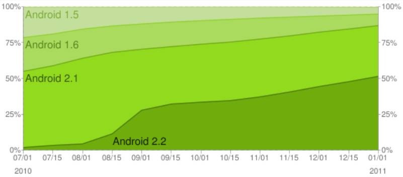
你可以注意到，使用Android 1.5和1.6的用户已经不是很多，最新版本2.3也还未成气候，不过2.x版本的用户数正保持着良好的增长势头。1.0和1.1的用户几乎都通过OTA自动升级到了1.5，不过1.5和1.6的用户却因为缺少相应的固件难以升级。很多手机生产商甚至并无推出新固件的计划，因为他们更专注于新机的开发。
对此有所了解之后，你可能会选择1.6或者2.0作为最低的目标平台。除非确实有必要用到最新版本中新增的特性。
2.4. 总结
Android操作系统在设计伊始，就是为一个完整的、移动设备之上的开源平台而考虑的。随着巨大的成功，它改变了整个行业的游戏规则。
在下一章，我们将在全局把握整个Android操作系统，看看它是如何将其各个部分巧妙地合为一体的。
3. The Stack
接下来的一章，我们将从9000英尺的高空俯瞰Android平台。即使你已经熟悉了如何编写Android应用，深入理解系统的结构也能使你更清楚的明白Android能干什么，不能干什么。
在本章结束后，你将至少能够大概的了解整个系统的是如何工作的。
3.1. 概述
Android 系统就像一个有很多层的蛋糕。 每一层都有自己的特性和目的。 这些层之间并没有一个明确的界限，而通常是相互渗透的。
在你阅读本章时，要注意本章仅仅是整个系统的概览而已，关于各部分的细节问题我们将稍后讨论。"Figure 2.1 Android Stack" 给出了 Android 系统架构的一部分。
Figure 2.1. Android Stack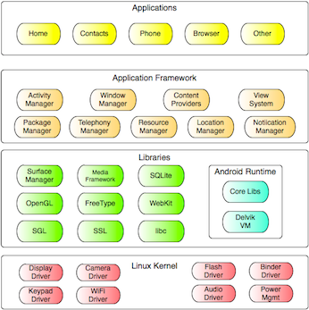
3.2. Linux
Android 是基于 Linux 系统构建的。 Linux 是一个伟大的操作系统，也是一个经典的开源项目。之所以选择 Linux 作为 Andoird 系统基础的原因有很多，最主要是因为它具有可移植性、安全性以及丰富的特性。
3.2.1. 可移植性
Linux 平台在各个硬件构架上的编译都相对简单。 多亏 Linux 为 Android 提供了硬件抽象， 使得我们不必为了不同硬件的不同特性而担忧。Linux 的绝大多数低级代码都是用可移植的C代码编写，因此第三方开发者可以将 Android 移植到很多不同的设备上。
3.2.2. 安全性
Linux 已经在一些苛刻的环境下使用和测试了数十年，被证明是一个非常安全的系统。Android 依靠 Linux 实现其安全特性。 所有的 Android 应用都在不同的 Linux 进程中执行，并且这些进程被 Linux 系统赋予了不同的权限。如此， Android 将大部分安全措施交由底层的 Linux 实现。
3.2.3. 丰富的特性
Linux 系统本身就具有很多实用的特性。 Android 从中受益良多，例如内存管理、电源管理和网络部分。
3.3. 本地库
来自开源社区的 C/C++ 本地库为 Android 应用层提供了很多必须的服务。它们包括:
- WebKit: 一个高速的Web渲染引擎，这个引擎已经被 Safari ， Chrome 和很多替他的浏览器所使用。
- SQLite: 一个全功能的 SQL 数据库
- Apache Harmony: 开源的 Java 实现
- OpenGL: 3D 图像渲染库
- OpenSSL: 安全套接字
- 等等
这些库中的大部分都是被原封不动的拿过来的，但是 Bionic 是一个例外。 Bionic 基本上是 C 标准库的重写版。 使用 Bionic 的原因有如下两条:
- 技术方面: 专门为使用电池的设备进行优化
- 许可证方面: 对希望对其修改或衍生的第三方软件是许可证友好的
GNU libc 是 Linux 默认使用的C标准库，它使用的 GPL 协议要求任何对其所做的修改公开发布时必须开放源代码。 这样的许可证对于大多数试图保护他们私有代码的商业公司来说都是不友好的。而 Bionic 所使用的 Apache/MIT 许可证并不要求公开这些修改。
3.4. Dalvik
Dalvik 是一个专门为了 Android 而设计的虚拟机。它由 Dan Bornstein 和他在 Google 的团队开发。
原本的 Java 虚拟机（VM）是为了适应各种不同的环境而设计，但是 Dalvik 开发团队认为专注移动设备可以带来更好的设计。于是他们研究了移动设备上那些短时间内基本上不可能改变的制约因素，例如电池的续航能力和处理器的速度。然后针对这些因素设计了 Dalvik 。
使用 Dalvik VM 代替传统 Java VM 的另一个副作用是许可证上的。 Java 的工具和 Java 运行库都是自由的，但是 Java 虚拟机不是。在2005年的时候这对 Dalvik 来说是个大问题。不过现在，除了 Sun 的 JVM 外，也出现了其他的开源 VM，例如 OpenJDK 和 Apache Harmony 。
通过一个真正开源的且许可证友好的虚拟机，Android 再一次提供了一个全功能的开发平台，并且它鼓励第三方将其移植到不同设备上而不用担心许可证的问题。
3.4.1. Android 与 Java
Figure 2.2. Java versus Dalvik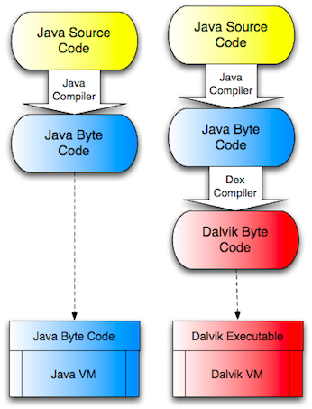
在 Java 里，你编写 Java 源文件，使用 Java 编译器编译成字节码然后在 JVM 上运行。但是在 Android 中并非如此。虽然你仍然需要写 Java 源代码然后编译成字节码，但是此时需要使用 Dalvik 编译器吧 Java 字节码编译成 Dalvik 字节码。真正在 Dalvik 虚拟机里执行的是 Dalvik 字节码。
3.4.2. 重要提示
和 Java 相比，你似乎需要为 Android 做很多额外的事情。但是事实上这些复杂的步骤都可以被 Eclipse 或者 ant 这样的工具自动完成的，而你几乎不会感觉到这些步骤的存在。
你也许想知道为什么不直接吧 Java 代码编译成 Dalvik 字节码呢? 这样做其实有很多优点。让我们回到2005年 Dalvik 项目刚刚开始时，当时 Java 的语法修改很频繁， 但是 Java 字节码基本上没有什么太大的改动。于是 Android 团队决定使用 JVM 字节码而不是 Java 源码来产生 Dalvik 代码。
这一来的副产品是， 理论上你可以使用其他语言可以编译成 Java 字节码的开发 Android 应用，例如 Python 或者 Ruby 。 我说“理论上”是因为你还需要向相应的 SDK 和库。不过万能的开源社区以后可能会提供这样的解决方案。
另外需要注意的是 Android Java 并非来自标准的 Java 家族。 Java 一般分为:
- Java 标准版: 用于开发基本的桌面型应用。
- Java 企业版（也叫 J2EE 或者 JavaEE ）: 用于开发企业级应用。
- Java 微型版（也叫 J2ME 或者 JavaME ）: 用于移动平台的 Java 。
Android 的 Java 类库类似于 Java 标准版，主要的区别在于 Java 类库的 GUI 接口（ AWT 和 Swing ）被替换成了 Android 专用的接口。 Android 在支持标准 Java 类库的同时还提供了若干新功能。 于是你不但能使用大多数你喜欢的已有库，而且还有很多新玩意可以使用。
3.5. 应用框架
应用框架是一个为开发者提供了多种服务的运行环境。这是整个 Android 平台中文档化最全面也是最完善的部分。良好的文档它可以激发广大开发人员的创意，并为他们构建优秀的应用提供有力的支持。
在应用框架层中，你能发现很多专门为了 Android 设计的库。你还将发现很多支持着应用程序所依赖的整个生态环境的服务（或者管理器），例如位置服务，传感器、WiFi、电话服务等等。
在你学习和使用 Android 进行开发的过程中，大部分的精力都集中在这个部分。 你将用到应用框架中的很多组件来实现你的应用。
3.6. 应用程序
架构的最上层是就你和其他开发人员创建的各种应用。 应用即 Andorid 呈现给用户的发光之处， 它可以被预先安装在系统中，也能从诸多的软件商店中下载。
3.6.1. APK 文件
每个应用都是一个 APK 文件（表示 Application PacKage ）。一个 APK 文件基本上由三个部分组成。它包括了所有的 Dalvik 代码（ Java 源文件可以自动编译成 Dalvik 代码），还有所有的资源（也就是出了代码以外的部分，例如图像和布局文件）。另外它还能包含可能会有的本地库。
- Dalvik 代码: 由你的 Java 文件编译而来的 Dalvik 字节码。这是完成你程序功能的主要部分。
- 资源: 资源就是除了代码外剩下的部分。你的应用中可能包含若干图片，音频/视频，还有很多的 XML 文件描述用来表述UI布局、语言包等等。总之，这些都是资源。
- 本地库: 可选的，你的应用中可能包含若干本地库，例如 C/C++ 库。 这些库被一并打包在 APK 文件中。
3.6.2. 应用程序签名
Android 程序在安装前必须进行签名。当用于开发目的是，我们使用开发密钥签名 - 这个密钥已经包含在开发环境中。 但是如果你想将你的应用用作商业发布， 你需要使用你自己的密钥签名。 关于签名的具体步骤你可以在 Android 网站上的 Signing Your Application 页上找到。 我也会在稍后的 Going Live 章节讨论这个话题。
3.6.3. 应用的发布
Android 与其他平台的一个显著区别就是应用的发布。在大多数的平台上，例如 iPhone， 应用的发布由一个单独的提供商独揽。 而在 Android 中，可以存在很多不同的 Android 商店。 每个商店都能决定自己的发布条款和分成方式等事项。这样使得 Android 就能成为一个允许提供商相互竞争的，自由的市场。
事实上，目前最大的应用市场“Android Market” 是由 Google 运营的。目前还不清楚 Google 只是希望促进和催生其他商店发展，或者是准备努力使之成为利润来源。
应用同样能通过 Web 发布。当你使用浏览器下载一个 APK 文件时， APK 文件就能自动安装到你的手机上。
3.6.4. 关于病毒、恶意程序和其他坏东西的一点讨论
由于这是一个去中心化的发布系统， 也就免不了有人利用用户的信任下载恶意软件来做坏事。目前已经有若干关于使用虚假的银行软件进行钓鱼攻击的报告。
Android 吧这个问题交给市场去解决。最终，如果你信任自由化的市场，就会产生有信誉的商店和没有信誉的商店。 例如 Google 通过移除 Android Market 中的恶意软件，例如虚假的银行软件，来保证用户的安全。 Google 依赖用户来举报恶意软件。 但是其他商店可能会做更多主动检测，然后在商店的显要位置作出提示。
3.7. 总结
在本章中，我们介绍了 Android 操作系统包括什么，以及它们是怎么形成一个有机的整体。你现在明白了是什么使得 Android 如此的完善、开放、并且对开发人员充满了吸引力。
在下一章中，我们将来探讨如何搭建你的开发欢迎来让你高效的完成工作。我们还将学习怎么编写一个简单的 Hello World 应用，并且将其解剖，来帮助你了解应用的不同部分。
4. Quick Start
在本章中，你将学会如何搭建一个 Android 开发环境。除了罗列出软件的下载地址外，还将给出搭建过程中的若干最佳实践。本章会涉及如何选择开发用操作系统和可能用到的 Android 工具等。你可以看到你将要从中选择（或者被规定使用）的各种工具的优势、缺点甚至坑爹之处。
完成本章阅读后，你将得到一个完整的开发环境。然后你就可以开始编写第一个 Hello World 程序，构建，然后在虚拟机里（或者在真机上，只要你乐意）运行它。
下文中将会使用 ~ 符号来表示你的个人目录。对于 Mac OS X 来说，这个符号一般代表 /Users/marko/ 这样的目录。对于 Linux 用户来说这个目录在 /home/marko ，而在 Windows Vista 和 Windows 7 中是C:\Documents and Settings\marko。同样的，我将使用 Unix 风格的正斜线而不是 Windows 风格的反斜线作为路径分隔符。
所以如果你使用 Windows 的话，只需要把 ~ 替换成 C:\Users\YourUserName ，并把 / 换成 \ 。除此以外，在 Mac 、 Linux 或者 Windows 上都是相同的。
4.1. 安装Android SDK
Android软件开发包（SDK）即你为Android开发应用所需的一切。除了一套开发的工具集，它也提供了一个用以测试的平台。你可以在Android SDK的下载页面为你的目标平台下载到对应的Android SDK。
下载之后，解压到一个方便访问的目录。在本书随后的例子中，将假定你SDK的安装目录在~/andorid-sdk。若你的安装目录在其它位置，注意替换即可。比如：
- Windows
- C:\apps\android-sdk-windows
- Linux
- /home/YourUserName/android-sdk-linux_86
- Mac OS X
- /Users/YourUserName/android-sdk-mac_86
我强烈建议Windows用户避免选择带空格的目录名，因为我们会经常用到命令行，而夹带空格的目录名只会增加无谓的复杂性。Windows XP的个人目录又恰恰是C:\Document and Settings，因此我建议不如把android-sdk放在一个新建的顶级目录之下，比如C:\apps。
不过，Windows Vista或Windows 7的话，直接放在C:\Users\YourUserName之下就好。
4.1.1. 设置PATH
Android SDK里有个目录，其主要工具都在里面。我们会经常在命令行中使用这些工具，所以把你的~/android-sdk/tools/目录加入系统的环境变量PATH之中会是个好办法，这一来就不用每次使用它们都切换目录了。
不同系统中设置PATH的方式各有不同，详见 Installing Android SDK 页面中的第二步。
4.1.2. 安装 Eclipse
Eclipse是一个开源的编程工具集，其前身是IBM为Java开发的IDE，如今已成为Java社区大部分开发者的首选。Eclipse的首页在http://eclipse.org/。
Eclipse有着强大的功能与丰富的实用特性，我会在行进的途中将其一一带出。不过需要上心的一点就是，Eclipse强大归强大，同时也非常的吃资源，有时你会巴不得一天重启一次。
Andorid开发并不限制开发者选择任何自己喜欢的编辑器或者IDE。不过Eclipse的使用者既占多数，本书也就选择了它。
如果你不想用Eclipse，可以参考 Developing in Other IDEs。
好，去 http://www.eclipse.org/downloads/ 可以下载到Eclipse。建议选择Eclipse IDE for Java Developers（注意不是Eclipse for Java EE developers，这个要大两倍），安装至任何目录都可以。
4.1.3. Eclipse Workspace
Eclipse通过project组织你的工作，而所有的project皆放置在workspace之中，其位置由用户决定。因此workspace的位置需要明确下来，我建议使用 ~/workspace 这样相对简单的位置来存放自己的代码。Windows的话，我依然建议避免在workspace目录中存在空格（使用命令行的时候会添麻烦），C:\workspace该是个好地方。
4.1.4. 安装Android Development Tools
你还需要安装Android Tools for Eclipse，如下：
Figure 3.1. Install New Software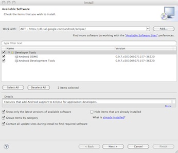
- 打开Eclipse，选择
Help→Install New Software。 - 进入
Available Software对话框，单击Add。 - 进入
Add Site对话框，在"Name"栏输入一个远程站点的名字（比如，“Android Plugin”）。 - 在
"Location"栏，输入这个URL：https://dl-ssl.google.com/android/eclipse/。 - 单击
OK。 - 回到
Available Software对话框，这时你可以在这个列表中发现多了一个"Developer Tools"。选择它也就自动嵌套选择了Android DDMS和Android Development Tools，单击Next。 - 在出现的
Install Details对话框中，前面选择的Android DDMS和Android Development Tools都列了出来。单击Next，阅读并确认许可条款，安装依赖，单击Finish。 - 重启Eclipse。
Note:
如果在下载插件时遇到问题，你可以尝试将URL中的"https"替换为"http"（使用https往往是出于安全目的）。
4.2. Hello World
一切准备妥当，我们就写个Hello World程序。实际上，由于Eclipse会为项目自动生成一些模板，这里需要写的代码并不多，重要的是理解。
4.2.1. 创建新Project
进入Eclipse，选择 File→New→Android Project 。有时菜单里可能会没有Android Project一项（尤其是第一次启动Eclipse时），选择Other找到Android Project即可。只要选择过一次，它就会一直显示在菜单里。
进入new project对话框，分别进行如下设置：
- 填写"Project name"。这是个Eclipse概念：Eclipse把一切皆组织为项目(project)，而项目名只能是一个单词。在命名上，我个人比较喜欢CamelCase方式。在此输入：
HelloWorld。 - 接下来选择"build target"，它为构建工具指明了目标平台的版本。其中列出了所有可用的目标平台，以及你的SDK中附带的扩展。在这里可以选择一个较新的版本，比如Android 2.2（但不要选择Google APIs）。
- 接下来设置你的project属性。其中的application name也就是你应用的英文名字，随便写上就好，比如"Hello, World!!!"。
- "package name"是个Java中的概念。在Java中所有源码都是组织为package，用以表示Java对象在不同类中的可见性，是个很重要的概念。在Android开发中package作为应用注册的单位，也是很重要的。其命名规范为逆序的域名，后跟可选的子域名(译者：这里译法有存疑)。比如我有个域名是example.com，要编写一个计算器（caculator）的应用，那package的名字就可以是com.example.caculator。
- "activity"一项是可选的。目前我们还没讲到Activity（参见第六章，Android用户界面），姑且把它看作是应用中的不同屏幕即可。Activity通过Java的类来表示，因此其名字也就遵守Java中类的命名规范：首字母大写，对多个单词使用CamelCase命名规范。在此输入
HelloWorld作为Activity的名字。 - "minimum SDK version"是这一应用所支持目标平台的最低版本，以API Level为单位。若想要得到较高的兼容性，就选择一个较低的版本。在这里我们只要支持本机即可，因此选择8，对应Android 2.2。
- 最后单击Finish按钮，Eclipse就会新建出一个项目。接下来，我们依次观察一下在这一环节中新建出来的文件。
Figure 3.2. HelloWorld New Project Window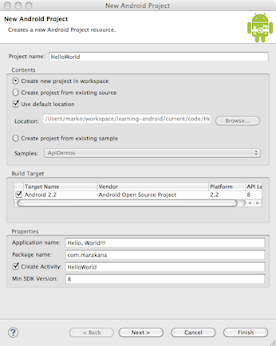
4.2.2. Manifest 文件
Manifest文件是应用各部分之间的牵线人。它申明了应用中包含的构件(Building Blocks)、所需的权限等等信息。
Example 3.1. AndroidManifest.xml
<?xml version="1.0" encoding="utf-8"?>
<manifest xmlns:android="http://schemas.android.com/apk/res/android"
package="com.marakana" android:versionCode="1" android:versionName="1.0">
<application android:icon="@drawable/icon" android:label="@string/app_name">
<activity android:name=".HelloWorld" android:label="@string/app_name">
<intent-filter>
<action android:name="android.intent.action.MAIN" />
<category android:name="android.intent.category.LAUNCHER" />
</intent-filter>
</activity>
</application>
<uses-sdk android:minSdkVersion="8" />
</manifest>
4.2.3. Layout文件
Layout文件用于表示屏幕的布局。在这里我们只用到了一个屏幕，即上面定义的Activity：HelloWorld。
Example 3.2. res/layout/main.xml
<?xml version="1.0" encoding="utf-8"?>
<LinearLayout xmlns:android="http://schemas.android.com/apk/res/android"
android:orientation="vertical" android:layout_width="fill_parent"
android:layout_height="fill_parent">
<TextView android:layout_width="fill_parent"
android:layout_height="wrap_content" android:text="@string/hello" />
</LinearLayout>
4.2.4. Strings文件
这也是个XML文件，包含应用中出现的所有文本。比如按钮的名字、Label、默认的文本等等，都统一在这一文件之下。把问题分解，令不同文件各司其职，这是个很好的做法——哪怕是XML文件。由此，Layout文件负责Widget的布局，Strings文件负责文本内容。
Example 3.3. res/values/strings.xml
<?xml version="1.0" encoding="utf-8"?>
<resources>
<string name="hello">Hello World, HelloWorld!</string>
<string name="app_name">Hello, World!!!</string>
</resources>
4.2.5. R文件
R文件用来关联Java与外部资源。它在res目录中的内容发生改变时(比如添加一个图片或者xml文件)由SDK自动生成，不必手工修改。
对这个文件本身我们不必关注太多，毕竟有Eclipse代劳。不过它里面的数据是非常有用的。
Example 3.4. gen/com/marakana/R.java
/* AUTO-GENERATED FILE. DO NOT MODIFY.
*
* This class was automatically generated by the
* aapt tool from the resource data it found. It
* should not be modified by hand.
*/
package com.marakana;
public final class R {
public static final class attr {
}
public static final class drawable {
public static final int icon=0x7f020000;
}
public static final class layout {
public static final int main=0x7f030000;
}
public static final class string {
public static final int app_name=0x7f040001;
public static final int hello=0x7f040000;
}
}
4.2.6. Java源码文件
Java代码是整个应用的驱动者。它会被编译为可执行格式，在Dalvik之上执行。
Example 3.5. HelloWorld.java
package com.marakana;
import android.app.Activity;
import android.os.Bundle;
public class HelloWorld extends Activity {
/** Called when the activity is first created. */
@Override
public void onCreate(Bundle savedInstanceState) {
super.onCreate(savedInstanceState);
setContentView(R.layout.main);
}
}
4.3. 仿真器
应用在仿真器（Emulator）上执行，与在真机上执行的效果是一样的。这是因为仿真器是机器码级别的仿真，其机器码与真机相同。
模拟器(Simulator)与仿真器(Emulator)名字很像，但有着本质的不同。“仿真器”的意思是模仿真机执行机器码的过程，接近于“虚拟机”。而“模拟器”是在相对较高的层次上模拟代码的行为。Android SDK附带了一个基于QEMU的仿真器。
使用仿真器之前，我们需要创建一个Android Virtual Device(AVD)。最简单的方法是在Eclipse中打开Android Tool。
打开Android SDK and AVD Manager：可以在Eclipse中单击，也可以在SDK的tools目录中执行android命令。
Figure 3.3. Android SDK and AVD Manager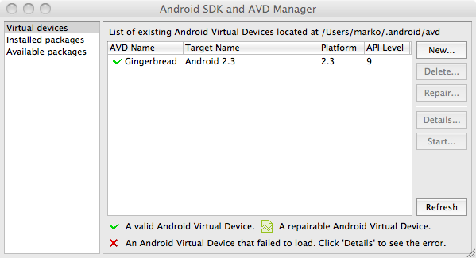
进入Android SDK and AVD Manager，单击New…，出现Create New AVD对话框。你需要在这个对话框里对新的AVD做一些设置。Name可以随便起一个。Target是目标平台的版本，其中的选项会因为SDK的平台及其安装的扩展而有所不同。如果里面没有任何选项，就返回Android SDK and AVD Manager，在Available packages中选择安装一个目标平台，比如Android 2.3 - API level 9。
AVD中也有一个SD卡，你能以MB为单位指明其大小。Skin指明其位置由你决定虚拟设备中的观感。通过Hardware选项可以详细设置AVD的硬件参数，选择其支持的特性。
Figure 3.4. New AVD Dialog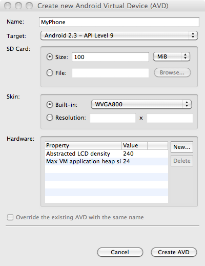
配置完毕，就可以在列表中见到一个新的AVD。好的，运行它仿真器就出来了。
Figure 3.5. Emulator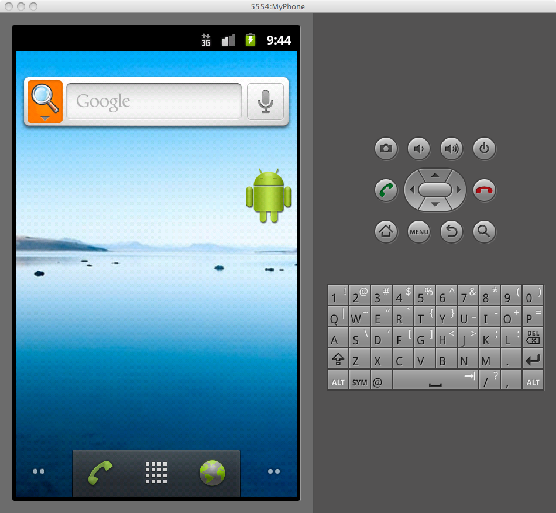
4.3.1. 仿真器 vs 真机
在大多数情况下，应用在仿真器上执行，与在真机上是没有区别的。少数的例外情况则往往是因为难以模拟，比如传感器。一般的硬件相关特性比如电话呼叫、地理定位等等，都可以由仿真器模拟。
4.4. 总结
Android开发环境的构建，几乎就是对付Android SDK和Eclipse了。 开发环境设置完毕，不妨动手搞个简单的Hello World实验一下。运行良好的话，也就证明环境已经配好，为往后正式的开发做好了准备。
5. 主要构件
在本章，你将了解到Android应用的基本组成部分：构件(Building Blocks)。我们将在一个较高的层面上观察何为Activity、Intent如何工作、Service酷在什么地方、怎样使用Broadcast Receiver与Content Provider使你的程序更易于扩展，以及更多的相关内容。
到本章结束，你将对何时选择哪个组件，以及它们在实际应用中的关系，有个概念性的认识。
5.1. 主要构件
构件(Building Blocks)即构建Android应用所需要用到的组件。就像盖房子需要砖块一样，有它们的堆叠组合才可以构建出完整的应用。刚开始设计时，不妨参照自顶向下的设计方法：先想想，你的应用的外观是什么样子，有什么功能，怎样实现。然后就可以打草稿了，画些线和圆表达你的思路。这对把握全局——怎样安排组件，让它们相互配合并且正常工作——是大有好处的。
5.2. 真实世界的例子
我们要做的是一个Twitter应用。用户的需求很清楚，也就是发新消息，同时查看朋友的新消息，这也正是它的基本功能。除此之外，我们还需要事先知道用户的用户名和密码以登录Twitter帐号。由此可得知我们需要三个界面。
然后，我们希望我们的应用能够流畅地运行，而不受网络连接情况影响。这一来应用就得在设备联网时及时从Twitter抓取消息，并缓存到本地。这需要用到一个后台运行的Service，也需要用到数据库。
我们也希望这个后台Service最好在设备开机时就能运行。这样用户只要打开这个应用，就可以直接查看到朋友们的最新消息了。
如上，这都是些很直白的需求。通过Android提供的构件，你可以轻松将以上的任务分离开来，独立完成。到最后简单地将它们打包，一个完整的应用就成型了。
5.3. Activity
Activity通常是指某一时刻用户在设备上看到的那个单个屏幕。应用程序一般会有多个Activity，用户在其间不断切换。因此，Activity组成了你应用程序中大多数可见部分。
我通常会用网站来类比Activity。就像一个网站拥有许多页面，Android应用程序也包含多个Activity。网站都会有主页，Android应用也有一个主Activity——就是当你启动应用程序时第一个显示的那个。网站需要在众多页面间提供某些导航机制，而Android应用也得做同样的事情。
在网站上，你能从一个页面跳转到其他站点的某个页面。类似地在Android中，你可以在某个应用程序上的用着某个Activity，但随后又启动其他应用程序的Activity。例如，当你在使用联系人应用时，选中发送短信给某个朋友，就会启动短信应用程序里的Activity编写短消息。
5.3.1. Activity 生命周期
启动Activity可能要付出相当高昂的代价。这将会创建一个新的Linux进程，给所有的用户界面对象分配内存，再从XML layout里展开所有的对象，还需要配置整个屏幕。我们要在启动Activity上做大量工作，而一但用户离开这个屏幕，工作就白费了。为了避免浪费，Activity Manager掌管了所有Activity的生命周期。
Activity Manager创建、销毁和覆盖被托管Activity。例如，当用户第一次启动应用程序，Activity Manager将创建并在屏幕上显示一个Activity。如果用户切换屏幕，Activity Manager会将先前的Activity移动到保存区域。这样只要用户想要回到之前的Activity，它就能更快地启动。为了给活跃的Activity腾出更多内存空间，有一段时间未被使用的Activity会被销毁。这种机制有助于提高用户界面速度，从整体上提升用户体验。
Figure 4.1. Activity生命周期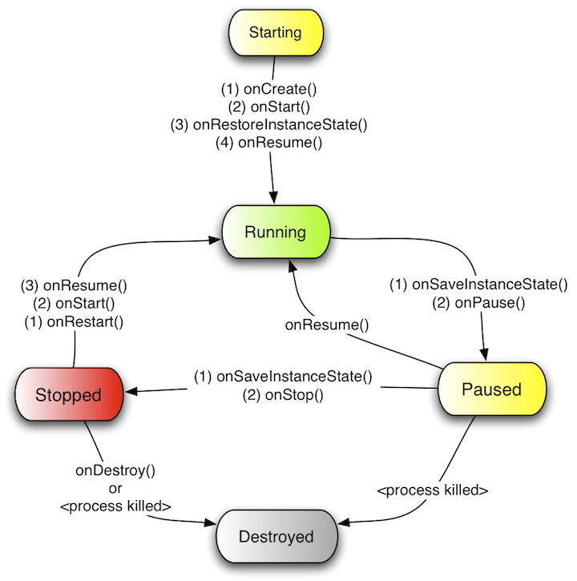
给Android环境编写程序和别的环境相比有概念上的差异。在Android中你会发现，你更多地需要响应应用程序里确定的状态改变，而不是自己去主动改变状态。这是一个被托管的，基于容器的环境，类似于给Java Applet或Servlet编程。所以对于Activity生命周期来说，你不能说当前Activity处在什么状态，但却可以说在一个状态转向另一个状态时发生了什么事情。
5.3.2. Starting State
尚不在内存中的Activity，就正处于Starting State。它启动后, Activity会按顺序依次调用整个回调方法，而这些方法可以由作为开发者的你来给出。最终，Activity将会处于Running State。
请记住，Starting State到Running State的转换是最为耗费机器时间的操作之一，而机器时间直接影响了设备的续航时间。这也就是我们不会主动销毁那些不再显示的Activity的确切原因。因为用户可能会返回到它们，所以我们仍需要保留一段时间。
5.3.3. Running State
当Activity处于Running State时，它会在屏幕上与用户交互。我们也可以称Activity正处于焦点，即指所有的用户交互，如敲击文字、触摸屏幕、点击按钮等，都由这个Activity处理。因此，某个时间只能有唯一的Activity在运行。
正处于Running State的Activity拥有尽可能快地调用内存与资源的特权。 这是因为Android需要保证正在运行的Activity能够敏捷响应用户。
5.3.4. Paused State
当Activity未处于焦点（即没有和用户交互）但仍可在屏幕上看到时，我们就说它在Paused State。这不是一个很典型的场景，因为屏幕通常很小，往往一个Activity要不是占据整个屏幕，要不就更本不出现。我们一般会在这个情况下看到此状态：Activity上方出现了一个对话框，使得它暂停。所有的Activity都会在将要停止前处于Paused State。
暂停的Activity仍然拥有获得内存和其他资源的优先权。这是因为它们仍然可见，还没有从屏幕上移除，不能让用户觉得它们很奇怪。
5.3.5. Stopped State
当Activity不可见，但是仍处于内存里时，我们称其为Stopped State。停止的Activity可以回到前台，再次变为正在运行的Activity。否则，它会被销毁，从内存中移除。
因为用户可能想回到之前的某些Activity，系统也保留了处于Stopped State的Activity。而且重新启动一个停止的Activity远比从头开始生成Activity要轻便的多。那是因为我们已经在内存中加载了所有的对象，只用把它们简单地带到前台罢了。
Stopped Activity也可以在任何情况下，从内存移除。
5.3.6. Destroyed State
被销毁的Activity不再出现于内存里。Activity Manager决定某个Activity不再需要，就会把它移走。Activity被销毁前，作为开发者的你，有机会再做些动作，如保存所有未保存的数据。然而，这里不保证你的Activity会在被销毁前处于停止状态。一个暂停的Activity有直接被销毁的可能。由于这个原因，在暂停时提前做些保存未保存数据这样重要的工作，比拖到停止时再做要更好。
事实上处于Running State的Activity并不意味着它就一定要做的很多。它也可以只是在那儿等待用户输入。类似地，处于Stopped State的Activity什么都不做也没有关系。状态名大部分时候指Activity正在如何响应用户输入。换句话说，指一个Activity是否可见，处于焦点或完全不可见。
5.4. Intents
Figure 4.2. Intents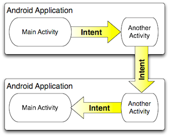
Intent是主构件间传递的消息。不管是Activity启动，抑或服务启动或停止，还是简单的广播，都会触发Intent。它是异步的，也就是说发送它们的代码不需要等到它们完成才能继续执行。
Intent可以是显性（explicit）或隐性（implicit）的。显性的Intent需要发送方清晰地宣称需要传递到的特定组件。而对于隐性的Intent，发送方只需要指明接收者的类型。例如，Activity可以发送一个宣称自己需要打开网页的Intent。在这个情况下，任何能够打开网页的应用程序都会争着完成这个动作。
当应用程序正在争抢你的意图时，系统会询问你希望由哪一个程序来完成你的给定动作。你也可以指定一个默认的应用。这个机制工作起来和桌面环境类似，比如当你下载了Firefox或Chrome浏览器来替换之前默认的Internet Explorer或Safari。
允许哪个程序回应消息的机制使得用户可以将任何系统应用定制为自己的。例如你可以下载第三方短信应用程序或者全新的浏览器来代替原有的程序。
5.5. Services
Service运行于后台，没有任何用户界面组件。他们的行为如同没有用户界面的Activity一般。Service适合于那些需要执行一段时间，且无需考虑显示的动作。比如当你使用音乐播放器播放歌曲时，你还能在其他应用程序间不断切换。
不要混淆了作为Android应用一部分的Service和原生的Linux服务，服务器进程和守护进程是Android操作系统中较底层的组件。
Figure 4.3. Service Lifecycle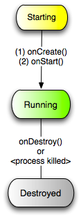
Service的生命周期比Activity简单的多。你只需要启动或者停止它。另外，Service的生命周期可以或多或少地由开发者掌控，而不被系统操纵太多。所以作为开发者，我们需要牢记Service不可以毫无必要的占据共享资源，例如CPU和电池。
事实上虽然Service运行于后台，但是并不能就此认为它是线程独立的。如果一个服务正进行需要耗费时间的动作（如网络通话），那么你通常需要在单独的线程里处理。否则，你的用户界面会显著迟缓。换句话说，Service和Activity是在主线程内执行的，而这个线程也被称为UI线程。
5.6. Content Providers
Figure 4.4. Content Provider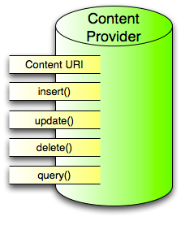
Content Provider是应用程序间共享数据的接口。Android默认每个应用程序运行在自己的沙盒内，这样所有属于某个应用程序内的数据将与其他应用程序相隔绝。少量数据可以通过Intent在应用程序间传递，而Content Provider则更适合于共享大量的持久数据。因此，Content Provider API会很好地遵循CRUD原则。
Android系统常常使用这种机制。例如，Contact Provider是一个为各种应用程序存储联系人数据的Content Provider。而Setting Provider则给包括内建于系统的众多应用程序提供系统设置。Media Stroe则能存储和共享所有的媒体类型，例如众多应用程序间分享着的照片与音乐。
将数据存储和用户界面程序分开，能带来系统各部分间高伸缩性地整合。举例来说，用户会安装第三方通讯录应用程序，而该程序还能和默认联系人应用共享数据，或者通过在Home Screen安装Widget来方便修改系统设置，比如开关Wifi、蓝牙或蓝牙功能。同时，许多手机制造商利用Content Provider在标准Android之上加入自己的应用程序来提升用户体验，比如HTC Sence。
Content Provider是一种包含了插入、更新、删除和查询方法的简单接口。这些方法看起来很像标准的数据库方法，因此将数据库连接代理实现为Content Provider是相当容易的。就像之前说过的，你会十分乐意使用Content Provider，而不是自己再写一个。
5.7. Broadcast Receivers
Figure 4.5. Broadcast Receiver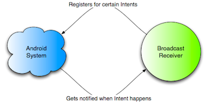
Broadcast Receiver是Android系统级广播/订阅机制的实现（更准确地说，这是个观察者模式）。Receiver只是当订阅的事件发生后，被激活并做出处理的代码。
系统自身时刻广播事件。例如，当收到短信时，或电话接入时，或电池电量低时，再或者系统启动时，所有的这些事件都会被广播，任何接收者都可以被他们触发。
在我们的Twitter应用案例里，我们要在进入系统时启动Update Service。为了实现这个目的，我们可以订阅能告知系统已完整启动的Broadcast。
你还可以从你自己的应用程序内发送Broadcast到另一个部分，或者是完全无关的应用程序。
Broadcast Receriver自身无法形象化的呈现，而且在内存中也并不活跃。但是一旦被激活，他们就会执行代码，如启动Activity，Service等等。
5.8. Application Context
目前为之你已经了解到了Activity，Service，Content Provider和Broadcast Receiver。它们组合在一起形成了应用程序。换用其他的说法，它们生存于相同的Application Context里。
Application Context是指应用程序内运行着的组件正处在的环境和进程。它允许在不同构件间共享数据和资源。
Application Context创建于应用程序中首次出现有组件启动之时，不管这个组件是Activity，Service或是别的什么。Application context贯穿于应用程序的生存周期。你可以通过调用Context.getApplicationContext()或Activity.getApplication来方便地获取Context。记住Activity和Service已经是Context类的子类，因此也继承了它所有的方法。
5.9. 总结
在本章里，你已经学习到部分关于Android应用程序组件的知识。我们通过组合这些组件创建各种各样的应用程序，不管是从简简单单的Hello World，还是那些相当复杂的作品。
在下一章里，我们将用Yamba应用程序作为提纲，来说明如何将这些零件组装成为运转良好的Android应用。
6. Yamba 项目简介
学习的最好方法就是参照一个合适的实例，并动手实践。在平日的教学中，我曾尝试使用过许多的实例，对数千名初学者讲解Android平台的一些特性。经过总结，一个好的实例该有如下特征：
全面
一个好的实例应该足以涵盖Android应用框架中的诸多特性，同时也把相应的特性用在点子上，而不仅仅是为了展示特性而使用特性。这对新接触Android的同学来说，可以端正学习的方向，是很重要的。
大众化
一个好的实例应当是简单易懂的。对我们而言，重要的该是理解它的设计与实现，而非平铺直叙它的特性与好处。
6.1. Yamba 项目
我为这本书选择了一个类Twitter的应用程序作为实例，它的名字是Yamba，即 Yet Another Micro Blogging App。 使用Yamba，你可以连接到twitter之类的微博服务以跟踪朋友的消息，也可以更新自己的消息。
Yamba作为一个实例，完整又不失简单。它用上了Android的所有构件(Building Blocks)，我们可以留意下它是如何将各个独立工作的部分合而为一的。至于Twitter这样的微博服务大家肯定不会陌生，因此有关程序的功能也就不多做解释了。
成品图大约如下：
图5.1. 来自友邻的消息列表，也就是Timeline
图5.2. 用户输入消息时屏幕的样子
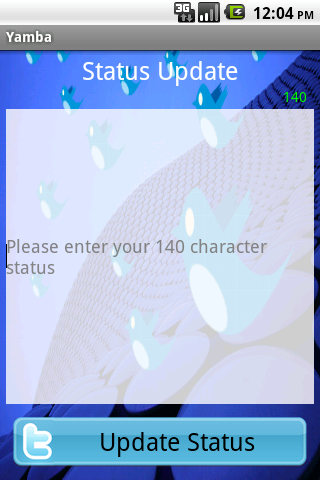
Figure 5.3. 用户选项
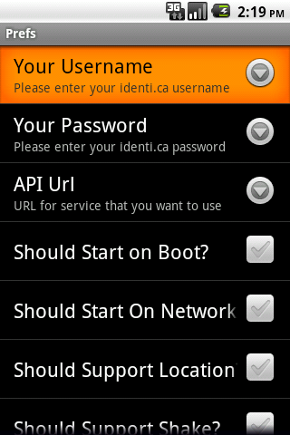
6.2. 设计原则
我们需要引入一个设计原则，作为指导项目行进的指南针，并贯彻项目的始终。在遇到问题时，它也可以给予我们一定的帮助。
渐进式开发
先从一个小程序做起，随后慢慢给它添加功能。一开始程序的结构会很简单，但是我们会在更新中不断为它添血加肉，让它慢慢成长。在行进途中我们会及时讲解这些变化，读者可以留意。
保持完整，保持可用
程序必须保证一直都是可用的。或者说，在每次修改中所添加的功能应尽量的小并且完备，一旦将其加入原先的代码即构成一个整体。并且保证在每一轮更新之后，程序都可以正常运行。
代码重构
每过一段时间就回头重构下我们的程序，及时消除重复代码，优化设计，增加代码重用，避免重复造轮子。 不过没有必要纠结于一次性解决所有的问题，毕竟还有未来的重构。在这一流程中，读者也可以体会下软件开发过程中的最佳实践。
6.3. 项目设计
在第4章中有提及，一个Android应用即Activity、Service、Content Provider、Broadcast Receiver的松散组合。它们作为Android的基本构件(Building Block)，在开发中扮演着不可或缺的角色。 图5.4 给出了Yamba的设计架构，可以留意其中基本构件与应用之间的关系。
Figure 5.4. Yamba Design Diagram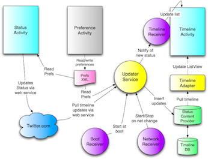
6.4. 第一部分: Android 用户界面
在这部分中，我们将着重介绍 Yamba 的第一个部分：消息列表界面。 我们的主要任务有：
6.4.1. 构建一个 Activity
我们先来熟悉一下 Android 的用户界面(UI)模型。Android的UI模型可能与你接触过的其它UI模型有所不同，其最大特点即它的 UI既可以通过Java描述，也可以通过XML描述。
在这一章中，我们将学习开发一个如图5.2那样允许用户发布消息的界面。在此过程中，我们选择配合使用Java和XML来完成UI 的设计。在此读者将了解到Android中布局（Layout） 和视图（View）的概念，图片的使用方法，以及美化UI的窍门。
我们的目标是通过一些 UI 设计上的最佳实践，让你的程序在任何尺寸和分辨率的Android上都不失美观和实用。
6.4.2. 网络和多线程
我们有了用户界面之后，就应该知道怎么吧用户的输入交给云端服务处理了。为了达成这个目的，我们引入了一个第三方的库来帮助我们访问 Twitter 的 API 服务。
在进行网络调用的过程中，我们会发现界面的相应速度变得极其缓慢，这是因为网络操作是不可预知的。网络上的延迟甚至可能使我们的程序停止响应。因此我们会在此时介绍Android的多线程系统，并且教你如何开发一个不会被外部条件所阻塞的应用程序。
6.4.3. Android 程序的调试
哦，糟糕，我们的程序不能正常工作了。 不过不要担心，这是故意的。 调试是任何程序开发中都不能缺少的组成部分。 我们会在本章教你如何使用 Android SDK 中提供的工具快速的定位并且解决问题。 调试会变成你的第二本能的！
6.5. 第二部分: 首选项，文件系统，选项菜单和Intents
这部分着重讨论配置页的开发。 在本节结束后，Yamba 将会拥有它的第二个界面， 一个界面用来更新用户状态，另一个用于配置首选项。 此时 Yamba 已经可以被不同的用户所配置，成为一个有用的 App 了。本阶段我们要创建的东西有：
6.5.1. Activity
首先，我们需要把界面做好。界面对应一个Activity，它是 Android 的基本组成之一。 我们将学习创建新界面的基本步骤和必备条件。
6.5.2. 菜单系统与 Intents
接下来，我们需要一个可以切换界面的方法。 所以在这里开始介绍 Android 的菜单系统是怎么工作的。同时你也将学习 Intents 的相关知识并且了解如何发送一个 Intent 来切换 Activity。
6.5.3. 文件系统
最后，我们来学习典型 Android 设备上的文件系统。阅读本章，你将深入了解操作系统是怎么组合在一起的。同时你还将学习 Android 的安全知识。
6.6. 第三部分: Android 系统服务
这部分介绍了后台服务的相关知识。 本章结束时， Yamba 将能够在后台周期性的连接云端服务并且下载友邻们的状态数据。
6.6.1. Android 系统服务
Android 的服务系统是一个非常有用的模块。它允许进程在后台运行而不显示任何用户界面。 这对 Yamba 来说是非常有用的，我们可以定期从云端上传或者下载数据。在本节中，你将学习在后台服务中如何使用多线程。
6.6.2. Application 对象
在本章，我们会发现代码中的重复变多并且程序不像刚开始时那样优雅了。为了重构 Yamba 使它变得更容易扩展，所以我们决定介绍 Application 对象。
6.7. 第四部分: 使用数据库
现在我们已经可以从云端获取数据了，但是却没有一个可以存储它们的地方。所以在本章中，我们将会介绍 Android 的数据库支持。 在本章结束后， 我们从云端获取的数据将可以在数据库中持久地保存了。
6.7.1. SQLite 和 Android 的数据库系统
Android 包括一个内建的叫做 SQLite 的数据库。 同时 Android 框架为这个小巧但是酷毙了的数据库提供了丰富的API，这使得 SQLite 更加易用。在本节中， 你将学习如何使用 SQLite 和它的配套 API。 不过虽然你不必深刻了解 SQL ，但是对 SQL 有一个大概的了解总不是坏事。
6.7.2. 再次重构代码
此时，我们有了一个再次重构代码的契机，我们需要 Yamba 变得更加精简。因为此时我们拥有足够的理由来做这件事，并且这样做的效果会在以后的章节里更加明显。
6.8. 第五部分: 列表与适配器
似乎我们应该回头看看 UI 了，不过列表（List）和适配器（Adapter）的却在 Android 的UI设计中十分有用。它们可以构成一种能够在小型UI中高效地显示大量数据的控件。换句话说，用户将能够长时间运行 Yamba 而不使影响性能。
目前数据都是在数据库中保存的，但是我们没办法把它们显示出来。 在这个部分中，我们要为 Yamba 设计一个用于显示时间线的界面，好让用户可以看到他的朋友们都在讨论什么。
6.8.1. 时间线界面
在接下来的几章中。我们终于要开始编写第三个，也是最后一个界面了。 首先我们使用已有的关于 Android UI 的知识吧需要的东西组合起来，得到一个基本上能正常工作的界面。 接下来我们将要改进以前设计。 我们的程序会变得更漂亮，但是它仍然不能满足现实世界的需求。最后我们会使用 List 和 Adapter 让它正常工作。
6.8.2. List 与 Adapter
我们使用 List 和 Adapter 来吧数据绑定到用户界面上。
6.8.3. 再重构一次？
现在我们已经完成了所有的基础界面，于是可以再次重构我们的代码了。我们应当让用户在不同的界面中拥有相同的用户体验，并且让后续的编码变得更加轻松。
6.9. 第六部分: Broadcast Receivers
在本部分中，我们会让Yamba能够聪明的相应来自外部的事件。为了达到这个目的，我们将会使用 Broadcast Receiver。
6.9.1. 启动和网络侦听器
假如我们希望在设备启动后能够自动的开始刷新时间线，我们还希望当网络不可用时停止更新时间线，并且在网络可用后恢复更新。我们就需要用到一种 Broadcast Receiver。
6.9.2. 时间线侦听器
还有另一种侦听器，他们只在某个特定的时间存在。并且他们不是用来收听来自 Android 的系统广播，而是来自 Yamba 中的自定义消息的。使用这种侦听器可以让我们拥有的松散的组件优雅且灵活的组合在一起。
6.9.3. 权限
现在你应该已经知道怎么向系统申请权限，比如访问网络或者文件系统。 在本节中，我们会学习如何定义我们自己的权限并且应用他们。毕竟我们不希望其他人能够访问 Yamba 内部的操作。
6.10. 第七部分: Content Provider
在本部分中，我们来回头看看 Content Provider 然后重构数据库代码。为了展示他们是怎么工作的，我们会把他们扔在一个 Android App Widget 中。
6.10.1. 状态数据
我们的状态数据如果没人关心它的话就无所谓了。但是如果我们希望吧这个数据暴露给系统的其他部分该怎么办? 毕竟其他的程序有可能希望用其他的方式来显示时间线。 为了达成这个目的，我们需要创建一个 Content Provider 来向外部暴露数据。
6.10.2. Android Widgets
但是有谁会关心我们的数据呢？ 为了展示刚刚暴露出来的数据，我们会把它显示在一个 Widget 中。 Android 的 Widget 是可以在主屏幕上放置并显示更新的小控件。 我们会创建一个用于显示 Yamba 中最近更新的状态的 Widget， 数据会通过状态数据的 Content Provider 来获取。
6.11. 第八部分: 系统服务
Android 系统包括很多很有用的服务: 你可以很简单的获取诸如 当前位置、传感器数据、 WiFi热点 等等数据。在这个部分中， 我们会为 Yamba 添加若干新功能，例如提交用户当前的位置。
6.11.1. 指南针和定位
本例会演示系统服务是通过什么样的方式工作的。 你将学习这些服务的一些共同特性。 我们将会使用传感器来开发一个罗盘应用，然后，使用类似的方式来为 Yamba 添加提交用户位置的功能。
6.11.2. Intent Service, Alarms, Notifications
Android 提供了一些很酷的功能可以让我们的更新服务更加简单。 所以我们会再次重构已有代码。 这次我们会引入 Intent Services 来处理 Intent 请求。但是我们还需要一些东西来触发 Intent 请求，所以还需要引入 Alarms 服务。 另外，我们还会使用 Notification 服务来增加一个用于同时在通知栏显示用户更新的功能。
6.12. 总结
本章的目的是为了接下来的八章做铺垫。 在这些章节结束后，我们会完成一个中等规模的 Android 应用。 并且你将学会若干基础建设的使用，并且怎么吧他们有机的结合起来。所有这些努力都是为了让你能够学会按照 Android 的思想来思考。
7. Android 用户界面
在本章里，你将能学习到如何在Android中建立用户界面。你将创建出你的第一个Activity。你将学到如何使用XML创建界面，并和关联到Java里。你将学习到View（又称Widget）和Layout。你将学会如何处理Java中的事件，如点击按钮。另外，你会得到将类Twitter API通过外部jar引入到你的工程中的支援，这样你的应用将能在远程调用网络服务。
在本章最后，你将会得到你自己编写的类Twitter Android客户端应用。这个应用将有单独的提示用户当前状态更新的界面，并将更新提交到网上。
7.1. 两种创建用户界面的途径
在Android中，有两种创建用户界面（UI）的途径。一种是声明式的（declarative），另一种是可编程式的（programmatic）。它们十分不同，但是往往需要相互结合使用才能完成任务。
7.1.1. Declarative User Interface
声明式方法就是用XML去声明UI看起来应当是什么样子。这就像用HTML创建一个网页。你通过编写标签和特定元素来显示到屏幕上。如果你曾用代码写过（hand-coded）HTML网页，那么就和创建一个Android界面的工作相同。
声明式的用户界面带来的好处是你可以使用所见即所得（WYSIWYG）工具。这些工具中的一部分已经包含于Eclipse Android开发工具集（ADT）扩展中，或者其他第三方开发工具里。另外，XML是人可读的，甚至不熟悉Android平台和框架的人也可以清晰地阅读用户界面的意图是什么。
声明式的用户界面的不利之处则在于你只能使用XML。XML非常适合声明界面的外观，但是不能提供较好地处理用户输入的方法。这就是为什么会提供可编程方法的原因。
7.1.2. Programmatic User Interface
可编程的用户界面就是用Java代码开发UI。对于那些做过Java AWT或Java Swing开发的人，Android就和这些工作类似。这也类似于其他程序语言里许多不同的UI工具箱一样。
基本上如果你想要通过编程创建一个按钮，你不得不宣称按钮，创建它的实例，加入到要包含按钮的容器里，并设置可能有意义的按钮属性，例如颜色、文字、文字大小、背景等等。你大概会想要宣称按钮一旦被点击会做什么，所以还要有块放代码的地方。所有工作完毕，最后你需要编写好几行代码。
所有可以声明的操作，你都可以用编程的方式做到。但是额外地，Java还能允许你指定按钮按下时能做些什么。这是编程方式创建用户界面的主要优点。
7.1.3. 结合两者最好
所以该用哪种？最好的实践是两者都用。你最好用声明式的（XML）方法声明所有用户界面中的静态元素，例如界面布局，所有的控件等，然后切换到可编程的（Java）方法定义当用户和界面中各个控件交互时的反应。换句话说，你用XML声明“按钮”长什么样子，用Java指定做什么。
注意到这里有两种开发用户界面的方法，但是在最后，所有的XML都会“展开”到Java内存空间里，就像你编写了Java代码一样。因此实际运行的只有Java代码。
7.2. View和Layout
Android组织UI元素到Layout和View中。所有你看到的，例如按钮、标签、文字框都是一个View。Layout组织View，例如一个按钮和标签的组合或这种组合的组合。
Figure 6.1. Layouts and Views relationship
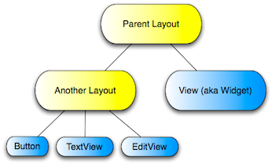
不要混淆Android UI中的控件（Widget）和App Widget —— 可以嵌入到其他应用程序（例如Home Screen应用程序）的小应用程序。这里我们指的是Activity中作View的控件。
因此，Layout能容纳其他子元素。这些子元素也可以是Layout，这允许了复杂的用户界面结构。
Layout给每个子元素分配空间。不同的Layout使用不同的方法布局它们的子控件。
下面是一些我们相比较下使用更为频繁的主要布局方式。例如Linear Layout，Table Layout， Frame Layout，Relative Layout，和Absolute Layout。
7.2.1. LinearLayout
LinearLayout是最为简单通用的布局方式之一。它简单地顺次纵向或横向排列它的子元素。子元素的顺序很重要。作为LinearLayout，它要询问每一个子元素它们需要多大空间，按照每个子元素加入的顺序分配所需空间。因此，如果存在一个较“早”的子元素请求占据整个界面空间，那么布局中的其他控件将没有剩余空间。
LinearLayout的一个重要属性是layout_orientation，它的选项有certical和horizontal。
虽然LinearLayout可能是最简单和通用的布局，但它不总是最好的选择。一个好的规则是如果你开始需要嵌套多个LinearLayout，你就可能需要使用别的布局，例如RelativeLayout。太多的嵌套布局会带来大量展开UI的时间消耗，且会使CPU超载、电池浪费。
7.2.2. TableLayout
TableLayout 在一个表格里布局它的子元素。TableLayout只存在TableRow控件。TableRow代表表格中的一行，并且它还能包含其他UI控件。TableRow控件水平地排列它的子元素，就像水平旋转的LinearLayout。
对于那些熟悉HTML的人来说，TableLayou类似于<table>元素，而TableRow则类似于<tr>元素。然而HTML还会用<td>表示表中每一个空格，而在Android中，每一栏由我们加入到TableRow中View的数量来动态决定。
TableLayout的一项重要属性是stretch_columns，它指明了展开填充可用控件的列索引。你也可以使用*来展开所有列。
7.2.3. FrameLayout
FrameLayout将所有的子元素都依次放在顶端，这样最后一个子元素会覆盖先前的元素，就像一叠卡片。这种布局策略对于标签等很有用。FrameLayout也用于其他控件的保留区，它们可以在随后某个时间用编程的方式及时加入到屏幕上。
7.2.4. RelativeLayout
RelativeLayout将它子元素各自相对的布局。因此这是种十分强大的布局方式，它也不需要你不必要的嵌套Layout才能实现某种外观。同时，使用RelativeLayout可以最小化需要绘制Widget的总数，继而提高应用程序的整体性能。就像之前说的，RelativeLayout需要所有的子View都拥有一个ID，这样我们才能相对的定位其他子元素。
7.2.5. AbsoluteLayout
AbsoluteLayout在屏幕上绝对地定位每个子元素。这是对所见即所得工具最友好的布局，它能自动生成你想要的UI。虽然很简单，但是它的扩展性相当不好。你的用户界面可能会在一部分屏幕上看起来不错，但是一旦屏幕大小、旋转或分辨率产生了变化，AbsoluteLayout将无法调整。
7.3. 启动Yamba项目
我们就要启动Yamba项目了。那么，启动你的Eclipse，点击File→New→Android Project。
你会发现一个对话框，询问新Android工程的信息。让我们再解释下所有重要项目的区别。
Project Name 这是Eclipse组织我们的工程时所用的名字。让Project Name不包含任何空格是个好注意，这样以后使用命令行访问更加地方便。这里就输入Yamba。
Contents 在这里就原封不动的保留，设置为creating a new project，这就是我们想要做的。
Build Target 我们想让应用程序运行与在哪种Android系统类型上。可以是任何Android平台，标准的或定制的。在这里我们假设要工作在Android2.3（API level 9），因此我们选择Android 2.3。 注：最新2.3.1（API Level 9）已过时，2.3的最新版本是2.3.3（API Level 10）。
Application name 应用程序的一个简单的文本名。可以是任意文本。就我们的应用来说，就输入Yamba好了。
Package name 一个Java包，因此这里需要遵守Java包命名规范。简要地说，你要反着写你拥有的域名。我在这里会使用com.marakana.yamba。
Create Activity 创建一个用于项目中的Activity的可选项。你可以就让它选中。就Activity name而言，我们必须遵守Java类命名规范。简单地说就是指驼峰式（CamelCase）规范。
Min SDK Version 表明能够使用在设备上的最低版本的Android SDK。这个数字和你选择的目标设备API Level相对应，在我们的例子里是Android 9。然而如果你的应用不依赖最新的API或者在较低的API上兼容度也十分好，你就应该重新考虑这个数字。在我们的例子里，该应用将能在API Level 4（Android 1.6）上运行。因此在这里输入4。这和直接限定最小为Android 2.3相比，较有利于我们将应用发行到更多的用户那里。
点击Finish。Eclipse的Package Explorer中就会出现Yamba工程。
Figure 6.2. New Project Dialog
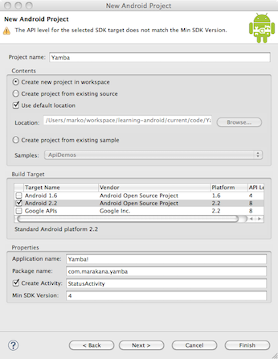
7.4. StatusActivity 布局
让我们开始设计一个用户界面，当我们进入新状态输入界面并点击按钮更新。
默认地，Eclipse在res/layout文件夹下创建了一个叫做main.xml的文件。为了方便，我们应该重命名该文件为status.xml来配合我们的StatusActivity。要在Eclipse里重命名文件，在其上单击右键，选择 Refactor→Rename… 然后输入一个新名字。Eclipse会自动地重命名文件，并还要做更多额外工作。尽管重命名Java文件时，这些工作都很顺利，但在重命名XML文件时却并不能完全地自动化。因此重命名这些文件还需要我们修改Java中通过R class引入那些文件的代码段。为了这么做，在你的StatusActivity的onCreate()方法里，修改setContentView(R.layout.main); 为setContentView(R.layout.status);。
这个界面将有四个组件：
- Title at the top of the screen. This will be a TextView widget.
- Big text area to type our 140-character status update. We’ll use EditText widget for this purpose.
- Button to click to update the status. This will be a Button widget.
- A layout to contain all these widgets and lay them out one after another in vertical fashion. For this screen, we’ll use LinearLayout, one of the more common ones.
- 位于屏幕最上方的标题。这里用一个TextView控件。
- 用于输入140字符状态更新的文本区域，我们使用EditText控件来实现。
- 点击更新状态的按钮。这里会是一个Button控件。
- 一个容纳所有这些控件的Layout，它将一个一个地垂直排列它们。对于此界面来说，我们使用LinearLayout，即所有布局中最常见的。
我们的StatusActivity源代码看起来就像这样：
Example 6.1. res/layout/status.xml
<?xml version="1.0" encoding="utf-8"?> <!-- Main Layout of Status Activity --> <LinearLayout xmlns:android="http://schemas.android.com/apk/res/android" android:orientation="vertical" android:layout_width="fill_parent" android:layout_height="fill_parent"> <!-- Title TextView--> <TextView android:layout_width="fill_parent" android:layout_height="wrap_content" android:gravity="center" android:textSize="30sp" android:layout_margin="10dp" android:text="@string/titleStatus"/> <!-- Status EditText --> <EditText android:layout_width="fill_parent" android:layout_height="fill_parent" android:layout_weight="1" android:hint="@string/hintText" android:id="@+id/editText" android:gravity="top|center_horizontal"></EditText> <!-- Update Button --> <Button android:layout_width="fill_parent" android:layout_height="wrap_content" android:text="@string/buttonUpdate" android:textSize="20sp" android:id="@+id/buttonUpdate"></Button> </LinearLayout>这份代码由Eclipse GRaphical Layout生成。这是作为Eclipse插件的Android Development Tools（ADT）的一部分，它用来帮助你 编写Android特定的XML文件。当ADT知道你正在设计一个UI布局，它就用Graphical Layout模式打开status.xml。你也可以通过选择位于status.xml窗口底部的标签页去查看原始XML文件。它将为这个界面给出XML源代码，就像上面展示的那样。 Figure 6.3. Graphical Layout mode for status.xml
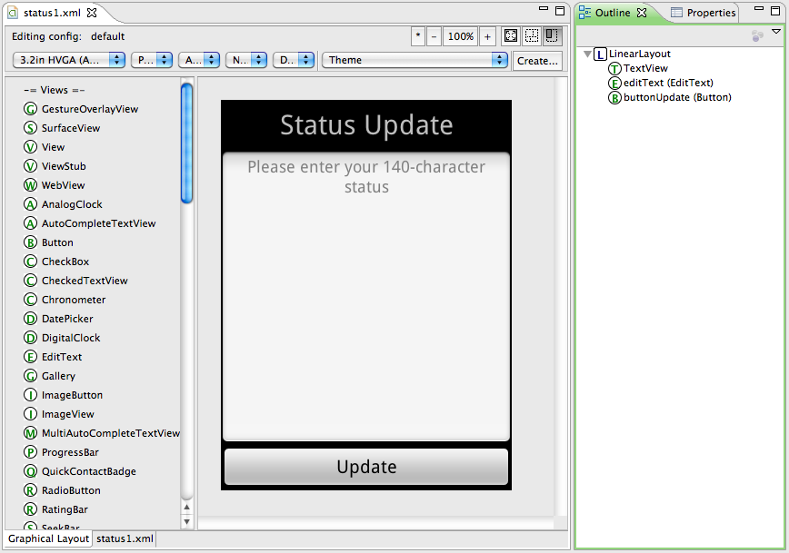
虽然在之前的章节里，我们讨论过这些XML资源的基本含义，代码中还是有一些细节需要你更多地了解，这些将在随后的章节中做检查。
7.4.1. Important Widget Properties
这些是你最有可能频繁使用的属性：
Important Widget Properties layout_height and layout_width 定义了控件需要从父元素请求的空间，以展示自身的大小。这里你可以输入像素、英寸等类似单位的值，但是这实际上并不好。因为你的应用程序需要在多种拥有不同大小屏幕的设备上运行，你需要为你的组件使用相对大小，而不是绝对大小。所以，最好的方案是选择fill_parent或wrap_content之一作为值。fill_parent指的是你的控件需要从父元素获得尽可能全部的空间。wrap_content则指的是它只需要它能够显示自己内容的空间。注意到在API Level 8或更高的版本里，fill_parent被重新命名为match_parent。
layout_weight 布局权重是一个介于0到1的数。它表示了布局需要的权重。例如，如果我们的状态EditText默认的权重为0，并且布局高度是fill_parent，那么更新按钮会被它挤出屏幕，并且它需要的空间会在button之前给出。然而当我们设置了状态控件的布局权重为1，我们就宣称我们需要所有可用的高度空间，但是不考虑其他也需要空间的控件，例如更新按钮。
layout_gravity 指明这部分控件位于布局中的位置，可以既是水平又是垂直的。值可以是top、center、left等等。注意到这个和之后的gravity属性的不同。例如，如果控件的宽度已设置为fill_parent的话，由于已占据全部的空间，因此试图放在正中间是没有多大意义的。然而如果我们的标题TextView设置的宽度为wrap_content，用layout_gravity居中将会得到想要的结果。
gravity 指定控件中的内容在控件内的位置。这个通常会和layout_gravuty混淆。这个属性是用来决定控件大小和期望的外观的。例如，如果标题TextView宽度是fill_parent，然后用gravity属性居中它会起作用，但是用layout_gravity不做任何事情。
text 不是所有的控件都有这个属性，但是还是有许多会用到，例如Button，EditText和TextView。它简单的指定了控件的文本。现在看来，不建议这里直接输入文本，因为这样你的布局就只支持一种地域或语言。最好的做法是在strings.xml资源里定义所有的文本，然后通过这个记号@string/titleStatusUpdate 指向一个特定的字符串。
id id是特定布局资源中特定控件的唯一表识符。不是所有的控件都需要一个id，而且我建议去掉不必要的id来简化内容。但是随后需要在Java中操作的控件需要id。id需要这样格式：@+id/someName，而someName可以是任意你想要称呼Widget的名字。我的命名习惯是在名字后跟上类型，@+id/buttonUpdateStatus就是这样的一个例子。
7.4.2. Strings Resource
Android全力将数据保存在分开的文件中。所以，布局在各自的资源内定义，而所有的文本值（例如按钮文本，标题文本等）都应该定义在叫做strings.xml的文件中。这也将运行你提供多种不同语言版本的字符串资源，例如英语、日语或俄语等。
此时的strings.xml文件看起来是这样的：
Example 6.2. res/values/strings.xml
<?xml version="1.0" encoding="utf-8"?> <resources> <string name="app_name">Yamba 1</string> <string name="titleYamba">Yamba</string> <string name="titleStatus">Status Update</string> <string name="hintText">Please enter your 140-character status</string> <string name="buttonUpdate">Update</string> </resources>
它其实就是简单地键值对集合。
我为我的资源名使用一种确定的命名习惯来称呼。让我们看看titleYamba这个例子。首先，我用资源用途做它的前缀，本例里是Activity的标题。然后我给它一个名字，Yamba。这种命名习惯帮助我们保持不同资源用一种容易查找的方式排序。最后，我为我的命名使用驼峰式命名法来处理多个单词的情况。
7.5. StatusActivity Java Class
现在我们将UI设计变成了XML，然后我们要准备切换到Java。本章前面说道Android提供了两种构建用户界面的方法。一种是用XML申明，就像我们刚才所做的。我们在能力所及做到了这些。另外一种方法是用Java编写程序来构建。我们也像之前说的像XML那样尽可能的去做，切换到Java上来。
我们的Java类文件是StatusActivity.java，并且Eclipse新建工程对话框已经为我们创建了其实现框架。这个类包含在com.marakana.yamba1 Java包中的，因此文件也在对应目录内。
T'RAN=== Creating your application-specific object and initialization code === 对于所有的Android主要构件，包括Activity，Service，BroadcastReceiver和ContentProvider，你通常都需要从Android框架的基类里集成子类，并且需要重载某些继承方法。在本例中，我们从Android的Activity类继承子类，并重载了onCreate()方法。当你调用它，Activity便拥有了一个确定的生命周期，也可认为是它们进入了状态机。我们作为开发者不能控制当前Activity处于何种状态，但是我们可以确定当转移到一个特定状态时会发生什么。在这个例子里，我们要重载的方法是onCreate()，它由系统ActivityManager在Activity第一次创建时调用（例如当要启动时叫做Starting State，而当运行时称为Running State状态）。这种我们需要继承一个系统类并填充空白方法的编程模式也就是熟知的模板模式。
我们的onCreate()方法，还需要额外的做些杂事，它将做两件应用程序只需要在开始时完成的主要任务。我们要为按钮设置点击响应，并将之连接到远程端。
注意到onCreate()会接受一个Bundle类型的参数。这是个可以通过Intent在启动Activity时在其间传递的少量数据。Bundle中提供的数据通常限制为基本数据类型，较复杂的类型则需要特别的编码。对于大部分情况，如果我们在Yamba例子中不是真的需要，则不会使用Bundle
记住不论何时，你只要想重载方法，那么第一件要做的事情就是调用原先由父类提供的方法。这就是为什么我们需要在这里调用syper.onCreate()的原因。
所以，一旦你的子类继承了框架中的类，重载了特定方法，在方法中调用了父类方法，你还是需要回到状态，你的代码会合原本的类做的一致。但是现在我们需要在我们可以加上自己代码的地方先占个位子。
Remember that R class is the automatically generated set of pointers that helps connect the world of Java to our world of XML and other resources in /res folder. Similarly, R.layout.status points to our /res/layout/status.xml file. 我们通常在ACtivity中的onCreate()里做的最基本的事情就是从XML文件里加载UI并展开到Java内存空间内。换句话说，我们写些Java代码打开XML布局文件，解析它，并对每个XML中的元素在内存空间内创建一个对应的Java对象。对于特定XML元素的每一个属性，代码都将在其Java对象中设置对应属性。这个过程叫做展开XML，并且这行包办了所有这些事务的代码是setContentView(R.layout.status);.
换句话说，方法setContentView()做了太多的工作。它读取XML文件，解析它，创建所有的对应于XML元素的特定Java对象，设置所有对应XML属性的对象属性，在对象间设置父子关系并全局地展开整个界面。在这行代码执行结束后，我们屏幕就绘制好了。
不是只有你编写的对象能够定义方法和响应外界事件。Android的用户界面对象也能做这些。因此你可以告诉你的Button，当点击时执行确定的代码。为了实现这个，你需要定义一个叫做onClick()的方法并将你想要执行的代码放在这个方法中。你也需要让这个Button运行setOnClickListener方法。对象是可以让你定义onClick()的地方，因此你需要通过setOnClickListener传递一个参数。
Example 6.3. StatusActivity.java, version 1
package com.marakana.yamba1;
import winterwell.jtwitter.Twitter;
import android.app.Activity;
import android.os.Bundle;
import android.util.Log;
import android.view.View;
import android.view.View.OnClickListener;
import android.widget.Button;
import android.widget.EditText;
public class StatusActivity1 extends Activity implements OnClickListener { // {#1}
private static final String TAG = "StatusActivity";
EditText editText;
Button updateButton;
Twitter twitter;
/** Called when the activity is first created. */
@Override
public void onCreate(Bundle savedInstanceState) {
super.onCreate(savedInstanceState);
setContentView(R.layout.status);
// Find views
editText = (EditText) findViewById(R.id.editText); // {#2}
updateButton = (Button) findViewById(R.id.buttonUpdate);
updateButton.setOnClickListener(this); // {#3}
twitter = new Twitter("student", "password"); // {#4}
twitter.setAPIRootUrl("http://yamba.marakana.com/api");
}
// Called when button is clicked // {#5}
public void onClick(View v) {
twitter.setStatus(editText.getText().toString()); // {#6}
Log.d(TAG, "onClicked");
}
}
- To make StatusActivity capable of being a button listener, it needs to implement OnClickListener interface.
- Find views inflated from the XML layout and assign them to Java variables.
- Register the button to notify this i.e. StatusActivity when it gets clicked on.
- Connect to the online service that supports Twitter API. At this point, we hard code the username and password.
- The method that is called when button is clicked, as part of OnClickListener interface.
- Make the web service API call to the cloud to update our status.
- 为了让StatusActivity也能做一个按钮的监听器，它需要实现OnClickListener接口。
- 查找从XML中展开的View并赋值到Java变量中。
- 注册Button以便在它按下时通知到StatusActivity。
- 连接到支持Twitter API的在线服务。在这里我们姑且将用户名与密码硬编码上去。
- 作为OnClickListener接口的一部分，当Button按下时调用的方法。
- 让网络服务API调用远程端以更新我们的状态。 === Compiling Code and Building Your Projects: Saving Files === 一旦你更改了你的文件，不论是Java还是XML，都需要在切换代码前确定你保存了它们。Eclipse会在每次你选择File→Save或者按下Ctrl-S时自动生成项目。所以保存文件很重要，确保你在切换到别的文件前将当前文件检查妥当。当你发现代码中没有任何红色的x标记时，你可以确信文件没有问题，项目成功生成。因为Java与XML相互依赖，当前文件未完成就移动到另一个文件会使得更难察觉出错误。 Java错误通常可以通过代码中的红色的x标记简单的找到，它将直接指引你到错误发生的行号。当你将鼠标刚好指向那个错误时，Eclipse就能告诉你发生了什么错误，并且还会为你提供些修改建议。Eclipse的这个功能十分有用，它很类似于文字处理软件中的拼写检查器。 Figure 6.4. Tracing Java Errors
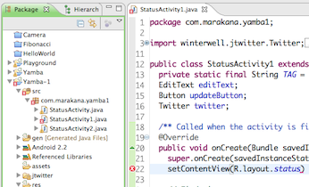
7.5.1. Adding jtwitter.jar Library
在我们的应用程序中，使用了和Twitter兼容的API来连接到在线服务。这种连接通过一系列网络服务调用来完成。因为Android使用了标准Java的网络能力，在Android中使用网络服务同在Java相比不需要知道新知识。所以，这里没有重复造轮子的必要。
为了更方便地使用网络服务和Twitter API，我们将选择由Winterwell Associaties提供的第三方类库jtwitter.jar。这个库提供了简单的Java类同在线服务交互，并抽象了所有的网络调用和来来往往地数据传输。如果没有人像jtwitter那样十分慷慨地提供满足我们需求的高级库，我们就只能使用标准Java网络库来完成任务。这只会带来更繁重的任务。
为了让jtwitter.jar能在Yamba项目里正常工作，这里该类库中的代码和Winterwell官方版本相比有稍许改动。
只要下载了这个类库，就可以放到你的Eclipse工程中。你只需简单的拖拽jtwitter.jar文件到该Eclipse工程的Package Manager窗口上。这将使文件成为该工程的一部分，不过我们的Java代码还是不能定位到它上。
Java在它的classpath内搜索所有的类。要把类库增加到classpath里，右键单击你的工程，选择Properties，你将会打开Yamba项目的属性对话框窗口。选择Java Build Path并选择Libraries页。在这里单击Add JARs… 并定位到你的jtwitter.jar文件。这将添加该JAR文件到你的工程classpath里。
Figure 6.5. Properties for Yamba project in Eclipse where we add the jtwitter.jar file.
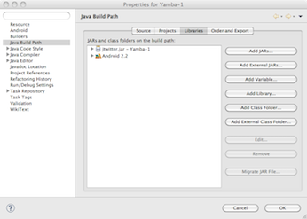
7.5.2. Updating Manifest File for Internet Permission
在应用程序能工作前，我们必须寻求用户的互联网访问权限。Android安全管理的方法是为危险操作单独指定需求权限。当第一次安装某个应用程序时，用户必须显式的对其授予一定权限。对应用程序要求的权限，用户只能授予全部或根本不授权——没有折中的余地。另外，当升级已经存在的应用时，用户不会被提醒授权问题。
当我们在通过USB线缆安装并在调试模式运行应用程序时，Android不会提醒我们权限问题。然而我们仍然必须指定应用程序所需要的权限。
在本例中，我们想要询问用户授权INTENET权限给这个应用程序。为了连接到在线服务，我们需要互联网。所以双击打开AndroidManifest.xml文件。注意到Eclipse通常用带有多标签页的所见即所得编辑器打开它。一直以来，我们对这个文件的大部分改动都通过这个界面完成。所以，选择底部最右边，总被称为“AnndroidManifest.xml”的页，在<manifest>块内添加<uses-permission android:name="android.permission.INTERNET" />元素。
Example 6.4. AndroidManifest.xml
<?xml version="1.0" encoding="utf-8"?>
<manifest xmlns:android="http://schemas.android.com/apk/res/android"
android:versionCode="1" android:versionName="1.0" package="com.marakana.yamba1">
<application android:icon="@drawable/icon" android:label="@string/app_name">
<activity android:name=".StatusActivity" android:label="@string/titleStatus">
<intent-filter>
<action android:name="android.intent.action.MAIN" />
<category android:name="android.intent.category.LAUNCHER" />
</intent-filter>
</activity>
</application>
<uses-sdk android:minSdkVersion="4" />
<uses-permission android:name="android.permission.INTERNET" /><!-- {#1} -->
</manifest>
- Defines the <uses-permission> element for INTERNET permission.
- 为INTERNET权限定义了<uses-permission>元素。
== Logging in Android ==
Android提供了系统级日志能力。你可以在代码的任何位置做记录，只需要调用Log.d(TAG, message)，这里TAG和message是字符串。TAG应该是能够标识代码、具有意义的标签。通常，标签可以是应用的名称，类名或者模块名。如何定义TAG的一个好建议是，在类内部为其定义一个Java常量，例如：
private static final String TAG = "StatusActivity";
Tip:
在你编译代码之前，你需要导入Log类。Eclipse有个不错的功能可以通过Source→Organize Imports或者快捷键Ctrl+O调用，这个功能将自动的组织import语句。然而，对于Log类来说，导入常常会产生冲突，因为许多类都叫Log。这时候你需要按照直觉做出选择。在这个例子里，Android Log和Apache Log类会发生冲突，所以做出判断还是很容易的。
Warning:
Eclipse Organize Imports工具有时候会导致难以查找的错误。例如，如果你的工程没有生成R.java（这通常源于之前某个XML资源的问题），那么Organize Imports将导入android.R类。这是另一个包含在Android框架中的R类，并且他
留意到日志类拥有不同的级别。.d()是调试级别。你还能指定.e()表示错误，.w()表示警告，.i()表示信息。还有个.wtf()级别表示根本不该发生的错误。有趣的是，它是指What a Terrible Failure（多么糟糕的失败）。Eclipse给不同级别的日志信息加上各种颜色标识。
7.5.3. LogCat
Android系统日志通过LogCat输出。LogCat是标准的系统级日志机制。它可被Java或C/C++代码访问。开发者能轻松地浏览日志，并根据记录的级别过滤输出，例如调试、信息、警告或错误，或者也可以用户自定义过滤标签。作为Android开发的重要组成部分，有两种浏览LogCat的方式：通过Eclipse或命令行。
7.5.4. LogCat from Eclipse DDMS Perspective
<<<<<<< .mine ======= To view logcat in Eclipse, you need to open the LogCat View. It is typically available in DDMS perspective to which you can switch by clicking on DDMS in top-right corner of Eclipse 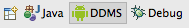 or by going to Window→Open Perspective→DDMS in the Eclipse menu. >>>>>>> .r103
DDMS指的是Dalvik Debug Monitor Server。它将运行于设备上的应用程序同Eclipse这样的开发环境连接了起来。
Figure 6.6. LogCat in Eclipse
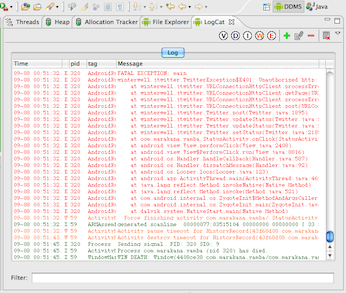 你能为LogCat定义过滤器。单击绿色加号按钮就会出现LogCat过滤窗口。你可以基于TAG或进程id定义过滤器。它将创建单独的LogCat窗口显示符合过滤条件的日志。
Figure 6.7. LogCat Filter

{Note}
如果你还没用过DDMS，那么它可能不会出现于Eclipse的右上角。出现了这种情况，访问Window→Open Perspective菜单并选择DDMS。设置完毕后，就会将窗口标签设置好。
7.5.5. LogCat from command line
就像所有的工具一样，任何在Eclipse里可以做的，在命令行里也可以做。要浏览日志，打开终端并输入以下命令：
[user:~]> adb logcat
它将为你裁剪出当前logcat的内容，并当设备产生新日志时实时更新。你也能在命令行过滤日志，但是命令可能不那么方便。想只看StatusActivity标签的项，你只需指定StatusActivity:*，也就是说你想该标签所有级别的日志。同时，你还可以指定你不想看到的内容。要这么做，加上*:S，就是指过滤所有其他的标签。下面的命令行做出例子说明：
[user:~]> adb logcat StatusActivity:* *:S
我发现总是保持一个运行着adb logcat的命令行窗口将会很有用处。对我来说它将方便地迅速跟踪应用状态，而且会比在Eclipse里切换到DDMS perspective要快得多。
7.6. Threading in Android
线程是一串按顺序执行的指令。尽管每个CPU一次只能处理一条指令，大部分操作系统都能在不同的处理器里同时处理多条线程，或者轮流地在单个CPU上执行它们。不同的线程拥有不同的优先级，所以操作系统决定了给每个线程共享多长时间的CPU。
Android操作系统基于Linux，因此拥有同时运行多线程的能力。然而作为开发者的你，需要清楚如何为应用程序安排线程，使得你能较适合妥当的设计应用程序。
7.6.1. Single Thread
默认情况下，Android应用程序运行于单线程下。单线程应用程序顺序执行所有命令，也就是说之前命令未完成前，下一命决不会执行。换句话说，每个调用都是阻塞的。
Figure 6.8. Single Threaded Execution

这个单线程也被称为UI（指用户界面）线程，因为该线程也处理所有的用户界面命令。UI线程在屏幕上绘制出所有的元素，同时还需要处理每个用户事件，例如触摸屏幕、点击按钮等等。
让StatusActivity运行于单线程上会在通过网络调用更新状态时出现毛病。因为所有的网络调用，需要耗费的执行时间是我们无法控制的。调用twitter.updateStatus()需要适应与所有的网络情况。我们不知道用户是否连接上了非常快的WiFI或者只是使用了较慢的连接方式。换句话说，应用程序调用网络未完毕前，界面将一直失去响应。
Android系统将杀死任何有一段时间未响应的应用程序，对Activity来说，通常是5秒。这将弹出应用程序未响应对话框，或者简称为ANR。
Figure 6.9. Application Not Responding
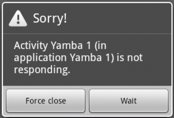
7.6.2. Multithreaded Execution
更好的解决方案是将可能耗时较长的操作放在另外的线程中进行。当多任务运行同时在多线程上时，操作系统会划分CPU时间，这样不会有任务独占。这样就好像多个任务在同时并行地执行。
Figure 6.10. Multithreaded Execution
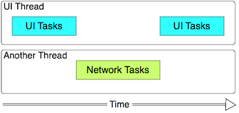
在本例中，我们可将每个更新状态的远程网络调用放在单独的线程里。这样我们的主线程将不会在我们等待网络时阻塞，应用程序会更能够响应。我们倾向于认为主线程运行于前台，而额外的线程则运行于后台。它们实际上从状态上看是平等的，也就是指在设备CPU上执行机会是平等的，但是从用户角度来看，主线程在前台，因为它和UI相关。
要使用多线程有很多种方式。Java有线程类来实现这种操作。我们可以明确地使用任何原本地Java功能在后台处理网络调用。
然而，有个问题是，使用了标准Java类将使得其他线程不能更新主UI线程中的元素。这将在需要同步当前对象状态出现，而这需要自己着手解决。
除了标准Java线程支持的以外，Android还提供了特别设计用来解决这个问题的工具类AsyncTask
7.6.3. AsyncTask
AsyncTask是Android中创建辅助需要处理长时间操作并通知到UI线程的机制。想利用这个类，我们需要创建AsyncTask的子类并实现doInBackground()，onProgressUpdate()和onPostExecute()方法。换句话说，我们要补上要在后台做的事情，当正在处理时要做的事情和当任务完成后要做的事情。
我们将为之前的例子添加异步提交到远程的功能。本例中的首要部分和例子6.3的代码"StatusActivity.java, version 1"很类似，只不过需要在异步线程上处理提交任务。而新的AsyncTask实例会在后台做提交操作。
Example 6.5. StatusActivity.java, version 2
package com.marakana.yamba1;
import winterwell.jtwitter.Twitter;
import winterwell.jtwitter.TwitterException;
import android.app.Activity;
import android.os.AsyncTask;
import android.os.Bundle;
import android.util.Log;
import android.view.View;
import android.view.View.OnClickListener;
import android.widget.Button;
import android.widget.EditText;
import android.widget.Toast;
public class StatusActivity2 extends Activity implements OnClickListener {
private static final String TAG = "StatusActivity";
EditText editText;
Button updateButton;
Twitter twitter;
/** Called when the activity is first created. */
@Override
public void onCreate(Bundle savedInstanceState) {
super.onCreate(savedInstanceState);
setContentView(R.layout.status);
// Find views
editText = (EditText) findViewById(R.id.editText);
updateButton = (Button) findViewById(R.id.buttonUpdate);
updateButton.setOnClickListener(this);
twitter = new Twitter("student", "password");
twitter.setAPIRootUrl("http://yamba.marakana.com/api");
}
// Asynchronously posts to twitter
class PostToTwitter extends AsyncTask<String, Integer, String> { // {#1}
// Called to initiate the background activity
@Override
protected String doInBackground(String... statuses) { // {#2}
try {
Twitter.Status status = twitter.updateStatus(statuses[0]);
return status.text;
} catch (TwitterException e) {
Log.e(TAG, e.toString());
e.printStackTrace();
return "Failed to post";
}
}
// Called when there's a status to be updated
@Override
protected void onProgressUpdate(Integer... values) { // {#3}
super.onProgressUpdate(values);
// Not used in this case
}
// Called once the background activity has completed
@Override
protected void onPostExecute(String result) { // {#4}
Toast.makeText(StatusActivity2.this, result, Toast.LENGTH_LONG).show();
}
}
// Called when button is clicked
public void onClick(View v) {
String status = editText.getText().toString();
new PostToTwitter().execute(status); // {#5}
Log.d(TAG, "onClicked");
}
}
- The PostToTwitter class in this case is an inner class of StatusActivity. It also subclasses AsyncTask. Notice the use of Java generics to describe the data types that this AsyncTask will use in its methods. We’ll refer to these three types below. The first data type is used by doInBackground, the second by onProgressUpdate, and the third by onPostExecute
- 本例中，PostToTwitter类是一个StatusActivity的内部类。它也是AsyncTask的子类。注意这里为Java泛型指定的数据类型，这些会是在AsyncTask的方法中用到的。我们指定了三种类型。第一个数据类型用于doInBackground，第二个用于onProgressUpdate，第三个则用于onPostExecute。
- doInBackground() is the callback that specifies the actual work to be done on the separate thread, as if it’s executing in the background. The argument String... is the first of the three data types that we defined in the list of generics for this inner class above. The fact that it’s followed by three dots indicates that this is an array of Strings and you have to declare it that way even though you want to pass only a single status.
- doInBackground()是指定需要在单独的线程中完成的确切任务的回调函数，就像是在后台执行一般。参数String...是该内部类的泛型列表中指定的三种数据类型中的第一个。事实上附上的三个点号指示了这会是一个字符串数组，而且就算你只传递了一个参数，也必须要这么申明。
- onProgressUpdate() is called whenever there’s progress in the task execution. The progress should be reported from the doInBackground() call. In this case, we do not have a meaningful progress to report. In another example, such as file download for instance, this could report the percentage of completion or amount of data downloaded thus far. The actual data type, in this case Integer refers to the second argument in the generics definition of this class.
- onProgressUpdate()当有该任务执行时调用。这个进程应当由doInBackground()调用。在本例中，我们没有需要报告的进程。在另一个例子中，例如文件下载实例，可以报告完成进度或者当前下载数据量。该参数类型在本例中是整数，也就是该类泛型定义里的第二个参数。
- onPostExecute() is called when our task is completed. This is our callback method to update the user interface and tell the user that task is done. In this particular case, we are using Toast feature of Android UI to show a quick message on the screen. Notice that Toast uses makeText() static method to make the actual toast message. Also, do not forget the call show() on the toast, otherwise your message will never be displayed and there won’t even be any errors - a hard bug to find. The argument that this method gets is the value that doInBackground() returns, in this case a String. This also corresponds to the third generics datatype in the class definition.
- onPostExecute()当任务完成调用。这是更新用户界面、告知用户任务完成的回调方法。在这个例子中，我们使用Android UI的Toast特性来向屏幕显示一个简要消息。注意到Toast使用makeText()静态方法实现简要消息。同样地，不要忘了给Toast实例调用show()，否则你的消息将永远不会显示，甚至都不会有任何错误——这是一个很难发现的Bug。这个方法的参数是doInBackground()返回类型，本例中是字符串。这也对应于类定义的第三个泛型数据类型。
- Once we have out AsyncTask setup, we can use it. To use it, we simply instantiate it and call execute() on it. The argument that we pass in is what goes into doInBackground() call. Note that in this case we are passing a single String that is being converted into a String array in the actual method later on. This is the use of Java’s variable number of arguments feature.
- 一旦设定好了AsyncTask，我们就能用他了。要用它，我们简单地实例化一个对象并调用其execute()方法。我们传递的参数会传递给doInBackground()调用。注意本例中，我们传递的单个字符串会被转换成字符串数组。这就是Java可变长参数特性的使用方法。 在此时，用户点击更新状态按钮时，我们的Activity会使用AsyncTask创建单独的线程，并在该线程里处理网络操作。完毕后，AsyncTask将更新主UI线程，用Toast弹出消息告知用户操作成功或失败。这种方法使得我们的应用程序响应性更好，用户将再也不会遇到在Figure 6.9所示的”应用程序停止响应：请强行关闭或等待“的消息。 Figure 6.11. StatusActivity, Part 1
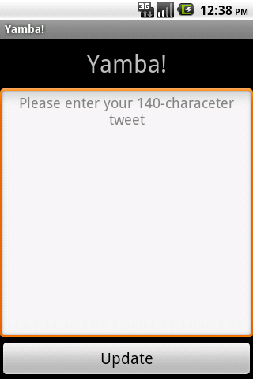
7.7. Other UI Events
到目前为止，你已经了解了如何通过实现OnClickListener并提供当按钮按下时调用的onClick()方法来处理点击事件。想象下我们想提供一个计数器来告知用户还能输入多少字符就会达到最多140字符的限制。为了实现这个，我们还需要其他种类的监听器。
Android为各类事件提供了许多不同的监听器，例如触摸、点击等等。在这个例子中，我们将使用TextWatcher监视文本编辑区域的文本变化。使用这个监听器的方法和使用OnClickListener等其他监听器的方法类似。
从用户角度来看，我们将增加另外的TextView到布局上，以指示仍可输入的字符数。该文本将能改变颜色，从绿色到黄色再到红色来表示输入到达限制的程度。
从Java的角度来看，我们将实现TextWatcher并附加到用户输入的文本区域。TextWatcher将在用户改变文本时调用，并会根据输入的文本更新计数器。
Example 6.6. res/layout/status2.xml
<?xml version="1.0" encoding="utf-8"?>
<!-- Main Layout of Status Activity -->
<LinearLayout xmlns:android="http://schemas.android.com/apk/res/android"
android:orientation="vertical" android:layout_width="fill_parent"
android:layout_height="fill_parent">
<!-- Title TextView-->
<TextView android:layout_width="fill_parent"
android:layout_height="wrap_content" android:gravity="center"
android:text="@string/titleStatus" android:textSize="30sp"
android:layout_margin="10dp" />
<!-- Text Counter TextView {#1} -->
<TextView android:layout_width="wrap_content"
android:layout_height="wrap_content" android:layout_gravity="right"
android:id="@+id/textCount" android:text="000"
android:layout_marginRight="10dp" />
<!-- Status EditText -->
<EditText android:layout_width="fill_parent"
android:layout_height="fill_parent" android:layout_weight="1"
android:hint="@string/hintText" android:id="@+id/editText"
android:gravity="top|center_horizontal"></EditText>
<!-- Update Button -->
<Button android:layout_width="fill_parent"
android:layout_height="wrap_content" android:text="@string/buttonUpdate"
android:textSize="20sp" android:id="@+id/buttonUpdate"></Button>
</LinearLayout>
- New TextView that represents the count of how many characters are still available for user to type. We start at 140 and then go down as user enters text.
- 用来表示用户还能输入多少字符的另一个TextView。我们从140开始并随着用户文本的输入往下倒数。
The following version of Status Activity implements the TextWatcher interface, and the new methods in this example appear at the end of the class. Initially the text of the counter is in green color to indicate we can keep on typing. As we approach the maximum, the text turns yellow and eventually becomes red to indicate we are beyond the maximum message size. 随后的StatusActivity实现了TextWatcher接口，本例中的新方法出现与该类的最后。文本计数器初始化为绿色表明我们能尽情输入。当我们趋近于最大值的过程里，文本会转为黄色并最终变为红色，表明我们达到了最大消息长度。
Example 6.7. StatusActivity.java, final version
package com.marakana.yamba1;
import winterwell.jtwitter.Twitter;
import winterwell.jtwitter.TwitterException;
import android.app.Activity;
import android.graphics.Color;
import android.os.AsyncTask;
import android.os.Bundle;
import android.text.Editable;
import android.text.TextWatcher;
import android.util.Log;
import android.view.View;
import android.view.View.OnClickListener;
import android.widget.Button;
import android.widget.EditText;
import android.widget.TextView;
import android.widget.Toast;
public class StatusActivity extends Activity implements OnClickListener,
TextWatcher { // {#1}
private static final String TAG = "StatusActivity";
EditText editText;
Button updateButton;
Twitter twitter;
TextView textCount; // {#2}
/** Called when the activity is first created. */
@Override
public void onCreate(Bundle savedInstanceState) {
super.onCreate(savedInstanceState);
setContentView(R.layout.status);
// Find views
editText = (EditText) findViewById(R.id.editText);
updateButton = (Button) findViewById(R.id.buttonUpdate);
updateButton.setOnClickListener(this);
textCount = (TextView) findViewById(R.id.textCount); // {#3}
textCount.setText(Integer.toString(140)); // {#4}
textCount.setTextColor(Color.GREEN); // {#5}
editText.addTextChangedListener(this); // {#6}
twitter = new Twitter("student", "password");
twitter.setAPIRootUrl("http://yamba.marakana.com/api");
}
// Called when button is clicked
public void onClick(View v) {
String status = editText.getText().toString();
new PostToTwitter().execute(status);
Log.d(TAG, "onClicked");
}
// Asynchronously posts to twitter
class PostToTwitter extends AsyncTask<String, Integer, String> {
// Called to initiate the background activity
@Override
protected String doInBackground(String... statuses) {
try {
Twitter.Status status = twitter.updateStatus(statuses[0]);
return status.text;
} catch (TwitterException e) {
Log.e(TAG, e.toString());
e.printStackTrace();
return "Failed to post";
}
}
// Called when there's a status to be updated
@Override
protected void onProgressUpdate(Integer... values) {
super.onProgressUpdate(values);
// Not used in this case
}
// Called once the background activity has completed
@Override
protected void onPostExecute(String result) {
Toast.makeText(StatusActivity.this, result, Toast.LENGTH_LONG).show();
}
}
// TextWatcher methods
public void afterTextChanged(Editable statusText) { // {#7}
int count = 140 - statusText.length(); // {#8}
textCount.setText(Integer.toString(count));
textCount.setTextColor(Color.GREEN); // {#9}
if (count < 10)
textCount.setTextColor(Color.YELLOW);
if (count < 0)
textCount.setTextColor(Color.RED);
}
public void beforeTextChanged(CharSequence s, int start, int count, int after) { // {#10}
}
public void onTextChanged(CharSequence s, int start, int before, int count) { // {#11}
}
}
- We declare that StatusActivity now implements TextWatcher. This means we need to actually provide the implementation for this interface, which we do later on in this class.
- textCount is our text view that we defined in the layout above.
- First, we need to find the textCount in the inflated layout.
- We set the initial text to 140 since that’s the maximum length of a status message in our app. Note that TextView takes text as value, so we convert a number to text here.
- The textCount field will dynamically change color based on how much text is left to type. In this case, we start with green. Notice that Color class is part of Android framework and not Java. In other words, we’re using android.graphics.Color and not java.awt.Color. Color.GREEN is one of the few colors defined as a constant in this class. More on colors in the next section.
- Here we attach the TextWatcher to our editText field. In other words, editText will call TextWatcher instance, in this case this which refers to this object itself.
- afterTextChanged() is one of the methods provided by the TextWatcher interface. This method is called whenever the text changes in the view that this TextWatcher is watching. In our case, whenever user changes the underlying text in editText, this method is invoked with the current text.
- Here we do some math to figure out how many characters are left given the 140 character limit.
- Next, based on the availability of the text, we update the color of the counter. So, if more than 10 characters are available, we are still in the green. Fewer than 10 means we are approaching the limit, thus yellow color. If we are pass the limit of 140 characters, the counter turns red.
- This method is called just before the actual text replacement is completed. In this case, we don’t need this method, but as part of implementing the TextWatcher interface, we must provide its implementation, event though its empty.
- Similarly, we are not using onTextChanged() in this case, but must provide its blank implementation.
- 我们申明StatusActivity现在能够实现TextWatcher。这意味着我们需要提供该接口的实现，随后将在该类里给出。
- textCount是在之前的布局里定义的TextView。
- 首先，我们需要在展开的布局中找到textCount。
- 我们设置初始文本为140，因为这是应用里状态消息的最大长度。注意到TextView需要将文本作为值，因此我们在这里将数字转换为了文本。
- textCount区域将根据可以输入的文本数动态改变颜色。在本例里，我们从绿色开始。注意到Color类是Android框架的一部分，而与Java无关。换句话说，我们要用android.graphics.Color而不是java.awt.Color。Color.GREEN是一些该类里预定义的颜色。更多关于颜色的说明会在下节给出。
- 这里我们附加TextWatcher到editText区域。换句话说editText将调用TextWatcher实例，本例中这将指向该对象自身。
- afterTextChanged()是TextWatcher接口提供的方法。当View中的TextWatcher监视的文本发生改变时调用这个方法。在我们的例子里，当用户改变了editText的文本，这个方法就会调用。
- 这里我们做一点点数学计算，算出达到140限制还剩下多少字符。
- 下一步，根据文本剩余输入长度，我们更新计数器的颜色。所以，如果超过10个字符可以输入，我们就仍然保持绿色。少于10个意味着我们将达到限制，也就是显示黄色。如果我们达到了140字符限制，计数器变为红色。
- 这个方法仅于文本替换完成前调用。在这个例子里，我们不需要这个方法，但是作为TextWatcher接口实现的一部分，我们必须提供它的实现，尽管这里是空的。
- 类似的，我们也不用onTextChanged()方法，但是还是得提供一个空的实现。 Figure 6.12. StatusActivity, Part 1
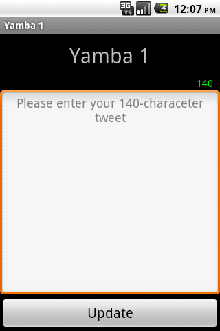
7.8. Adding Color & Graphics
我们的应用程序运作良好，但是看起来有沉闷。加上一点色彩和图片能更好点。Android提供了很多支持是你的应用程序更加时髦。我们先来学习点基本知识。
7.8.1. Adding Images
对于初学者，我们先来为界面加上背景。背景也是一些图片文件。在Android里，大部分的图像放在叫做drawable的资源文件夹里。你可能注意到你已经有了三个文件夹，它们分别叫做：
- /res/drawable-hdpi for devices with high density screens
- /res/drawable-mdpi for devices with medium density screens
- /res/drawable-ldpi for devices with low density screens
- /res/drawable-hdpi 用于有较高分辨率屏幕的设备
- /res/drawable-mdpi 用于有中等分辨率屏幕的设备
- /res/drawable-ldpi 用于有较低分辨率屏幕的设备
We are going to create another drawable folder called just /res/drawable. To do that, right-click on the res folder and choose New→Folder. For name, enter drawable. You can now put your graphics that are independent of screen density in this folder. We’re going to assume you found some cool background graphics and that you saved it in there under the name background.png. While Android supports many different file formats, PNG is preferred since to the once-controversial GIF standard because PNG is lossless and doesn’t require any patent licenses.
我们将新建另一个仅称为/res/drawable的文件夹。要这么做，右键单击res文件夹并选择New→Folder。输入名称为drawable。你现在能将与设备分辨率无关的图片放入到这个文件夹里。我们会假设你已经找到些不错的背景图片并且保存为background.png。Android虽然可以支持多种文件格式，但选择PNG格式比一度引起过争议的GIF更好，因为PNG是无损的而且不需要专利许可。
Tip:
PNG官方的全称是便携网络图形（Portable Network Graphics），而广为所知的PNG‘s Not Gif则反映了它和有争议的GIF标准的分歧。
记住所有的资源都被Eclipse实时“监视”着，在我们放入某些东西的瞬间，Eclipse就会用Android SDK工具自动更新R类。也就是说在这个时候，我们就可以在我们想在Java中使用这个资源时引用R.drawablw.background了。不过我们这里不在Java中引用。
下一步，我们将更新StatusActivity布局文件res/layout/status.xml。我们的目标是在整个界面的背景里使用该背景图片。要实现这个，我们将更新文件中的顶层布局，并设置背景为新的背景PNG文件。为了这么做，我们需要打开status.xml布局文件。现在我们有两种将背景加载到顶层布局的方法。
7.8.2. Using WYSIWYG Editor In Eclipse
一个方式是使用Eclipse提供的所见即所得工具。在此工具中，我们需要先选择主布局。由于上面有很多其他组件，可能我们开始会觉得很难选择。而红色边框告诉了你你正选择了哪个Layout或View。
另一种选择方式是在Eclipse里打开你的Outline View，并选择顶层元素。这个View可能在Eclipse里可见或不可见，决定于你如何安排多窗口。一种获得Outline View的有效方式是到Window→Show View→Outline并打开它。一旦你得到了这个打开的View，你就可以选择顶级布局，在本例中是LinearLayout。当红色的边框围绕在整个Activity上，你便能知道你选中了它。
下一步，你需要Eclipse的打开Properties view。同样地，这个View也可能已经打开或尚未打开。如果在Eclipse中不可见，去Window→Show View→Other并在General选项中选取Properties。这将打开一个你可以改变特定View的多种属性的View。
我们想要修改的属性是background。你可以点击…按钮打开选择资源引用的对话框。在这个对话框中，选择Drawable→background。
Figure 6.13. Reference Chooser
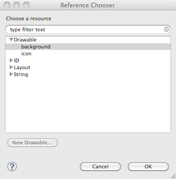 这将为你的顶层布局设置背景为@drawable/background。这是一种在XML资源里引用另一个资源的方式。在本例中，我们的status.xml布局引用了background.png drawable。注意到我们没有在引用其他资源时使用扩展名。Android会在出现相同名字不同扩展名时，自动选择最合适的文件类型。
Figure 6.14. Eclipse Graphical Layout Editor
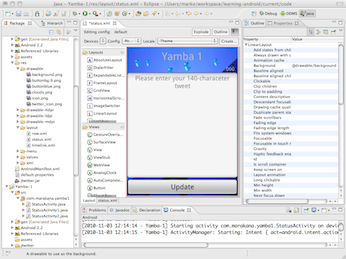 7.8.3. Updating Directly in XML Code
另一种办法是直接修改XML代码。记住，所有用Eclipse工具所做的事情，在纯文本编辑器内也能做。要切换到XML代码视图，选择窗口底部的标签页status.xml，在Layout标签页后。这将会用标准XML编辑器打开文件。
在本例中，想要增加背景资源到整个Activity上，我们只需简单的加上add android:background="@drawable/background"到<LinearLayout>元素内就可以了。
从现在开始，我们将直接修改XML代码，这样子能够很方便的作出说明。而所见即所得编辑器只能完成一些任务，而且常常会使你受到局限。
7.8.4. Adding Color
现在我们有了屏幕背景，但是用户输入文本框呢？当前设计还只是个现成的。我们可以增加些颜色和透明度来改进界面。
Android使用Standard RGB颜色配置，并拥有可选的Alpha通道扩展。所以你能用RGB或ARGB描述颜色，其中A指透明度分量，R指红色分量，G指绿色分量，B则指蓝色。三种颜色和一个可选透明度的组合能给你从白到黑、从不透明到完全透明的所有可以表示的颜色。这就是ARGB的所有知识。当然，精确度可能没有那么令人满意，每个值只有256种可能。
每一项的表示方法是0到255的值，或者是十六进制形式的从0到FF。所以确切值格式是AARRGGBB，其中每一个字母都可以用0到F的数代替。同时还有较短的ARGB格式，即重复相同的两个数字字符。例如，#3A9F和#33AA99FF相同，对应的#33是Alpha，#AA是红色，#99是绿色而#FF是蓝色。注意到我们在十六进制数前使用了#符号来将它们同十进制数区分开来。
所以，我们更新EditText元素的背景为#cfff，也就是一种透明的白色。
接下来，我们还能通过改变Text'View的textColor属性修改Title文本颜色。一个好注意会是白色。一种指定白色的方式是#fff，而另一种方式则是输入@android:color/white。android: 申明了这是指向Android操作系统的资源引用，在这里是已预定义的白色。
Example 6.8. res/layout/status.xml
<?xml version="1.0" encoding="utf-8"?> <!-- Main Layout of Status Activity --> <LinearLayout xmlns:android="http://schemas.android.com/apk/res/android" android:orientation="vertical" android:layout_width="fill_parent" android:layout_height="fill_parent" android:background="@drawable/background"><!-- {#1} --> <!-- Title TextView--> <TextView android:layout_width="fill_parent" android:layout_height="wrap_content" android:gravity="center" android:text="@string/titleStatus" android:textSize="30sp" android:layout_margin="10dp" android:textColor="@android:color/white" /><!-- {#2} --> <!-- Text Counter TextView --> <TextView android:layout_width="wrap_content" android:layout_height="wrap_content" android:layout_gravity="right" android:id="@+id/textCount" android:text="000" android:layout_marginRight="10dp" /> <!-- Status EditText --> <EditText android:layout_width="fill_parent" android:layout_height="fill_parent" android:layout_weight="1" android:hint="@string/hintText" android:id="@+id/editText" android:gravity="top|center_horizontal" android:background="#cfff" /><!-- {#3} --> <!-- Update Button --> <Button android:layout_width="fill_parent" android:layout_height="wrap_content" android:text="@string/buttonUpdate" android:textSize="20sp" android:id="@+id/buttonUpdate" /> </LinearLayout>- We set the background of the main layout to point to background.png file in /res/drawable/ directory.
- We set the color of the title text to point to color defined in system color resource white.
- We set the background of the edit text area to be a transparent white by specifying #cfff for color using hexadecimal ARGB value.
- 我们设置主要布局的背景成指向/res/drawable/目录下的background.png。
- 我们设置标题文本颜色为指向系统资源中定义的白色。
- 我们设置editText区域的背景通过十六进制ARGB形式的颜色值#cfff指定为透明白色。 这里你已经看到了不同多种View指定颜色的方式。Android为多种不同的控件提供了多种属性。你应该能够从这里总结出如何设置其他的属性来使你的应用程序界面显得和你想要的一致。 == Alternative Resources == Android支持多资源设置的方法。例如你可以有多个版本的strings.xml文件或status.xml布局或者background.xml图像。如此的理由是你会想要在多版本相同资源中根据环境选择最好的版本。我们已在“添加图片”这一节讨论过。 想象下你的应用程序在别的国家别的语言里使用。在这种情况下，你可以提供特定语言的strings.xml。或者想象下用户在不同设备上运行应用程序，有着不同像素的屏幕。在这种情况下，你需要多种版本的特定屏幕分辨率图片。类似地，用户会简单地旋转设备，从portrait模式到landscape模式。我们的应用程序将重绘，这里我们可以进一步增强用户界面布局使之适应不同旋转。 Android为所有这些情况用一种优雅的方式给解决了。基本上，你只简单地为特定环境创建文件夹即可。例如，我们的标准布局文件在/res/layout文件夹。好的，如果我们要提供当用户处于landscape模式下的特别布局，我们只需要创建新文件/res/layout-land/status.xml。如果我们想要提供用于加拿大法语区的strings.xml翻译版本，你只需要把翻译的字符串放进res/values-fr-rCA/strings.xml中。 就像你在这些例子里看到的，多资源机制通过资源文件夹名字包含的标识来指定。在加拿大法语字符串例子中，Android知道第一个标识符-fr指的是语言而第二个表识符-rCA指的是加拿大地区。在两个标识符里，我们使用两字符ISO代码指定地区。所以本例中，当用户在魁北克省时，而且她的设备配置成了法语优先，那么Android将在/res/values-fr-rCA/strings.xml里查找字符串资源。如果没有找到指定资源，它就会回退到默认的/res/values/strings.xml文件。同样地，如果用户在法国，Android在本例中还是将使用默认资源，因为加拿大法语表识符不和法国的法语匹配。 通过使用表识符，你可以为语言和地域、屏幕大小、屏幕旋转、设备输入模式（触摸屏、手写笔）、是否有键盘等情况创建多资源。但是你怎么知道文件夹资源名字要转换为什么呢？最方便的工具就是使用Eclipse的New Android XML File对话框。要打开New Android File对话框，在Eclipse菜单中选择File→New…→Android XML File。 Figure 6.15. Alternative Resources with New Android XML File Dialog
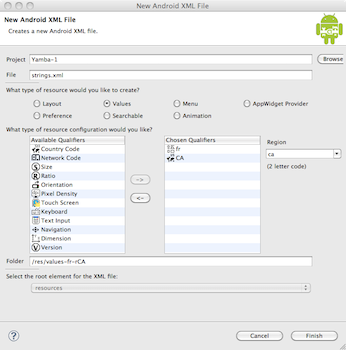 7.9. Optimizing User Interface
对于典型的应用程序来说，用户界面是最耗费资源的部分。创建一个简单的界面，你的应用程序需要从资源中展开XML文件。对于每个元素，需要创建新的Java类并指定它的属性。然后需要在屏幕上绘制每个控件。全部工作需要耗费大量机器周期。
告诉过所有这些，值得留意一些优化点。你需要限制在屏幕上的Widget的数量。当你需要使用嵌套布局来实现需要的界面时十分重要。如果你在代码循环中嵌套了些没有必要的类时，就会导致失控（比如，在屏幕上显示一行数据），然后控件的数量便会急剧增加，你的用户界面会变得迟钝。
一般来说，你需要保持结构平整而不是过深。你可以通过用RelativeLayout替换嵌套布局解决这个问题。
7.9.1. Hierarchy Viewer
Android SDK中的一个非常有用的工具称为Hierarchy Viewer。过去启动它 - 它就在你的SDK/tools目录下。
Hierarchy Viewer允许你附加到任何Android设备、模拟器或物理手机上。你能查看当前View的结构。它展示了所有加载在内存中的Widget，它们之间的相互关系和所有的属性。除了自己编写的界面，你还能检查设备上任意应用程序的界面。这也是查看其他应用程序结构的好方式。
Figure 6.16. Hierarchy Viewer
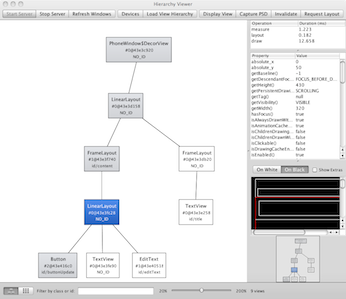 7.10. Summary
在本节最后，你应该运行起你的应用程序，看起来就像Figure 6.17那样。它应该能成功发布你的推到Twitter账户上。你能通过登陆到你所选择的支持Twitter API的线上服务来检查工作，例如yamban.marakana.com在应用程序里使用了相同的硬编码用户名/密码。
Figure 6.17. StatusActivity
在Figure 5.4, “Yamba Design Diagram”中的示意图展示了我们到目前为止的设计蓝图。
Figure 6.18. Yamba Completion
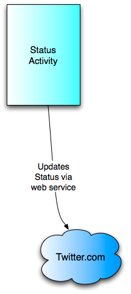 8. Service
Service与Activity一样，同为Android的基本构件。其不同在于Service只是应用在后台执行的一段代码，而不需要提供用户界面。
Service独立于Activity执行，无需理会Activity的状态如何。比如我们的Yamba需要一个Service定时访问服务端检查朋友的新消息，它会一直处于运行状态，而不管用户是否开着Activity。
同Activity一样，Service也有着一套精心设计的生存周期，开发者可以定义其状态转换时发生的行为。Activity的状态由ActivityManager控制，而Service的状态受Intent影响。假如有个Activity需要用到你的Service了，它就会发送一个Intent通知打开这个Service(若该Service正在执行中则不受影响)。通过Intent也可以人为停止(即销毁)一个Service。
Service分为Bound Service和Unbound Service两种。Bound Service有着更灵活的API，允许通过AIDL(Android Interface Definition Language)与不同的应用进行交互。在本章，我们先研究Unbound Service，它只有两种状态：执行(Started)或停止(Stopped，或Destoyed)。而且它的生存周期与启动它的Activity无关。
在本章你将动手创建一个Service。它在后台执行，更新用户在Twitter上最新的Timeline，并暂时输出至log文件。我们让这个Service在一个独立的线程中执行，因此也会顺便讲些并行的相关知识。除此，还有Toast的用法，以及对Service和Activity所共有的上下文也有所讲解。
到本章结束，你将拥有一个可以发消息、定时更新Timeline的可用程序。
8.1. Yamba的Application对象
前面我们已在StatusActivity中实现了选项界面。现在还需要一个工具函数
getTwitter()来获得Twitter对象，从而与服务端交互。到这里似乎需要用到应用其它部分的功能了，怎么办？可以复制粘贴，但不提倡这样。正确的做法是把需要重用的代码分离出来，放到一个各个部分都可以访问的地方。对Android而言，这个地方就是Application对象。
应用一旦执行，就会随之创建一个Application对象，其中保存着程序各部分所共享的状态。Application对象的实例大多来自框架提供的基类
android.app.Application。你也可以继承它，往里面添加自己的函数。接下来我们创建自己的Application对象，即YambaApplication。首先：
- 创建一个表示YambaApplication的Java类。
- 在AndroidManifest.xml文件中注册新的Application对象。
8.1.1. YambaApplication类
我们先在原package里额外定义一个Java类，即
YambaApplication，以框架提供的Application作为基类。然后把一些通用的任务放在里边。也就是为程序各部分所重用的一些代码，比如连接到服务端或者读取配置数据。
留意
Application对象里面除了常见的onCreate()，还提供了一个回调函数onTerminate()，用以处理程序退出时的一些清理工作。在这里我们没有什么需要清理的东西，但是借机记录一些log信息也不错，方便观察程序在何时退出。Example 8.1. YambaApplication.java
package com.marakana.yamba3; import winterwell.jtwitter.Twitter; import android.app.Application; import android.content.SharedPreferences; import android.content.SharedPreferences.OnSharedPreferenceChangeListener; import android.preference.PreferenceManager; import android.text.TextUtils; import android.util.Log; public class YambaApplication1 extends Application implements OnSharedPreferenceChangeListener { //{#1} private static final String TAG = YambaApplication1.class.getSimpleName(); public Twitter twitter; //{#2} private SharedPreferences prefs; @Override public void onCreate() { //{#3} super.onCreate(); this.prefs = PreferenceManager.getDefaultSharedPreferences(this); this.prefs.registerOnSharedPreferenceChangeListener(this); Log.i(TAG, "onCreated"); } @Override public void onTerminate() { //{#4} super.onTerminate(); Log.i(TAG, "onTerminated"); } public synchronized Twitter getTwitter() { //{#5} if (this.twitter == null) { String username = this.prefs.getString("username", ""); String password = this.prefs.getString("password", ""); String apiRoot = prefs.getString("apiRoot", "http://yamba.marakana.com/api"); if (!TextUtils.isEmpty(username) && !TextUtils.isEmpty(password) && !TextUtils.isEmpty(apiRoot)) { this.twitter = new Twitter(username, password); this.twitter.setAPIRootUrl(apiRoot); } } return this.twitter; } public synchronized void onSharedPreferenceChanged( SharedPreferences sharedPreferences, String key) { //{#6} this.twitter = null; } }- YambaApplication只有作为
Application的子类才可以作为一个可用的Application对象。留意我们在这里也把OnSharedPreferenceChangeListener的实现从StatusActivity挪到了YambaApplication。 Twitter对象和SharedPreferences对象在这里都成为了共享对象的一部分，而不再为StatusActivity所私有。onCreate()调用于Application对象第一次创建的时候。只要应用的任何一个部分启动(比如Activity或者Service)，Application对象都会随之创建。onTerminate()调用于应用结束之前，在里面可以做些清理工作。在这里我们只用来记录log。- 我们也把StatusActivity的
getTwitter()方法挪到了YambaApplication这里，因为它会为程序的其它部分所调用，这一来有利于提高代码的重用。留意下这里的synchronized关键字，Java中的synchronized方法表示此方法在同一时刻只能由一个线程执行。这很重要，因为我们的应用会在不同的线程里用到这个函数。 onSharedPreferenceChanged也从StatusActivity挪到了YambaApplication。
现在我们已经有了
YambaApplication类，也转移了StatusActivity的一部分功能过来。接下来可以进一步简化StatusActivity：Example 8.2. StatusActivity using YambaApplication
... Twitter.Status status = ((YambaApplication) getApplication()) .getTwitter().updateStatus(statuses[0]); //{#1} ...- 现在是使用来自YambaApplication的
getTwitter()方法，而不再是局部调用。同这一样，在其它需要访问服务端的部分也都可以使用这个方法。
8.1.2. 更新Manifest文件
最后一步就是通知我们的应用选择YambaApplication而非默认的Application了。更新Android的Manifest的文件，为<application>节点增加一个属性：
<?xml version="1.0" encoding="utf-8"?> <manifest xmlns:android="http://schemas.android.com/apk/res/android" android:versionCode="1" android:versionName="1.0" package="com.marakana.yamba2"> <application android:icon="@drawable/icon" android:label="@string/app_name" android:name=".YambaApplication"> <!--{#1}--> ... </application> ... </manifest>- <application>节点中的属性
android:name=".YambaApplication"令Android系统选择YambaApplication类实例化Application对象。
好，到这里我们已经成功地把
StatusActivity里面一些通用的功能转移到了YambaApplication之中。这一过程就是代码重构。添加了功能就记着重构，这是个好习惯。8.1.3. 简化Status Activity
现在获得Twitter对象的功能已经在YambaApplication里面，接下来我们可以简化Status Activity，改用YambaApplication提供的功能。如下是异步任务(Async Task)
PostToTwitter的样子：class PostToTwitter extends AsyncTask<String, Integer, String> { // Called to initiate the background activity @Override protected String doInBackground(String... statuses) { try { YambaApplication yamba = ((YambaApplication) getApplication()); //{#1} Twitter.Status status = yamba.getTwitter().updateStatus(statuses[0]); //{#2} return status.text; } catch (TwitterException e) { Log.e(TAG, "Failed to connect to twitter service", e); return "Failed to post"; } } ... }- 在当前上下文中调用
getApplication()获得Application对象的引用。这里的Application对象来自我们自定义的YambaApplication，因此需要一个额外的类型转换。 - 得到Application对象的引用之后即可调用其中的函数了，比如
getTwitter()。
以上，可以看出我们是如何一步步将StatusActivity中的功能重构到Application对象之中的。接下来就利用这些共享出来的功能，实现我们的Updater Service。
8.2. UpdaterService
在本章的引言有提及，我们的Service会一直在后台执行，定期获取Twitter的最新消息并存入本地的数据库。这一来我们的程序在离线时也有缓存的数据可读。我们称这个Service为UpdaterService。
创建Service的步骤如下：
- 创建一个表示这个Service的Java类。
- 在Manifest文件中注册这个Service。
- 启动Service。
8.2.1. 创建UpdaterService类
创建Service的基本过程与创建Activity或者其它基本构件大同小异，首先都是基于Android框架提供的基类，派生一个子类。
先新建一个Java文件。在src目录中选择你的Java package，右键选择New→Class，在class name一栏输入UpdaterService。这样就在package中新建出来一个UpdaterService.java文件。
回忆一下，在"Service"一节有提到过一般的Service的生存周期：
图8.1. Service的生存周期
接下来，我们需要重载几个状态相关的方法：
onCreate()调用于Service初始化时。onStartCommand()调用于Service启动时。onDestory()调用于Service结束时。
Eclipse提供了方便重载的工具。进入Source→Override/Implement Methods，选上这三个方法即可。
鉴于“最小可用”原则，我们在学习的时候也该从简入手。到这里，先只在每个重载的方法中记录些log。我们Service的样子大致如下：
Example 8.3. UpdaterService.java, version 1
package com.marakana.yamba3; import android.app.Service; import android.content.Intent; import android.os.IBinder; import android.util.Log; public class UpdaterService1 extends Service { static final String TAG = "UpdaterService"; //{#1} @Override public IBinder onBind(Intent intent) { //{#2} return null; } @Override public void onCreate() { //{#3} super.onCreate(); Log.d(TAG, "onCreated"); } @Override public int onStartCommand(Intent intent, int flags, int startId) { //{#4} super.onStartCommand(intent, flags, startId); Log.d(TAG, "onStarted"); return START_STICKY; } @Override public void onDestroy() { //{#5} super.onDestroy(); Log.d(TAG, "onDestroyed"); } }- 因为会频繁地使用Log.d()，我会在所有主要的类中声明一个TAG常量。
onBind()在Bound Service中使用，它会返回一个Binder的具体实现。在这里还没有用到Bound Service，因此返回null。onCreate()调用于Service初次创建时，而不一定是startService()的结果。可以在这里做些一次性的初始化工作。onStartCommand()调用于Service收到一个startService()的Intent而启动时。对已经启动的Service而言，依然可以再次收到启动的请求，这时就会调用onStartCommand()。onDestory()调用于Service收到一个stopService()的请求而销毁时。对应onCreate()中的初始化工作，可以在这里做一些清理工作。
8.2.2. 更新Manifest文件
我们的Service已经有了个样子，接下来就跟对待其它构件一样在Manifest文件中注册它，不然就是无法使用的。打开AndroidManifest.xml，单击最右边的这个tab查看XML源码，把如下代码加入<application>节点：
... <application android:icon="@drawable/icon" android:label="@string/app_name"> ... <service android:name=".UpdaterService" /> <!-- {#1} --> ... </application> ...同为Android的基本构件，Service与Activity是平等的。因此在Manifest文件中，它们处于同一级别。
8.2.3. 添加菜单项
现在我们已经定义并且注册了这个Service，接下来考虑一个控制它启动或者停止的方法。最简单的方法就是在我们的选项菜单中添加一个按钮。便于理解起见，我们先从这里入手。更智能的方法我们稍候讨论。
为添加启动/停止的按钮，我们需要在menu.xml添加两个菜单项，就像在"Menu Resource"一节中添加Prefs菜单项时一样。更新后的menu.xml是这个样子：
Example 8.4. menu.xml
<?xml version="1.0" encoding="utf-8"?> <menu xmlns:android="http://schemas.android.com/apk/res/android"> <item android:id="@+id/itemPrefs" android:title="@string/titlePrefs" android:icon="@android:drawable/ic_menu_preferences"></item> <!-- {#1} --> <item android:title="@string/titleServiceStart" android:id="@+id/itemServiceStart" android:icon="@android:drawable/ic_media_play"></item> <!-- {#2} --> <item android:title="@string/titleServiceStop" android:id="@+id/itemServiceStop" android:icon="@android:drawable/ic_media_pause"></item> <!-- {#3} --> </menu>- 此项在前一章定义。
- ServiceStart一项拥有常见的几个属性：id, title, icon。icon在这里同样是个Android的资源。
ServiceStop与ServiceStart相似。
menu.xml已经更新，接下来就是让它们捕获用户的点击事件。
8.2.4. 更新选项菜单的处理
要捕获新条目的点击事件，我们需要更新StatusActivity中的
onOptionsItemSelected()方法，这跟我们在"Update StatusActivity to Handle Menu Events"一节中所做的一样。打开StatusActivity.java文件，找到onOptionsItemSelected方法。现在里边已经有了为不同条目提供支持的大体框架，要增加两个“启动Service”与“关闭Service”两个条目，需要分别为UpdaterService通过startService()和stopService()发送Intent。更新后的代码如下：// Called when an options item is clicked @Override public boolean onOptionsItemSelected(MenuItem item) { switch (item.getItemId()) { case R.id.itemServiceStart: startService(new Intent(this, UpdaterService.class)); //{#1} break; case R.id.itemServiceStop: stopService(new Intent(this, UpdaterService.class)); //{#2} break; case R.id.itemPrefs: startActivity(new Intent(this, PrefsActivity.class)); break; } return true; }- 创建一个Intent，用以启动UpdaterService。如果这个Service还没有启动，就会调用
onCreate()方法。然后再调用onStartCommand()方法，不过它不管Service是否启动都会被调用。 - 同样，这里调用
stopService()为UpdaterService发送一个Intent。如果Service正在运行中，就会调用Service的onDestory()方法。否则，简单忽略这个Intent。
在这个例子中我们使用了Explicit Intent，明确指明接收Intent的目标类，即
UpdaterService.class。8.2.5. 测试正常运行
现在可以重启你的程序(留意模拟器是不需要重启的)。当你的程序启动时，单击菜单选项中新增的按钮，即可随意控制Service的启动与停止。
检验Service是否正常执行的话，打开Logcat查看程序生成的日志信息。在"Logging in Android"一节中我们曾提到，查看Log既可以通过Eclipse，也可以通过命令行。
检验Service正常执行的另一条途径是，进入Android Settings查看它是否列出在里面：回到主屏幕，点击
Menu，选择Setting，然后进入Applications→Running services。正常的话，你的Service会在里边显示出来。如图8.2,Running Services。Figure 8.2. Running Services
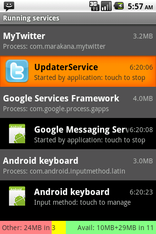
好，你的Service已经能够正常运行了，只是一时还不能做多少事情。
8.3. 在Service中循环
按照设计，我们的Service需要被频繁地唤醒，检查消息更新，然后再次“睡眠”一段时间。这一过程会持续进行下去，直到Service停止。实现时可以将这一过程放在一个循环中，每迭代一次就暂停一段时间。在这里可以利用Java提供的
Thread.sleep()方法，可以让当前进程以毫秒为单位暂停一段时间，并让出CPU。在这里还有一点需要考虑，那就是Service连接到服务端获取朋友消息这一行为本身，需要花费相当长的时间。网络操作的执行效率直接受网络接入方式、服务端的响应速度以及一些不可预知的因素影响，延时是很常见的。
我们要把检查更新的操作放在主线程的话，网络操作中的任何延时都会导致用户界面僵死，这会给用户留下一个很不好的印象。甚至很可能会让用户不耐烦，直接调出"Force Close or Wait"对话框(参见‘Threading in Android’一节)把我们的应用杀死。
解决这一问题的最好办法，就是利用Java内置的线程支持，把网络相关的操作放到另一个线程里。Service在控制UI的主线程之外执行，这使得它们与用户交互的代码总是分离的。这点对Yamba这样与网络交互的界面而言尤为重要，而且对其它场景也同样适用，哪怕它花费的时间不长。
Example 8.5. UpdaterService.java, version 2
package com.marakana.yamba3; import android.app.Service; import android.content.Intent; import android.os.IBinder; import android.util.Log; public class UpdaterService2 extends Service { private static final String TAG = "UpdaterService"; static final int DELAY = 60000; // a minute #{1} private boolean runFlag = false; // #{2} private Updater updater; @Override public IBinder onBind(Intent intent) { return null; } @Override public void onCreate() { super.onCreate(); this.updater = new Updater(); // #{3} Log.d(TAG, "onCreated"); } @Override public int onStartCommand(Intent intent, int flags, int startId) { super.onStartCommand(intent, flags, startId); this.runFlag = true; // #{4} this.updater.start(); Log.d(TAG, "onStarted"); return START_STICKY; } @Override public void onDestroy() { super.onDestroy(); this.runFlag = false; // #{5} this.updater.interrupt(); // #{6} this.updater = null; Log.d(TAG, "onDestroyed"); } /** * Thread that performs the actual update from the online service */ private class Updater extends Thread { // #{7} public Updater() { super("UpdaterService-Updater"); // #{8} } @Override public void run() { // #{9} UpdaterService2 updaterService = UpdaterService2.this; // #{10} while (updaterService.runFlag) { // #{11} Log.d(TAG, "Updater running"); try { // Some work goes here... Log.d(TAG, "Updater ran"); Thread.sleep(DELAY); // #{12} } catch (InterruptedException e) { // #{13} updaterService.runFlag = false; } } } } // Updater }- 声明一个常量，用以表示网络更新的时间间隔。我们也可以把它做在选项里，使之可以配置。
- 这个标志变量用以方便检查Service的执行状态。
- Updater在另一个线程中进行网络更新。这个线程只需创建一次，因此我们在
onCreate()中创建它。 - 在Service将启动时，它会调用
onStartCommand()方法，我们就在这里启动Updater线程再合适不过。同时设置上标志变量，表示Service已经开始执行了。 - 与之对应，我们可以在
onDestroy()中停止Updater线程。再修改标志变量表示Service已经停止。 - 我们通过调用
interrupt()来停止一个线程执行，随后设置变量的引用为null，以便于垃圾收集器清理。 - 在这里定义Updater类。它是个线程，因此以Java的Thread类为基类。
- 给我们的线程取一个名字。这样便于在调试中辨认不同的线程。
- Java的线程必须提供一个
run()方法。 - 简单得到对Service的引用。Updater是我们Service的内部类。
- 这个循环会一直执行下去，直到Service停止为止。记着runFlag变量是由
onStartCommand()与onDestroy()修改的。 - 调用
Thread.sleep()暂停Updater线程一段时间，前面我们将DELAY设置为1分钟。 - 对执行中的线程调用
interrupt()，会导致run()中产生一个InterruptException异常。 我们捕获这个异常，并设置runFlag为False，从而避免它不断重试。
8.3.1. 测试正常运行
到这里，已经可以运行程序并启动Service了。只要观察log文件你就可以发现，我们的Service会每隔两分钟记录一次任务的执行情况。而Service一旦停止，任务就不再执行了。
如下为LogCat的输出结果，从中可以看出我们Service的执行情况：
D/UpdaterService( 3494): onCreated D/UpdaterService( 3494): onStarted D/UpdaterService( 3494): Updater running D/UpdaterService( 3494): Updater ran D/UpdaterService( 3494): Updater running D/UpdaterService( 3494): Updater ran ... D/UpdaterService( 3494): onDestroyed
可见，我们的Service在最终销毁之前，循环了两次，其创建与启动皆正常。
8.4. 从Twitter读取数据
我们已经有了个大体的框架，接下来就连接到微博服务，读取数据并且在程序中显示出来。在读取朋友消息上，Twitter与不同的微博服务提供的API都各不相同。这时可以使用三方库
jtwitter.jar，它提供了一个Twitter类作为封装。里边最常用的功能之一就是getFriendsTimeline()，它可以返回24小时以内最新的20条消息。要使用Twitter API的这一特性，首先应连接到Twitter服务。我们需要一个用户名、密码，以及一个API授权。回忆下本章前面“Yamba的Application对象”一节中，我们已经把大部分相关的功能重构到了YambaApplication中。因此我们得以在这里重用这一功能，因为包括Service在内的程序中任何一个构件，都可以访问同一个Application对象。
在这里我们需要小小地修改下YambaAppliaction，好让别人知道这个Service是否正在运行。因此在YambaApplication中添加一个标志变量，配合getter与setter用以访问与更新：
public class YambaApplication extends Application implements OnSharedPreferenceChangeListener { private boolean serviceRunning; // #{1} ... public boolean isServiceRunning() { //#{2} return serviceRunning; } public void setServiceRunning(boolean serviceRunning) { // #{3} this.serviceRunning = serviceRunning; } }- 这个标志变量表示了Service的运行状态。注意它是个私有成员，不可以直接访问。
- 这个全局方法用以访问标志变量serviceRunning的值。
- 另一个全局方法，用以设置标志变量serviceRunning的值。
接下来我们可以为UpdaterService写些代码，让它连接到API，读取朋友的最新消息。
Example 8.6. UpdaterService.java, final version
package com.marakana.yamba3; import java.util.List; import winterwell.jtwitter.Twitter; import winterwell.jtwitter.TwitterException; import android.app.Service; import android.content.Intent; import android.os.IBinder; import android.util.Log; public class UpdaterService extends Service { private static final String TAG = "UpdaterService"; static final int DELAY = 60000; // wait a minute private boolean runFlag = false; private Updater updater; private YambaApplication yamba; // #{1} @Override public IBinder onBind(Intent intent) { return null; } @Override public void onCreate() { super.onCreate(); this.yamba = (YambaApplication) getApplication(); // #{2} this.updater = new Updater(); Log.d(TAG, "onCreated"); } @Override public int onStartCommand(Intent intent, int flags, int startId) { super.onStartCommand(intent, flags, startId); this.runFlag = true; this.updater.start(); this.yamba.setServiceRunning(true); // #{3} Log.d(TAG, "onStarted"); return START_STICKY; } @Override public void onDestroy() { super.onDestroy(); this.runFlag = false; this.updater.interrupt(); this.updater = null; this.yamba.setServiceRunning(false); // #{4} Log.d(TAG, "onDestroyed"); } /** * Thread that performs the actual update from the online service */ private class Updater extends Thread { List<Twitter.Status> timeline; // #{5} public Updater() { super("UpdaterService-Updater"); } @Override public void run() { UpdaterService updaterService = UpdaterService.this; while (updaterService.runFlag) { Log.d(TAG, "Updater running"); try { // Get the timeline from the cloud try { timeline = yamba.getTwitter().getFriendsTimeline(); // #{6} } catch (TwitterException e) { Log.e(TAG, "Failed to connect to twitter service", e); // #{7} } // Loop over the timeline and print it out for (Twitter.Status status : timeline) { // #{8} Log.d(TAG, String.format("%s: %s", status.user.name, status.text)); // #{9} } Log.d(TAG, "Updater ran"); Thread.sleep(DELAY); } catch (InterruptedException e) { updaterService.runFlag = false; } } } } // Updater }- 这个变量用以方便访问YambaApplication对象，便于使用其中的共享功能，比如读取用户设置、连接到微博服务等。
- 通过
getApplication()方法获得YambaApplication对象的引用。 - 一旦启动了这个Service，我们就设置YambaApplication中的标志变量
serviceRunning。 - 同样，等Service停止时也修改YambaApplication对象中的
serviceRunning。 - 我们使用了Java中的泛型，用以定义一个List来存放Twitter.Status的实例。
- 调用YambaApplication中的
getTwitter()方法获得Twitter对象，然后调用getFriendTimeline()来获得24小时内朋友最新的20条消息。注意这个函数需要访问网络，因此其运行时间受网络延迟影响比较大。我们把它安置在一个独立的线程中，毕竟不能让用户界面的响应跟着它延时。 - 网络相关的操作失败的原因有很多。我们在这里捕获异常，并打印出错时的堆栈信息。其输出在Logcat中可见。
- 现在我们已经初始化了timeline这个List，可以遍历其中的元素。最简单的方法就是使用Java的"for each"循环，自动地遍历我们的List，分别把每个元素的引用交给变量status。
- 暂时我们先把消息也就是“谁说了什么“输出到Logcat。
8.4.1. 测试运行正常
好，我们可以运行我们的程序并启动Service，观察Logcat中记录的朋友消息。
D/UpdaterService( 310): Marko Gargenta: it is great that you got my message D/UpdaterService( 310): Marko Gargenta: hello this is a test message from my android phone D/UpdaterService( 310): Marko Gargenta: Test D/UpdaterService( 310): Marko Gargenta: right! ...
8.5. 总结
我们已经有了一个可用的Service，只是启动/停止还需要人工操作，仍略显粗放。这个Service能够连接到服务端更新朋友的最新消息。目前我们只是把这些消息输出到Logcat中，到下一章我们就把它们存进数据库里。
图8.3, "Yamba Completion"展示了目前为止我们已完成的部分。全图参见图5.4, "Yamba Design Diagram"。
Figure 8.3. Yamba Completion
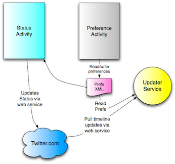
9. Chapter 9 Database
Android system uses databases to store many useful information that needs to be persisted so that the data is there for the app to access again if the user kills the app or even shuts down the device and powers it back on. The data includes contacts, system settings, bookmarks, and so on.
So, why use a database in a mobile application? After all, isn’t it better to keep our data in a cloud where it’s always backed up instead of storing it in a mobile device which is easily lost or damaged?
Database in a mobile device is very useful to supplement the online world. While it’s true that in many cases it is much better to count on the data living in the cloud, it is useful to store it locally in order to access it faster and have it available even when the network may not be available. In this case, we are using a local database as a cache. This is also how we use it in our Yamba application.
In this chapter, you will learn how Android supports databases. You will learn to create and use a database inside Yamba application to store our status updates locally. Local data will help Yamba display statuses to the user quickly without having to wait for the network to provide the data. Our service will run in the background and periodically update the database so that the data is relatively fresh. This will overall improve the user experience of the application.
9.1. About SQLite
SQLite is an open source database that is has been around for a long time, is quite stable, and is popular on many small devices in addition to Android. There are couple of good reasons why SQLite is a great fit for Android app development:
- It’s a zero-configuration database. That means there’s absolutely nothing for you as developer to configure about how the database works. This makes it relatively simple to use. - It doesn’t have a server. There’s no SQLite database process running. It is basically a set of libraries that provide the database functionality. Not having a server to worry about is also a good thing. - It’s a single-file database. This makes database security straightforward, as it boils down to file system security. We already know that Android sets aside a special secure sandbox for each application. - It’s open source.
The Android framework offers several ways to use SQLite easily and effectively, and we’ll look at the basic usage in this chapter. You may be pleased to find that, although SQLite uses SQL, Android provides a higher-level library with an interface that is much easier to integrate into an application.
Note:
Although SQLite support is built into Android, it is by no means your only option when it comes to data persistence for your app. You can always use another database system, such as JavaDB or MongoDB, but you’d have to bundle the required libraries with you app and would not be able to rely on Android’s built-in support for database. SQLite is not an alternative to a full SQL server, instead it is an alternative to using a local file with an arbitrary format.9.2. DbHelper
Android provides an elegant interface for your app to interact with a SQLite database. To get access to the database, you first need a helper class that provides a "connection" to the database, creating the connection if it doesn’t already exist. This class, provided to you by the Android framework, is called SQLiteOpenHelper. The database class it returns is an instance of SQLiteDatabase.
In the following subsections I’ll explain some of the background concepts you should know when working with DbHelper. I’m not going to explain SQL or basic database concepts such as normalization, because there are hundreds of good places to find that information and I expect most of my readers already know it. This chapter, though, should give you enough to get started even if your knowledge of databases is spotty.
9.2.1. The database schema and its creation
A schema is just a description of what’s in a database. In our Yamba database, for instance, we want fields for the following information about each tweet we retrieve from Twitter:
created_at
The date when the tweet was sent
source
…
txt
The text of the tweet
user
The user who sent the tweet
So each row in our table will contain the data for one tweet, and these four items will be the columns in our schema, along with a unique ID for each tweet. We need the ID so we can easily refer to a tweet. SQLite, like most database, allows us to declare the ID as a primary key and even assigns a unique number automatically to tweet for us.
The schema has to be created when our application starts, so we’ll do it in the onCreate() method of DbHelper. We might add new fields or change existing ones in a later version of our application, so we’ll assign a version number to our schema and provide an onUpgrade() method that we can call to alter the schema.
The onCreate() and onUpgrade() methods are the only ones in our application when we need to use SQL. We’ll execute CREATE TABLE in onCreate() to create a table in our database. In a production application, we’d use ALTER TABLE in onUpgrade() when the schema changes, but that requires a lot of complex introspection of the database, so for now we’ll use DROP TABLE and recreate the table. Of course, DROP TABLE destroys any data currently in the table, but that’s not a problem for our Yamba application. It always refills the table with tweets from the past 24 hours, which are the only ones our users will care about.
9.2.2. Four major operations
The DbHelper class offers you a high-level interface that’s much simpler than SQL. The developers realized that most applications use databases for only four major operations, which go by the appealing acronym CRUD (create, read (query), update, and delete). To fulfill these requirements, DbHelper offers:
insert()
Inserts one or more rows into the database.
query()
Requests rows matching the criteria you specify.
update()
Replaces ones or more rows that match the criteria you specify.
delete()
Deletes rows matching the criteria you specify.
Each of these methods has variants that enhance it with other functions. To use one of the methods, create a ContentValues container and place in it the information you want inserted, updated, etc. This chapter will show you the process for an insert, and the other operations work in similar ways.
So, why not use SQL directly? There are three good reasons why.
First, from security point of view, an SQL statement is a prime candidate for a security attack on your application and data, known as SQL injection attack. That is because the SQL statement takes user input that, unless you check and isolate it very carefully, could embed other SQL statements with undesirable effects.
Secondly, from performance point of view, executing SQL statements repeatedly is highly inefficient because you’d have to parse the SQL every time the statement runs.
Finally, the DbHelper methods are more robust and less likely to pass through the compiler with undetected errors. When you include SQL in a program, it’s easy to create errors that turn up only at run time.
With so-called Data Definition Language part of SQL language, there isn’t as much support in Android framework for prepared statements. That’s why we did use execSQL() to run the code to CREATE TABLE.... That is okay since that code doesn’t depend on any user input and as such SQL injection is not possible. Additionally, that code runs very rarely to have to worry about the performance implications.
9.2.3. Cursors
A query returns a set of rows along with a pointer called a cursor. You can retrieve results one at a time from the cursor, causing it to advance each time to the next row. You can also move the cursor around in the result set. An empty cursor indicates that you’ve retrieved all the rows.
In general, anything you do with SQL could lead to SQL Exception since it’s code interacting with a system that’s outside our direct control. For example, the database could be running out of space, or somehow corrupted. So, it is a good practice to handle all the `SQLException`s by surrounding your database calls in a try/catch block.
An easy way to do that is by using the Eclipse shortcut:
- Select the code that you’d like to handle exceptions for. Typically this would be most of your SQL calls.
- In Eclipse menu, choose Source→Surround With→Try/catch Block. Eclipse will generate the appropriate try/catch statements around your code for the proper exception class.
- Handle this exception in the catch block. This may be a simple call to Log.e() to pass the tag, message and the exception object itself.
9.3. First example
So we’re going to create our own helper class to help us open our Yamba database. We’ll call the class DbHelper. It will create the database file if one doesn’t already exist, or upgrade the user’s database if the schema has changed between versions.
Like many other classes in Android, we usually start by subclassing a framework class, in this case SQLiteOpenHelper. We then need to implement the class’s constructor as well as onCreate() and onUpgrade() methods.
Example 9.1. DbHelper.java, version 1
package com.marakana.yamba4; import android.content.Context; import android.database.sqlite.SQLiteDatabase; import android.database.sqlite.SQLiteOpenHelper; import android.provider.BaseColumns; import android.util.Log; public class DbHelper1 extends SQLiteOpenHelper { //① static final String TAG = "DbHelper"; static final String DB_NAME = "timeline.db"; //② static final int DB_VERSION = 1; //③ static final String TABLE = "timeline"; //④ static final String C_ID = BaseColumns._ID; static final String C_CREATED_AT = "created_at"; static final String C_SOURCE = "source"; static final String C_TEXT = "txt"; static final String C_USER = "user"; Context context; // Constructor public DbHelper1(Context context) { //⑤ super(context, DB_NAME, null, DB_VERSION); this.context = context; } // Called only once, first time the DB is created @Override public void onCreate(SQLiteDatabase db) { String sql = "create table " + TABLE + " (" + C_ID + " int primary key, " + C_CREATED_AT + " int, " + C_USER + " text, " + C_TEXT + " text)"; //⑥ db.execSQL(sql); //⑦ Log.d(TAG, "onCreated sql: " + sql); } // Called whenever newVersion != oldVersion @Override public void onUpgrade(SQLiteDatabase db, int oldVersion, int newVersion) { //⑧ // Typically do ALTER TABLE statements, but...we're just in development, // so: db.execSQL("drop table if exists " + TABLE); // drops the old database Log.d(TAG, "onUpdated"); onCreate(db); // run onCreate to get new database } }- Start by subclassing SQLiteOpenHelper.
- This is the database file name.
- This is the version of our database. Version is important so that later when you change the schema, you can provide existing users with a way to upgrade their database to the latest schema.
- The following are some database constants specific to our application. It is handy to define these as constants to that we can refer to them from other classes.
- We override the SQLiteOpenHelper by passing the constants to the super and retaining the local reference to the context.
- This is the actual SQL that we’ll pass on to the database in order to have it create the appropriate SQL schema that we need.
- Once we have our SQL to create the database by running execSQL() on the database object that was passed into onCreate().
- onUpgrade() is called whenever user’s database version is different than the application version. This will typically happen when you change the schema and release the application update to users who already have older version of your app.
Note:
As mentioned, earlier, you would typical execute ALTER TABLE ... SQL statements in onUpgrade(). Since we don’t have an old database to alter, we are assuming this application is still in pre-release mode and are just deleting any user data when recreating the database.Next, we need to update the service in order to have it open up the database connection, fetch the data from the network and insert it into the database.
9.4. Update UpdaterService
Remember that it is our UpdaterService that connects to the cloud and gets the data. So it is also UpdaterService that is responsible for inserting this data into the local database.
We can now update the UpdaterService to pull the data from the cloud and store it in the database.
Example 9.2. UpdaterService.java, version 1
package com.marakana.yamba4; import java.util.List; import winterwell.jtwitter.Twitter; import winterwell.jtwitter.TwitterException; import android.app.Service; import android.content.ContentValues; import android.content.Intent; import android.database.sqlite.SQLiteDatabase; import android.os.IBinder; import android.util.Log; public class UpdaterService1 extends Service { private static final String TAG = "UpdaterService"; static final int DELAY = 60000; // wait a minute private boolean runFlag = false; private Updater updater; private YambaApplication yamba; DbHelper1 dbHelper; //① SQLiteDatabase db; @Override public IBinder onBind(Intent intent) { return null; } @Override public void onCreate() { super.onCreate(); this.yamba = (YambaApplication) getApplication(); this.updater = new Updater(); dbHelper = new DbHelper1(this); //② Log.d(TAG, "onCreated"); } @Override public int onStartCommand(Intent intent, int flag, int startId) { if (!runFlag) { this.runFlag = true; this.updater.start(); ((YambaApplication) super.getApplication()).setServiceRunning(true); Log.d(TAG, "onStarted"); } return Service.START_STICKY; } @Override public void onDestroy() { super.onDestroy(); this.runFlag = false; this.updater.interrupt(); this.updater = null; this.yamba.setServiceRunning(false); Log.d(TAG, "onDestroyed"); } /** * Thread that performs the actual update from the online service */ private class Updater extends Thread { List<Twitter.Status> timeline; public Updater() { super("UpdaterService-Updater"); } @Override public void run() { UpdaterService1 updaterService = UpdaterService1.this; while (updaterService.runFlag) { Log.d(TAG, "Updater running"); try { // Get the timeline from the cloud try { timeline = yamba.getTwitter().getFriendsTimeline(); //③ } catch (TwitterException e) { Log.e(TAG, "Failed to connect to twitter service", e); } // Open the database for writing db = dbHelper.getWritableDatabase(); //④ // Loop over the timeline and print it out ContentValues values = new ContentValues(); //⑤ for (Twitter.Status status : timeline) { //⑥ // Insert into database values.clear(); //⑦ values.put(DbHelper1.C_ID, status.id); values.put(DbHelper1.C_CREATED_AT, status.createdAt.getTime()); values.put(DbHelper1.C_SOURCE, status.source); values.put(DbHelper1.C_TEXT, status.text); values.put(DbHelper1.C_USER, status.user.name); db.insertOrThrow(DbHelper1.TABLE, null, values); //⑧ Log.d(TAG, String.format("%s: %s", status.user.name, status.text)); } // Close the database db.close(); //㈨ Log.d(TAG, "Updater ran"); Thread.sleep(DELAY); } catch (InterruptedException e) { updaterService.runFlag = false; } } } } // Updater }- Since we are likely going to need db and dbHelper objects throughout the class, we declare them globally to the class.
- Create the instance of DbHelper and pass this as the context for it. This works because Android Service class is a subclass of Context. DbHelper will figure out if the database needs to be created or upgraded.
- We need to connect to the online service, get latest updates, and insert them into the database. getTwitter() in YambaApplication is our lazy initialization of Twitter object. Then we call the actual Twitter API call getFriendsTimeline() to get last 20 statuses from friends in last 24 hours.
- Get the writable database so we can insert new statuses into it. First time we make this call, onCreate() in DbHelper will run and create the database file for this user.
- ContentValues is a simple name-value pairs data structure that maps database table names to their respective values.
- We loop over all the status data that we got. In this case, we are using Java for-each loop to make the iteration simple.
- For each record, we create a content value. We are reusing the same Java object clearing it each time we start the loop and populating appropriate values for the status data.
- We insert the content value into the database via insert() call to SQLiteDatabase object. Notice that we are not piecing together a SQL statement here, but rather using a prepared statement approach to inserting into the database.
- Finally, remember to close the database. This is important since another activity could be trying to read or write from this shared resource. We are now ready to run our code and test it all works.
9.4.1. Testing It Works
At this point, we can test if the database got created properly and if the service has populated it with some data. We’re going to do this step by step.
9.4.2. Verify Database Got Created
If the database file got created successfully, it will be located in
/data/data/com.marakana.yamba/databases/timeline.dbfile. You can use Eclipse DDMS perspective and File Explorer view to look at the file system of the device, or you can use adb shell on your command line, and thenls /data/data/com.marakana.yamba/databases/timeline.dbto make sure the file is there.To use File Explorer in Eclipse, either open the
DDMSperspective in the top-right corner of your Eclipse, or go toWindows→Show View→Other…→Android→File Explorer. This will open the view of the file system of the device you are currently looking at.So far, you know that the database file is there, but don’t really know if the database schema got created properly. Next section address that.
9.4.3. Using sqlite3
Android ships with the command line tool sqlite3. This tool give you access to the database itself.
To see if your database schema got created properly:
- Open up your terminal, or command line window.
- Type adb shell to connect to your running emulator or physical phone.
- Change directory to where your database file is created by typing cd /data/data/com.marakana.yamba/databases/.
- Connect to the database by using sqlite3 timeline.db command.
At this point, you should be connected to the database. Your prompt should be sqlite> indicating that you are inside the SQLite:
[user:~]> adb shell # cd /data/data/com.marakana.yamba/databases/ # ls timeline.db # sqlite3 timeline.db SQLite version 3.6.22 Enter ".help" for instructions Enter SQL statements terminated with a ";" sqlite>
At this point, you can type two types of commands to your SQLite database:
- Standard SQL commands, such as
insert ...,update ...,delete ...,select ...as well ascreate table ...,alter table ...and so on. Note the SQL is another language altogether and as such is not covered by this book. We assume you have very basic knowledge of SQL. Also note that insqlite3, you must terminate your SQL statements with a semi-column ;. sqlite3commands. These are commands that are specific to SQLite. You can see the list of all commands by typing.helpon thesqlite3>prompt. For now, we’ll just use.schemato verify that the schema got created.# sqlite3 timeline.db SQLite version 3.6.22 Enter ".help" for instructions Enter SQL statements terminated with a ";" sqlite> .schema CREATE TABLE android_metadata (locale TEXT); CREATE TABLE timeline ( _id integer primary key,created_at integer, source text, txt text, user text );
The last line tells us that our database table timeline indeed got created and looks like we expected it, with columns:
_id,created_at,source,txtanduser.Warning:
New Android developers often execute sqlite3 timeline.db command in a wrong folder, then wonder why the database table wasn’t created. SQLite will not complain if the file you are referring to doesn’t exist - it will simply create a brand new database. So, make sure you are either in the correct folder (/data/data/com.marakana.yamba/databases/) when you execute sqlite3 timeline.db, or run the command specifying the full path to your file: sqlite3 /data/data/com.marakana.yamba/databases/timeline.db.Now that we have a way to create and open up our database, we are ready to update the service that will insert the data into the database.
At this point we should be getting the data from the online service as well as insert that data in the database. We can also verify that the data is indeed in the database by using
sqlite3.9.4.4. Database Constraints
Second time around, when your service runs, you’ll notice that it fails and that you get many
SQLExceptionsin the logcat. You will also notice that it complains about the database constraint failing.This happens because we have duplicate IDs. If you remember, we are fetching all the data from the online service, including IDs used online. We are then inserting this in to our local database. But we get the data via
getFriendsTimeline()call which returns twenty most recent posts in the past 24 hours and we do this every minute or so. So, unless you have friends who post more than twenty posts a minute, you’re likely going to get duplicates. That means we’re attempting to insert duplicate IDs into a database that is setup to have _id be the primary key, meaning be unique. This fails for duplicate entries and that’s why the database complains via throwingSQLException.We could check with the database that there are no duplicates before inserting, but that would mean writing that logic. Since database is already good at database stuff, it is more efficient to attempt to insert duplicate entries, fail at it, and ignore that failure.
To do that, we need to change db.insert() to db.insertOrThrow(), catch the SQLException and ignore it.
... try { db.insertOrThrow(DbHelper.TABLE, null, values); //① Log.d(TAG, String.format("%s: %s", status.user.name, status.text)); } catch (SQLException e) { //② // Ignore exception } ...Attempts to insert into the database but if it fails, it throws an exception.
- We catch this exception and ignore it. We will improve on this later in the next section
- At this point, our code works, but it’s not ideal. There’s an opportunity to refactor it further.
9.5. Refactoring Status Data
While the previous work we did does work for UpdaterService, it is not ideal for supporting our next user of this data - the TimelineActivity. Since TimelineActivity will also need to access the same database and fetch the same data, it would be better if we would share some of the same functionality between the UpdaterService and the TimelineActivity.
In order to do that, we’ll create a new Java class, StatusData and make it be the common container for database-related functionality. It will be hiding (encapsulating) SQLite in a higher-level class accessible to other parts of Yamba application. The rest of our app will then just ask for StatusData and not be concerned how that data is generated. This is a better design and will allows us later to improve even further on it using Content Providers as explained in Chapter 12, Content Providers.
Example 9.3. StatusData.java
package com.marakana.yamba4; import android.content.ContentValues; import android.content.Context; import android.database.Cursor; import android.database.sqlite.SQLiteDatabase; import android.database.sqlite.SQLiteOpenHelper; import android.util.Log; public class StatusData { //① private static final String TAG = StatusData.class.getSimpleName(); static final int VERSION = 1; static final String DATABASE = "timeline.db"; static final String TABLE = "timeline"; public static final String C_ID = "_id"; public static final String C_CREATED_AT = "created_at"; public static final String C_TEXT = "txt"; public static final String C_USER = "user"; private static final String GET_ALL_ORDER_BY = C_CREATED_AT + " DESC"; private static final String[] MAX_CREATED_AT_COLUMNS = { "max(" + StatusData.C_CREATED_AT + ")" }; private static final String[] DB_TEXT_COLUMNS = { C_TEXT }; // DbHelper implementations class DbHelper extends SQLiteOpenHelper { public DbHelper(Context context) { super(context, DATABASE, null, VERSION); } @Override public void onCreate(SQLiteDatabase db) { Log.i(TAG, "Creating database: " + DATABASE); db.execSQL("create table " + TABLE + " (" + C_ID + " int primary key, " + C_CREATED_AT + " int, " + C_USER + " text, " + C_TEXT + " text)"); } @Override public void onUpgrade(SQLiteDatabase db, int oldVersion, int newVersion) { db.execSQL("drop table " + TABLE); this.onCreate(db); } } private final DbHelper dbHelper; //② public StatusData(Context context) { //③ this.dbHelper = new DbHelper(context); Log.i(TAG, "Initialized data"); } public void close() { //④ this.dbHelper.close(); } public void insertOrIgnore(ContentValues values) { //⑤ Log.d(TAG, "insertOrIgnore on " + values); SQLiteDatabase db = this.dbHelper.getWritableDatabase(); //⑥ try { db.insertWithOnConflict(TABLE, null, values, SQLiteDatabase.CONFLICT_IGNORE); //⑦ } finally { db.close(); //⑧ } } /** * * @return Cursor where the columns are _id, created_at, user, txt */ public Cursor getStatusUpdates() { //⑨ SQLiteDatabase db = this.dbHelper.getReadableDatabase(); return db.query(TABLE, null, null, null, null, null, GET_ALL_ORDER_BY); } /** * * @return Timestamp of the latest status we ahve it the database */ public long getLatestStatusCreatedAtTime() { //⑩ SQLiteDatabase db = this.dbHelper.getReadableDatabase(); try { Cursor cursor = db.query(TABLE, MAX_CREATED_AT_COLUMNS, null, null, null, null, null); try { return cursor.moveToNext() ? cursor.getLong(0) : Long.MIN_VALUE; } finally { cursor.close(); } } finally { db.close(); } } /** * * @param id of the status we are looking for * @return Text of the status */ public String getStatusTextById(long id) { //⑾ SQLiteDatabase db = this.dbHelper.getReadableDatabase(); try { Cursor cursor = db.query(TABLE, DB_TEXT_COLUMNS, C_ID + "=" + id, null, null, null, null); try { return cursor.moveToNext() ? cursor.getString(0) : null; } finally { cursor.close(); } } finally { db.close(); } } }- Most of the StatusData code is a direct cut-paste from DbHelper.java. This is because it now makes sense to make DbHelper an inner class since DbHelper now only exists in context of StatusData and is private to it. In other words, outside of StatusData, no other part of the system is concerned with the fact that we are using a database to store our data. That also makes our system flexible, which we will see later with use of Content Providers.
- This is the private and final reference to the dbHelper instance. Making it [final http://en.wikipedia.org/wiki/Final_(Java)] ensures that this object is created only once, whichever part of the system requests it first.
- The constructor simply constructs a new instance of
DbHelper. - We need to expose
close()for the dbHelper in order to have users of it close it properly. - This is the new and improved version of
db.insert...()method that we had in DbHelper before. - We open the database only when we need it, which is right before writing to it.
- In this case, we use
insertWithOnConflict()and passSQLiteDatabase.CONFLICT_IGNOREas the final parameter to indicate that if there’s a conflict, the exception should be ignored. Remember that we did have conflict with the duplicate IDs, as explained in the section called “Database Constraints”. - Notice that we also close the database right after we are done. We also do this in finally section of our exception handling. This ensures the database is shut down properly regardless if something went wrong or not. This theme is something we repeat in
getLatestStatusCreatedAtTime()andgetStatusTextById(). - This method simply returns all the statuses in the database, latest first.
getLatestStatusCreatedAtTime()returns the timestamp of the latest status we have in the database. Having a way to know what is the newest status we have cached locally is useful later to ensure we only add new statuses into the database.- For a given id,
getStatusTextById()returns the actual text of this status.
Now that we have a new common place to handle status data, we can have it hang off of our common Application object so that any part of the application can easily access it. So the UpdaterService and TimelineActivity classes are in a has-a relationship to StatusData via YambaApplication object.
Example 9.4. YambaApplication.java
... private StatusData statusData; //① ... public StatusData getStatusData() { //② return statusData; } // Connects to the online service and puts the latest statuses into DB. // Returns the count of new statuses public synchronized int fetchStatusUpdates() { //③ Log.d(TAG, "Fetching status updates"); Twitter twitter = this.getTwitter(); if (twitter == null) { Log.d(TAG, "Twitter connection info not initialized"); return 0; } try { List<Status> statusUpdates = twitter.getFriendsTimeline(); long latestStatusCreatedAtTime = this.getStatusData() .getLatestStatusCreatedAtTime(); int count = 0; ContentValues values = new ContentValues(); for (Status status : statusUpdates) { values.put(StatusData.C_ID, status.getId()); long createdAt = status.getCreatedAt().getTime(); values.put(StatusData.C_CREATED_AT, createdAt); values.put(StatusData.C_TEXT, status.getText()); values.put(StatusData.C_USER, status.getUser().getName()); Log.d(TAG, "Got update with id " + status.getId() + ". Saving"); this.getStatusData().insertOrIgnore(values); if (latestStatusCreatedAtTime < createdAt) { count++; } } Log.d(TAG, count > 0 ? "Got " + count + " status updates" : "No new status updates"); return count; } catch (RuntimeException e) { Log.e(TAG, "Failed to fetch status updates", e); return 0; } } ...- Yamba application now encapsulates the status data as a private StatusData object.
- This object is available to rest of the application for viewing only via this accessor method.
- This is where we moved most of the code from the previous version of the UpdaterService. This was the code that was running on the Updater thread, connecting to online service to get the data, and then saving that data in the database.
We can now simplify the
UpdaterServiceto use the refactored code in the YambaApplication to get the latest data. Note that most of the Updater’srun()method has been moved to YambaApplication’sfetchStatusUpdates()method. In addition, the Updater doesn’t need any access to theStatusDataobject, which is totally hidden from it.Example 9.5. UpdaterService.java
... private class Updater extends Thread { public Updater() { super("UpdaterService-Updater"); } @Override public void run() { UpdaterService updaterService = UpdaterService.this; while (updaterService.runFlag) { Log.d(TAG, "Running background thread"); try { YambaApplication yamba = (YambaApplication) updaterService .getApplication(); //① int newUpdates = yamba.fetchStatusUpdates(); //② if (newUpdates > 0) { //③ Log.d(TAG, "We have a new status"); } Thread.sleep(DELAY); } catch (InterruptedException e) { updaterService.runFlag = false; } } } } // Updater ...- We get the reference to YambaApplication object, which is readily available to Android Service and thus our own UpdaterService instance.
- We use the newly created fetchStatusUpdates() method in YambaApplication, which now houses most of the functionality previously part of this run() method.
- One of the features of `fetchStatusUpdates() is that it returns the number of new records that were fetched. We can use this info for debugging for now, but later will make a different use of it as well.
9.6. Summary
At this point, Yamba can pull the statuses of our friends from the cloud and post them into the local database. We still don’t have a way to view this data, but can verify that the data is there in the database.
The following illustrates what we have done so far as part of the design outlined in Figure 5.4, “Yamba Design Diagram”:
Figure 9.1. Yamba Completion
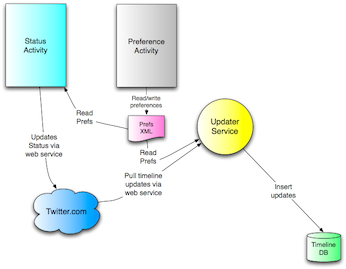 10. List与Adapter
在本章，你将学到选择性控件(比如
ListView)的创建方法。但是这里讨论的重点绝对不在用户界面，而在于进一步巩固我们在上一章中对“数据”的理解，前面是简单地读取数据再输出到屏幕，到这里改为使用Adapter直接将数据库与List绑定在一起。你可以创建一个自己的Adapter，从而添加额外的功能。在这里我们新建一个界面，并将其作为用户发送/阅读消息的主界面。在前面我们已经实现了发送消息、从Twitter读取消息、缓存在本地数据库等功能，在本章结束，它将拥有一个美观高效的UI允许用户阅读消息。到这里，你的程序将拥有三个Activity和一个Service。
10.1. TimelineActivity
接下来我们新建一个Activity，即
TimelineActivity，用以显示朋友的消息。它从数据库中读取消息，并显示在屏幕上。在一开始我们的数据库并不大，但是随着应用使用时间的增长，其中的数据量就不可遏制了。我们必须针对这个问题做些考虑。我们将创建这一Activity分成两步。保证经过每一轮迭代，应用都是完整可用的。
- 第一次迭代：使用一个TextView显示数据库中的所有数据，由于数据量可能会比较大，我们将它置于ScrollView中，加一个滚动条。
- 第二次迭代：改用ListView与Adapter，这样伸缩性更好，效率也更高。你将在这里了解到Adapter与List的工作方式。
- 最后创建一个自定义的Adapter，在里面添加些额外的业务逻辑。这需要深入Adapter的内部，你可以体会它的设计动机与应用方式。
10.2. TimelineActivity的基本布局
在第一次迭代中，我们为TimelineActty创建一个新的布局(Layout)，它使用一个TextView来展示数据库中的所有消息。在刚开始的时候数据量不大，这样还是没有问题的。
10.2.1. 简介ScrollView
不过数据一多，我们就不能保证所有的消息正好排满一页了，这时应使用
'ScrollView'使之可以滚动。ScrollView与Window相似，不过它可以在必要时提供一个滚动条，从而允许在里面存放超过一屏的内容。对付可能会变大的View，用ScrollView把它包起来就行。比如这里我们靠TextView输出所有朋友的消息，消息一多，它也跟着变大。在较小的屏幕中显示不开，就把它放在ScrollView里使之可以滚动。ScrollView中只能存放单独的一个子元素。要让多个View一起滚动，就需要像前面
StatusActivity Layout一节所做的那样，先把它们放在另一个Layout里，随后把整个Layout添加到ScrollView里。通常你会希望ScrollView能够填满屏幕的所有可用空间。把它的高度与宽度都设置为
fill_parent即可。ScrollView通常不需要使用Java代码控制其行为，因此无需id。
在这个例子中，我们使用ScrollView把TextView包了起来。以后TextView中的内容变多体积变大，ScrollView就会自动为它加上滚动条。
Example 10.1. res/layout/timeline_basic.xml
<?xml version="1.0" encoding="utf-8"?> <LinearLayout xmlns:android="http://schemas.android.com/apk/res/android" android:orientation="vertical" android:layout_height="fill_parent" android:layout_width="fill_parent" android:background="@drawable/background"> <!-- Title #{1} --> <TextView android:layout_width="wrap_content" android:layout_height="wrap_content" android:layout_gravity="center" android:layout_margin="10dp" android:text="@string/titleTimeline" android:textColor="#fff" android:textSize="30sp" /> <!-- Text output wrapper #{2} --> <ScrollView android:layout_height="fill_parent" android:layout_width="fill_parent"> <!-- Text output #{3} --> <TextView android:layout_height="fill_parent" android:layout_width="fill_parent" android:id="@+id/textTimeline" android:background="#6000" /> </ScrollView> </LinearLayout>- 在Activity屏幕顶部显示的标题。留意字符串
titleTimeline的定义在/res/values/strings.xml文件中，具体参见String Resource一节。 - ScrollView包含TextView，在需要时添加滚动条。
- TextView用以显示文本，在这里就是从数据库中读取的用户消息。
10.2.2. 创建TimelineActivity类
我们已经有了一个布局文件，接下来创建TimelineActivity类。同其它文件一样，进入Eclipse Package Explorer，右击com.marakana.yamba包，选择
New→Class，在名字一栏输入TimelineActivity。就像前面一样，我们创建的类只要是基本构件——不管Activity，Service，Broadcast Reciever还是Content Provider——就肯定是基于Android框架提供的基类派生出来的子类。对Activity而言，其基类即
Activity。我们通常会为每个Activity都重载一个
onCreate()，这是初始化数据库的好地方。与之对应，我们在onDestroy()中清理onCreate()中创建的资源，也就是关闭数据库。我们希望显示的消息尽可能最新，因此把查询数据库的代码放在onResume()中，这样在界面每次显示时都会执行。代码如下：package com.marakana.yamba5; import android.app.Activity; import android.database.Cursor; import android.database.sqlite.SQLiteDatabase; import android.os.Bundle; import android.widget.TextView; public class TimelineActivity1 extends Activity { // #{1} DbHelper dbHelper; SQLiteDatabase db; Cursor cursor; TextView textTimeline; @Override protected void onCreate(Bundle savedInstanceState) { super.onCreate(savedInstanceState); setContentView(R.layout.timeline); // Find your views textTimeline = (TextView) findViewById(R.id.textTimeline); // Connect to database dbHelper = new DbHelper(this); // #{2} db = dbHelper.getReadableDatabase(); // #{3} } @Override public void onDestroy() { super.onDestroy(); // Close the database db.close(); // #{4} } @Override protected void onResume() { super.onResume(); // Get the data from the database cursor = db.query(DbHelper.TABLE, null, null, null, null, null, DbHelper.C_CREATED_AT + " DESC"); // #{5} startManagingCursor(cursor); // #{6} // Iterate over all the data and print it out String user, text, output; while (cursor.moveToNext()) { // #{7} user = cursor.getString(cursor.getColumnIndex(DbHelper.C_USER)); // #{8} text = cursor.getString(cursor.getColumnIndex(DbHelper.C_TEXT)); output = String.format("%s: %s\n", user, text); // #{9} textTimeline.append(output); // #{10} } } }- 这是个Activity，因此它继承自Android框架提供的
Activity类。 - 我们需要访问数据库以得到Timeline的相关数据，而
onCreate()正是连接数据库的好地方。 - 通过dbHelper打开数据库文件之后，我们需要它的
getReadableDatabase()或getWritableDatabase()才可以得到实际的数据库对象。在这里我们只需读取Timeline的相关数据，因此按只读方式打开数据库。 - 我们得记着关闭数据库并释放资源。数据库是在
onCreate()中打开，因此可以在onDestroy()中关闭。注意onDestroy()只有在系统清理资源时才被调用。 - 调用
query()方法从数据库中查询数据，返回一个Cursor对象作为迭代器。参数似乎多的过了头，不过几乎都是对应着SQL的SELECT语句的各个部分。在这里也就相当与SELECT * FROM timeline ORDER BY created_at DESC。这些null表示我们并没有使用SQL语句中相应的部分，比如WHERE,GROUPING, 与HAVING等。 startManagingCursor()用于提示Activity自动管理Cursor的生命周期，使之同自己保持一致。“保持一致”的意思是，它能保证在Activity销毁时，同时释放掉Cursor关联的数据，这样有助于优化垃圾收集的性能。没有自动管理的话，就只能在各个重载函数中添加代码手工地管理Cursor了。- cursor——回忆下
Cursors一节的内容——即通过query()方法查询数据库所得的结果。按照表的形式，暂存多行多列的数据。每一行都是一条独立的记录——比如Timeline中的一条消息——而其中的列则都是预先定义的，比如_id,created_at,user以及txt。前面提到Cursor是个迭代器，我们可以通过它在每次迭代中读取一条记录，而在没有剩余数据时退出迭代。 - 对于cursor的当前记录，我们可以通过类型与列号来获取其中的值。由此，cursor.getString(3)返回一个字符串，表示消息的内容；cursor.getLong(1)返回一个数值，表示消息创建时的时间戳。但是，把列号硬编码在代码中不是个好习惯，因为数据库的原型一旦有变化，我们就不得不手工调整相关的代码，而且可读性也不好。更好的方法是，使用列名——回想下，在第九章数据库我们曾定义过C_USER与C_TEXT等字符串——调用
cursor.getColumnIndex()得到列号，然后再取其中的值。 - 使用
String.t()对每行输出进行格式化。在这里我们选择使用TextView控件显示数据，因此只能显示文本，或者说有格式的文本。我们在以后的迭代中更新这里。 - 最后把新的一行追加到textTimeline的文本中，用户就可以看到了。
上面的方法对较小的数据集还没问题，但绝对不是值得推荐的好方法。更好的方法是使用ListView，正如下文所示——它可以绑定数据库，伸缩性更好的同时也更加高效。
10.3. 关于Adapter
一个ScrollView足以应付几十条记录，但是数据库里要有上百上千条记录时怎么办？全部读取并输出当然是很低效的。更何况，用户不一定关心所有的数据。
针对这一问题，Android提供了Adapter，从而允许开发者为一个View绑定一个数据源(如图10.1, "Adapter")。典型的情景是，View即ListView，数据即Cursor或者数组(Array)，Adapter也就与之对应：CursorAdapter或者ArrayAdapter。
Figure 10.1. Adapter
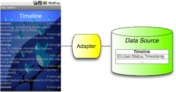 10.3.1. 为TimelineActivity添加ListView
同前面一样，第一步仍是修改资源文件。修改
timeline.xml，为Timeline的布局添加一个ListView。Example 10.3. res/layout/timeline.xml
<?xml version="1.0" encoding="utf-8"?> <LinearLayout xmlns:android="http://schemas.android.com/apk/res/android" android:orientation="vertical" android:layout_height="fill_parent" android:layout_width="fill_parent" android:background="@drawable/background"> <TextView android:layout_width="wrap_content" android:layout_height="wrap_content" android:layout_gravity="center" android:layout_margin="10dp" android:text="@string/titleTimeline" android:textColor="#fff" android:textSize="30sp" /> <!-- #{1} --> <ListView android:layout_height="fill_parent" android:layout_width="fill_parent" android:id="@+id/listTimeline" android:background="#6000" /> </LinearLayout>- 添加ListView与添加其它控件(widget)是一样的。主要的属性:
id，layout_height以及layout_width。
10.3.2. ListView vs. ListActivity
ListActivity即含有一个ListView的Activty，我们完全拿它作为TimelineActivity的基类。在这里我们选择独立实现自己的Activity，再给它加上ListView，是出于学习的考虑。
如果Activity中只有一个ListView，使用ListActivity可以稍稍简化下代码。有XML绑定，为ListActivity添加元素也轻而易举。不过在这里我们使用的数据源是Cursor而非数组(因为我们的数据来自数据库)，而且在前面我们也添加过一个TextView作为ScrollView的标题，已经有了一定程度的自定义，换用ListActivity不合适。
10.3.3. 为Row创建一个Layout
还有一个XML文件需要考虑。有
timeline.xml描述整个Activity的布局，我们也需要描述单行数据的显示方式——也就是在屏幕上显示的单条消息，谁在什么时间说了什么。最简单的方法就是给这些行单独创建一个XML文件。同前面新建的XML文件一样，选择File→New→Android New XML File打开Android New XML File对话框，命名为row.xml，type一项选择Layout。
我们在这里选择LinearLayout，让它垂直布局，分两行。第一行包含用户名与时间戳，第二行包含消息的内容。留意第一行中用户名与时间戳的位置是水平分布的。
ListView中单行的布局在文件
row.xml中定义。10.3.4. 在TimelineActivity.java中创建一个Adapter
现在我们已经有了相应的XML文件，接下来修改Java代码，把Adapter创建出来。Adapter通常有两种形式：表示来自数组的数据，或者表示来自Cursor的数据。在这里我们的数据来自数据库，因此选择基于Cursor的Adapter。其中最简单的当数
SimpleCursorAdapter。SimpleCursorAdapter需要我们给出单行数据显示方式的描述（在row.xml中已经做好了），数据（在这里是一个Cursor），以及单个record到List中单行的映射方法。最后的这个参数将Cursor的每列映射为List中的一个View。Example 10.5. TimelineActivity.java, version 2
package com.marakana.yamba5; import android.app.Activity; import android.database.Cursor; import android.database.sqlite.SQLiteDatabase; import android.os.Bundle; import android.widget.ListView; import android.widget.SimpleCursorAdapter; public class TimelineActivity2 extends Activity { DbHelper dbHelper; SQLiteDatabase db; Cursor cursor; // #{1} ListView listTimeline; // #{2} SimpleCursorAdapter adapter; // #{3} static final String[] FROM = { DbHelper.C_CREATED_AT, DbHelper.C_USER, DbHelper.C_TEXT }; // #{4} static final int[] TO = { R.id.textCreatedAt, R.id.textUser, R.id.textText }; // #{5} @Override protected void onCreate(Bundle savedInstanceState) { super.onCreate(savedInstanceState); setContentView(R.layout.timeline); // Find your views listTimeline = (ListView) findViewById(R.id.listTimeline); // #{6} // Connect to database dbHelper = new DbHelper(this); db = dbHelper.getReadableDatabase(); } @Override public void onDestroy() { super.onDestroy(); // Close the database db.close(); } @Override protected void onResume() { super.onResume(); // Get the data from the database cursor = db.query(DbHelper.TABLE, null, null, null, null, null, DbHelper.C_CREATED_AT + " DESC"); startManagingCursor(cursor); // Setup the adapter adapter = new SimpleCursorAdapter(this, R.layout.row, cursor, FROM, TO); // #{7} listTimeline.setAdapter(adapter); // #{8} } }- 这个Cursor用以读取数据库中的朋友消息。
listTimeLine即我们用以显示数据的ListView。adapter是我们自定义的Adapter，这在后文中讲解。FROM是个字符串数组，用以指明我们需要的数据列。其内容与我们前面引用数据列时使用的字符串相同。TO是个整型数组，对应布局row.xml中指明的View的ID，用以指明数据的绑定对象。FROM与TO的各个元素必须一一对应，比如FROM[0]对应TO[0]，FROM[1]对应TO[1]，如是继续。- 获取XML布局中声明的ListView。
- 获得了Cursor形式的数据，
row.xml定义了单行消息的布局，常量FROM与TO表示了映射关系，现在可以创建一个SimpleCursorAdapter。 - 最后通知ListView使用这个Adapter。
10.4. TimelineAdapter
TimelineAdapter即我们自定义的Adapter。虽说SimpleCursorAdapter映射起数据来倒也直白，但是我们在这里有个时间戳（timestamp）需要特殊处理。TimelineAdapter的工作即与之有关：加入将Unix时间戳转换为相对时间的业务逻辑。我们可以知道，
SimpleCursorAdapter是在bindView()调用中处理View的显示，因此我们将重载这个方法，在数据显示出来之前处理一下。一般来说，若不清楚类里需要重载的函数是哪个，看下相关的官方文档即可。在这里，可以参阅http://developer.android.com/reference/android/widget/SimpleCursorAdapter.html。
Example 10.6. TimelineAdapter.java
package com.marakana.yamba5; import android.content.Context; import android.database.Cursor; import android.text.format.DateUtils; import android.view.View; import android.widget.SimpleCursorAdapter; import android.widget.TextView; public class TimelineAdapter extends SimpleCursorAdapter { // #{1} static final String[] FROM = { DbHelper.C_CREATED_AT, DbHelper.C_USER, DbHelper.C_TEXT }; // #{2} static final int[] TO = { R.id.textCreatedAt, R.id.textUser, R.id.textText }; // #{3} // Constructor public TimelineAdapter(Context context, Cursor c) { // #{4} super(context, R.layout.row, c, FROM, TO); } // This is where the actual binding of a cursor to view happens @Override public void bindView(View row, Context context, Cursor cursor) { // #{5} super.bindView(row, context, cursor); // Manually bind created at timestamp to its view long timestamp = cursor.getLong(cursor .getColumnIndex(DbHelper.C_CREATED_AT)); // #{6} TextView textCreatedAt = (TextView) row.findViewById(R.id.textCreatedAt); // #{7} textCreatedAt.setText(DateUtils.getRelativeTimeSpanString(timestamp)); // #{8} } }- 创建我们自定义的Adapter。基于Android提供的Adapter派生一个新类，这里我们选择前面用到的SimpleCursorAdapter。
- 跟上个例子一样，这个常量用以指明数据库中我们感兴趣的列。
- 这个常量用以指明数据列对应View的ID。
- 因为是新定义的类，因此需要一个构造函数。在这里仅仅通过super调用父类的构造函数即可。
- 这里只重载了一个方法，即
bindView()。这个方法在映射每行数据到View时调用，Adapter的主要工作在这里进行了。要重用SimpleCursorAdapter原有的映射操作(数据到View)，记得先调用super.bindView()。 - 覆盖默认针对timestamp的映射操作，需要先得到数据库中timestamp的值。
- 然后找到对应的TextView，其定义在
row.xml。 - 最后，依据timestamp的值设置
textCreatedAt的值为相对时间。通过DateUtils.getRelativeTimeSpanString()。
前面将Adapter相关的一些细节移入了
TimelineAdapter，因此我们可以进一步简化TimelineActivity类。Example 10.7. TimelineActivity.java, version 3
package com.marakana.yamba5; import android.app.Activity; import android.database.Cursor; import android.database.sqlite.SQLiteDatabase; import android.os.Bundle; import android.widget.ListView; public class TimelineActivity3 extends Activity { DbHelper dbHelper; SQLiteDatabase db; Cursor cursor; ListView listTimeline; TimelineAdapter adapter; // #{1} @Override protected void onCreate(Bundle savedInstanceState) { super.onCreate(savedInstanceState); setContentView(R.layout.timeline); // Find your views listTimeline = (ListView) findViewById(R.id.listTimeline); // Connect to database dbHelper = new DbHelper(this); db = dbHelper.getReadableDatabase(); } @Override public void onDestroy() { super.onDestroy(); // Close the database db.close(); } @Override protected void onResume() { super.onResume(); // Get the data from the database cursor = db.query(DbHelper.TABLE, null, null, null, null, null, DbHelper.C_CREATED_AT + " DESC"); startManagingCursor(cursor); // Create the adapter adapter = new TimelineAdapter(this, cursor); // #{2} listTimeline.setAdapter(adapter); // #{3} } }- 修改
SimpleCursorAdapter为TimelineAdapter。 - 新建一个
TimelineAdapter的实例，交给它上下文及数据的引用。 - 将
ListView与这个Adapter关联，从而与数据库绑定。
10.5. ViewBinder: TimelineAdapter之外的更好选择
除去派生一个TimelineAdapter再重载
bindView()方法之外，我们可以直接为SimpleCursorAdapter添加业务逻辑。这样能够保留原先的bindView()所做的工作，而且省了一个类，更加简便。SimpleCursorAdapter提供了一个setViewBinder()方法为它的业务逻辑提供扩展，它取一个ViewBinder的实现作为参数。ViewBinder是个接口，里面声明了一个setViewValue()方法，也就是在这里，它将具体的日期元素与View真正地绑定起来。同样，我们可以在官方文档中发现这一特性。
如下即针对
TimelineAdapter的最后一轮迭代，我们实现一个自定义的ViewBinder作为常量，并把它交给SimpleCursorAdapter。Example 10.8. TimelineActivity.java with ViewBinder
... @Override protected void onResume() { ... adapter.setViewBinder(VIEW_BINDER); // #{1} ... } // View binder constant to inject business logic that converts a timestamp to // relative time static final ViewBinder VIEW_BINDER = new ViewBinder() { // #{2} public boolean setViewValue(View view, Cursor cursor, int columnIndex) { // #{3} if (view.getId() != R.id.textCreatedAt) return false; // #{4} // Update the created at text to relative time long timestamp = cursor.getLong(columnIndex); // #{5} CharSequence relTime = DateUtils.getRelativeTimeSpanString(view .getContext(), timestamp); // #{6} ((TextView) view).setText(relTime); // #{7} return true; // #{8} } }; ...- 将一个自定义的ViewBinder实例交给对应的Adapter。VIEW_BINDER的定义在后面给出。
- ViewBinder的实现部分。留意它是一个内部类，外面的类不可以使用它，因此不必把它暴露在外。同时留意下
static final表明它是一个常量。 - 我们需要实现的唯一方法即
setViewValue()。它在每条数据与其对应的View绑定时调用。 - 首先检查这个View是不是我们关心的，也就是表示消息创建时间的那个TextView。若不是，返回false，Adapter也就按其默认方式处理绑定；若是，则按我们的方式继续处理。
- 从
cursor中取出原始的timestamp数据。 - 使用上个例子相同的辅助函数
DateUtils.getRelativeTimeSpanString()将时间戳(timestamp)转换为人类可读的格式。这也就是我们扩展的业务逻辑。 - 更新对应View中的文本。
- 返回true，因此
SimpleCursorAdapter不再按照默认方式处理绑定。
10.6. 更新Manifest文件
好，现在我们有了
TimelineActivity，大可让它作为Yamba程序的“主界面”。毕竟比起自言自语，用户更喜欢关注朋友的动态。这就需要更新manifest文件了。同原先一样，我们将TimelineActivity列在AndroidManifest.xml文件的<activity>元素中。可参考"Update Manifest File"一节中添加选项界面时的情景。
<activity android:name=".TimelineActivity" />
要把它设为程序的“主界面”，我们需要为它注册到特定的Intent。通常情况是，用户点击启动你的程序，系统就会发送一个Intent。你必须有个Activity“侦听”到这个Intent才行，因此Andorid提供了IntentFilter，使之可以过滤出各自感兴趣的Intent。在XML中，它通过
<intent-filter>元素表示，其下至少含有一个<action>元素，以表示我们感兴趣的Intent。你可以注意到，
StatusActivity比PrefsActivity多出了一段XML代码，这便是IntentFilter的部分。里面有个特殊的
action，android.intent.action.MAIN，即指明了在用户打算启动我们的程序时首先启动的组件。除此之外还有个<category>元素，用以通知系统这个程序会被加入到main Launcher之中，这一来用户就可以见到我们程序的图标，点击即可启动。这个目录(category)的定义就是android.intent.category.LAUNCHER。好，要把
TimelineActivity置为主入口，我们只需加上相应的声明，再把StatusActivity中的代码挪过去即可。Example 10.9. AndroidManifest.xml
<?xml version="1.0" encoding="utf-8"?> <manifest xmlns:android="http://schemas.android.com/apk/res/android" android:versionCode="1" android:versionName="1.0" package="com.marakana.yamba5"> <application android:icon="@drawable/icon" android:label="@string/app_name" android:name=".YambaApplication"> <activity android:name=".TimelineActivity" android:label="@string/titleTimeline"> <intent-filter> <!-- #{1} --> <action android:name="android.intent.action.MAIN" /> <!-- #{2} --> <category android:name="android.intent.category.LAUNCHER" /> <!-- #{3} --> </intent-filter> </activity> <activity android:name=".PrefsActivity" android:label="@string/titlePrefs" /> <activity android:name=".StatusActivity" android:label="@string/titleStatus" /> <!-- #{4} --> <service android:name=".UpdaterService" /> </application> <uses-sdk android:minSdkVersion="8" /> <uses-permission android:name="android.permission.INTERNET" /> </manifest><intent_filter>将这个Activity所关心的Intent列出，并在系统中注册。- 通知系统，这就是用户启动时显示的主界面。
- 目录
LAUNCHER通知Home程序，将本程序的图标显示在Launcher中。 StatusActivity就不需要IntentFilter了。
10.6.1. 程序初始化
好，现在用户启动我们的程序就会首先看到Timeline界面。但是用户必须先设置个人选项并启动Service，否则就没有消息显示。这很容易让人摸不着头脑。
一个解决方案是，在启动时检查用户的个人选项是否存在。若不存在，就跳到选项界面，并给用户一个提示，告诉她下一步该怎么做。
... @Override protected void onCreate(Bundle savedInstanceState) { ... // Check whether preferences have been set if (yamba.getPrefs().getString("username", null) == null) { // #{1} startActivity(new Intent(this, PrefsActivity.class)); // #{2} Toast.makeText(this, R.string.msgSetupPrefs, Toast.LENGTH_LONG).show(); // #{3} } ... } ...- 检查用户的个人选项是否设置。在这里先只检查
username即可，因为有了username，往往就意味着所有个人选项都已设置。在第一次启动程序时个人选项还不存在，因此username(或者其它任意一项)肯定为null。 - 启动
PrefsActivity。留意这里的startActivity()调用给系统发送一个Intent，但并不会在这里退出onCreate()的执行。这一来就允许用户在设置完毕之后，可以回到Timeline界面。 - 显示一条弹出消息(即Toast)，提示用户该怎么做。同前面一样，这里假定你在
strings.xml中提供了msgSetupPrefs的定义。
10.6.2. BaseActivity
现在我们有了Timeline界面，接下来需要一个选项菜单，就像在
Options Menu一节中对StatusActivity所做的那样。这对Timeline界面来说很重要，因为作为主界面，要没有菜单，用户就没法访问其它界面或者控制Service的开关了。要实现上述功能，我们可以把
StatusActivity中相关的代码都复制粘贴过来，但这不是好办法。相反，我们应该优先考虑的是重构。在这里，我们可以将StatusActivity中相应的功能放在另一个Activity中，并使其作为基类。Figure 10.2. BaseActivity Refactor
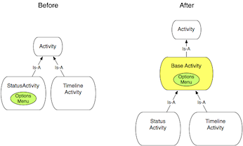
我们新建一个类
BaseActivity，然后把需要重用的代码挪到里面。这里重用的代码就是：获得YambaApplication对象引用、选项菜单的相关代码(onCreateOptionsMenu()和onOptionsItemSelected())。10.6.3. Service开关
在这个地方分别提供开/关两个按钮，总不如只留一个按钮做开关更好。因此需要修改菜单，并为
BaseActivity添加一个onMenuOpened()方法用以动态控制按钮文本以及图标的变化。首先修改munu.xml文件，添加新的菜单项，也就是开关按钮。这时原先启动/关闭Service的两个按钮已经没必要了，删除即可。
Example 10.10. res/menu/menu.xml[]
<?xml version="1.0" encoding="utf-8"?> <menu xmlns:android="http://schemas.android.com/apk/res/android"> <item android:id="@+id/itemStatus" android:title="@string/titleStatus" android:icon="@android:drawable/ic_menu_edit"></item> <item android:title="@string/titleTimeline" android:id="@+id/itemTimeline" android:icon="@android:drawable/ic_menu_sort_by_size"></item> <item android:id="@+id/itemPrefs" android:title="@string/titlePrefs" android:icon="@android:drawable/ic_menu_preferences"></item> <item android:icon="@android:drawable/ic_menu_delete" android:title="@string/titlePurge" android:id="@+id/itemPurge"></item> <!-- #{1} --> <item android:id="@+id/itemToggleService" android:title="@string/titleServiceStart" android:icon="@android:drawable/ic_media_play"></item> </menu>- 将原先的
itemServiceStart与itemServiceStop替换为itemToggleService。
Example 10.11. BaseActivity.java
package com.marakana.yamba5; import android.app.Activity; import android.content.Intent; import android.os.Bundle; import android.view.Menu; import android.view.MenuItem; import android.widget.Toast; /** * The base activity with common features shared by TimelineActivity and * StatusActivity */ public class BaseActivity extends Activity { // #{1} YambaApplication yamba; // #{2} @Override protected void onCreate(Bundle savedInstanceState) { super.onCreate(savedInstanceState); yamba = (YambaApplication) getApplication(); // #{3} } // Called only once first time menu is clicked on @Override public boolean onCreateOptionsMenu(Menu menu) { // #{4} getMenuInflater().inflate(R.menu.menu, menu); return true; } // Called every time user clicks on a menu item @Override public boolean onOptionsItemSelected(MenuItem item) { // #{5} switch (item.getItemId()) { case R.id.itemPrefs: startActivity(new Intent(this, PrefsActivity.class) .addFlags(Intent.FLAG_ACTIVITY_REORDER_TO_FRONT)); break; case R.id.itemToggleService: if (yamba.isServiceRunning()) { stopService(new Intent(this, UpdaterService.class)); } else { startService(new Intent(this, UpdaterService.class)); } break; case R.id.itemPurge: ((YambaApplication) getApplication()).getStatusData().delete(); Toast.makeText(this, R.string.msgAllDataPurged, Toast.LENGTH_LONG).show(); break; case R.id.itemTimeline: startActivity(new Intent(this, TimelineActivity.class).addFlags( Intent.FLAG_ACTIVITY_SINGLE_TOP).addFlags( Intent.FLAG_ACTIVITY_REORDER_TO_FRONT)); break; case R.id.itemStatus: startActivity(new Intent(this, StatusActivity.class) .addFlags(Intent.FLAG_ACTIVITY_REORDER_TO_FRONT)); break; } return true; } // Called every time menu is opened @Override public boolean onMenuOpened(int featureId, Menu menu) { // #{6} MenuItem toggleItem = menu.findItem(R.id.itemToggleService); // #{7} if (yamba.isServiceRunning()) { // #{8} toggleItem.setTitle(R.string.titleServiceStop); toggleItem.setIcon(android.R.drawable.ic_media_pause); } else { // #{9} toggleItem.setTitle(R.string.titleServiceStart); toggleItem.setIcon(android.R.drawable.ic_media_play); } return true; } }BaseActivity是个Activity。- 声明一个共享的YambaApplication对象，使之可为所有子类访问。
- 在
onCreate()中获得yamba的引用。 - 将
StatusActivity的onCreateOptionsMenu挪到了这里。 onOptionsItemSelected也是同样来自StatusActivity。不过留意下这里的变动：它不再检查启动/停止Service的两个条目，改为检查itemToggleService一个条目。通过yamba中的标志变量我们可以得到Service的运行状态，基于此，决定启动还是关闭。onMenuOpened()是个新加入的方法，它在菜单打开时为系统所调用，参数menu即我们的选项菜单。我们可以在这里控制开关的显示。- 在
menu对象中找到我们新建的开关条目。 - 检查Service是否正在运行，如果是，则设置对应的标题与图标。留意我们在这里是通过Java的API手工地修改GUI的内容，而无关xml。
- 如果Service没有运行，则设置对应的标题与图标，用户点击它即可启动Service。这样我们就实现了开关按钮随Service状态的不同而变化。
好，已经有了
BaseActivity类，接下来修改TimelineActivity也使用它。如下为TimelineActivity的完整实现：Example 10.12. TimelineActivity.java, final version
package com.marakana.yamba5; import android.content.Intent; import android.database.Cursor; import android.os.Bundle; import android.text.format.DateUtils; import android.view.View; import android.widget.ListView; import android.widget.SimpleCursorAdapter; import android.widget.TextView; import android.widget.Toast; import android.widget.SimpleCursorAdapter.ViewBinder; public class TimelineActivity extends BaseActivity { // #{1} Cursor cursor; ListView listTimeline; SimpleCursorAdapter adapter; static final String[] FROM = { DbHelper.C_CREATED_AT, DbHelper.C_USER, DbHelper.C_TEXT }; static final int[] TO = { R.id.textCreatedAt, R.id.textUser, R.id.textText }; @Override protected void onCreate(Bundle savedInstanceState) { super.onCreate(savedInstanceState); setContentView(R.layout.timeline); // Check if preferences have been set if (yamba.getPrefs().getString("username", null) == null) { // #{2} startActivity(new Intent(this, PrefsActivity.class)); Toast.makeText(this, R.string.msgSetupPrefs, Toast.LENGTH_LONG).show(); } // Find your views listTimeline = (ListView) findViewById(R.id.listTimeline); } @Override protected void onResume() { super.onResume(); // Setup List this.setupList(); // #{3} } @Override public void onDestroy() { super.onDestroy(); // Close the database yamba.getStatusData().close(); // #{4} } // Responsible for fetching data and setting up the list and the adapter private void setupList() { // #{5} // Get the data cursor = yamba.getStatusData().getStatusUpdates(); startManagingCursor(cursor); // Setup Adapter adapter = new SimpleCursorAdapter(this, R.layout.row, cursor, FROM, TO); adapter.setViewBinder(VIEW_BINDER); // #{6} listTimeline.setAdapter(adapter); } // View binder constant to inject business logic for timestamp to relative // time conversion static final ViewBinder VIEW_BINDER = new ViewBinder() { // #{7} public boolean setViewValue(View view, Cursor cursor, int columnIndex) { if (view.getId() != R.id.textCreatedAt) return false; // Update the created at text to relative time long timestamp = cursor.getLong(columnIndex); CharSequence relTime = DateUtils.getRelativeTimeSpanString(view .getContext(), timestamp); ((TextView) view).setText(relTime); return true; } }; }- 首先将基类由系统提供的
Activity改为我们的BaseActivity。由此也就继承来了yamba对象，以及选项菜单的相关支持。 - 在这里检查用户的个人选项是否存在，若不存在，则切换到选项界面。
- 在界面显示时，初始化消息列表。这是个私有方法，定义在后面。
- 我们希望在界面关闭时，关闭数据库并释放资源。数据库是在
yamba对象中的getStatusUpdates()方法中打开的。 - 辅助方法
setupList()用以获取数据、设置Adapter并将其绑定于ListView。 - 在这里将ViewBinder绑定于List。参见"ViewBinder：TimelineAdapter之外的更好选择"一节。
- ViewBinder的定义。
到这里，我们已经将
TimelineActivity重构的差不多了。按照如上的步骤，我们可以进一步简化StatusActivity，将选项菜单相关的代码清掉，从而使得BaseActivity、StatusDate、TimelineActivity的职责更加分明。Figure 10.3, “TimelineActivity” 展示了Timeline界面最后的样子。
Figure 10.3. TimelineActivity
10.7. 总结
到这里，Yamba除了可以发信息，也可以阅读朋友的消息了。我们的程序仍是完整可用的。
Figure 10.4 "Yamba Completion"展示了我们目前已完成的部分。完整图参见 Figure 5.4, Yamba Design Diagram。
Figure 10.4. Yamba Completion
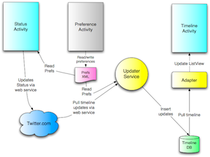
SOURCE:(index.t2t)